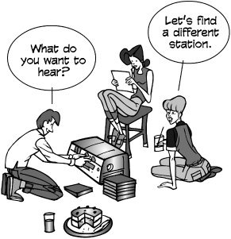

Hi! 嗨
Hello! 有人吗
Hello there! 你好啊
Howdy! 你好
Hey! 嘿
Yo! (slang)
哟! (俚语)
How are you? 近来可好？
How’s it going? 最近怎么样？
How is everything? 一切都好吗？
How’s everything? 一切都好吗？
How have you been? 你最近怎么样？
How’ve you been? 最近怎么样？
How you been? (informal)
你怎么样? (非正式)
How’s tricks? (informal)
怎么样? (非正式)
What have you been up to?
你最近在忙什么？
What’s new? (informal)
有什么新鲜事吗? (非正式)
What’s up? (informal)
怎么了
Wusup? / Wassup? (slang)
怎么样
What’s happening? (slang)
怎么了
What’s going on? (slang)
怎么回事
Good morning. 早上好
Morning. 早上好
Mornin’. (informal)
早上好
How are you this bright morning?
这个明媚的早晨你好吗？
Good afternoon. 下午好
Afternoon. 下午好
Good evening. 晚上好
Evening. 晚上好
I haven’t seen you in years!
我好多年没见到你了！
Long time no see! (informal)
好久不见! (非正式)
I haven’t seen you in an age!
好久不见！
I haven’t seen you in a month
我有一个月没见到你了
of Sundays! 星期天
a month of Sundays = a long time
一个月的星期天 = 很长的时间
Welcome back! 欢迎回来
Welcome back, stranger! 欢迎回来，陌生人
Long time no see! (cliché)
好久不见
Where were you? 你去哪了？
Where have you been? 你去哪儿了？
Where did you go? 你去哪儿了？

What a surprise to meet you here!
在这里见到你真是太惊喜了！
Imagine meeting you here! (cliché)
想象一下在这里遇见你! (陈词滥调)
Fancy meeting you here. (cliché)
很高兴在这里见到你
Never thought I’d see you here!
没想到会在这儿见到你！
What are you doing in this neck of the woods?
你在这附近干什么？
neck of the woods = part of town, location
城镇的一部分，位置
What are you doing in this part of town?
你来这里干什么？
What are you doing out of the office?
你怎么不在办公室？
Where’ve you been hiding yourself?
你躲到哪里去了？
What have you been up to?
你最近在忙什么？
Shouldn’t you be in school?
你不是应该在学校吗？
Shouldn’t you be at work?
你不是应该在工作吗？
Have you been keeping busy? 你一直很忙吗？
You been keeping busy? 你一直很忙吗？
Been keeping busy? 一直很忙吗？
We seem to keep running into each other.
我们似乎总是碰到对方。
Haven’t we met before? 我们以前见过吗？
We have to stop meeting like this. (cliché)
我们不能再这样见面了
Didn’t we meet at that party last week?
我们上周不是在派对上见过吗？
I’m sorry; I’ve forgotten your name.
对不起，我忘了你的名字。
I’ve been meaning to call you.
我一直想给你打电话。
How was it? 怎么样？
How did it go? 怎么样？
Did everything go OK? 一切顺利吗？
Did you have fun? 玩得开心吗？
You’ll have to tell us all about it.
你得把一切都告诉我们。
Did you take any pictures? 你拍照了吗？
Do you have pictures? 你有照片吗？
Were the locals friendly? 当地人友好吗？
Were the natives friendly? 当地人友好吗？
Did you bring me anything? 你给我带什么了吗？
We missed you. 我们很想你
We missed you around here. 我们都很想你
We’ve missed you around here.
我们都很想你。
It just wasn’t the same without you.
没有你，一切都不一样了。
Fine. 好吧
I’m fine. 我没事
I’m cool. (slang)
我没事
Keeping cool. 保持冷静
Dandy. (informal)
好极了
Fine and dandy. 好极了
Great. 很好
Couldn’t be better. 再好不过了
Happy as a clam. (cliché)
非常开心
Okay. 好吧
All right. 好吧
(I) can’t complain. 没什么可抱怨的
I have nothing to complain about.
我没什么好抱怨的。
Keeping busy. 一直很忙
Keeping myself busy. 让自己忙起来
Been keeping myself busy. 一直让自己很忙
Keeping out of trouble. 远离麻烦
Been keeping out of trouble. 一直没惹麻烦
Been up to no good. (informal)
没干什么好事。(非正式)
Been keeping my nose clean. (informal)
我一直不惹麻烦

Getting by. 还过得去
Been getting by. 还过得去
Fair to middling. (folksy)
一般般吧
So-so. (informal)
一般般。(非正式)
Plugging along. (informal)
坚持下去。(非正式)
Could be worse. 可能更糟
Could be better. 可能会更好
(Just) muddling through. 勉强度日
Same as always. 一如既往
Same as usual. 和往常一样
Same o(l)’ same o(l)’ (informal)
相同的 o (l)’相同的 o (l)’(非正式)
Not good. 情况不妙
Not so good. 不太好
Not too good. 不太好
None too good. 不太好
Not well. 不太好
Not very well. 不太好
Not so well. 不太好
Not too well. 不太好
None too well. 不太好
Not so hot. 不怎么样
Not too hot. 别太热
None too hot. 不要太烫
Not great. 不太好
Not so great. 不太好
None too great. 不是很好
Crummy. (slang)
糟透了
Kind of crummy. (slang)
有点糟糕
Lousy. (slang)
糟透了
I’ve seen better days. 我见过更好的日子
I’ve had better days. 我有过更好的日子
Could be better. 可能会更好
I’ve been better. 好多了
I’ve been under the weather.
我身体不舒服。
I’m busy. 我很忙
Keeping busy. 一直很忙
Keeping myself busy. 让自己忙起来
Been keeping myself busy. 一直让自己很忙
I’m swamped. 我忙得不可开交
swamped = overwhelmed, as with a swamped boat
被淹没的[淹没的] ，如被淹没的船
I’m snowed under. 我被大雪困住了
snowed under = as if buried in snow
好像被雪埋住了
I don’t have time to breathe.
我没时间呼吸了。
I don’t have time to think.
我没时间思考。
There aren’t enough hours in the day.
白天没有足够的时间。
Not a moment to spare. 没时间了
I’ve been running around with my head cut off. (informal)
我一直到处乱跑，头都被砍掉了。(非正式)
I’ve been running around like a chicken with its head cut off.
我像只被砍头的鸡一样到处乱跑。
(informal 非正式的)
Do you have time for coffee?
你有时间喝咖啡吗？
How about a cup of coffee?
来杯咖啡怎么样？
Let’s go get coffee. Do you have any time?
我们去喝咖啡吧，你有时间吗？
Let’s go for coffee. 我们去喝咖啡吧
Let’s go for a beer.
我们去喝一杯吧。
Let’s go for a drink.
我们去喝一杯吧。
I’d like you to meet my friend Mary.
我想让你见见我的朋友玛丽。
I’d like you to meet Mary.
我想让你见见玛丽。
This is my friend Mary. 这是我的朋友玛丽
John, (this is) Mary. Mary, John.
约翰，这是玛丽。玛丽，约翰。
Mary, have you met John? 玛丽，你见过约翰吗？
Mary, do you know John? 玛丽，你认识约翰吗？
Mary, shake hands with John Jones.
玛丽，和约翰 · 琼斯握手。
Do you two know each other?
你们俩认识吗？
Have you met? 你们见过吗？
Have you two been introduced? 你们俩认识了吗？
Haven’t you been introduced? 你还没被介绍过吗？
Oh, I’m sorry; how silly of me. This is Mary.
哦，对不起，我真傻，这是玛丽。
Mary, John is the guy I was telling you about. (informal)
玛丽，约翰就是我跟你说过的那个人。(非正式)
You two have a lot in common.
你们俩有很多共同点。
Good to meet you. 很高兴见到你
Nice to meet you. 很高兴认识你
Nice meeting you. 很高兴认识你
How nice to meet you. (formal)
很高兴见到你
How very nice to meet you. (formal)很高兴见到你
What a pleasure to meet you. (formal)
很高兴见到你。(正式)
It’s a pleasure to have finally met you. (formal)
很高兴终于见到你了。(正式)
I am pleased to make your acquaintance. (formal)
我很高兴认识你。(正式)
I’m happy to meet you.
很高兴见到你。
I’m glad to meet you.
很高兴见到你。
Glad to meet you. 很高兴见到你
Charmed. (formal)
真迷人
A pleasure. (formal)
很高兴见到你
I’ve been wanting to meet you for some time.
我早就想见你了。
John has told me all about you.
约翰把你的事都告诉我了。
John has told me so much about you.
约翰跟我说了很多关于你的事。
I’ve heard so much about you.
久仰大名。
I’ve heard so much about you I feel I know you already.
我听说了很多关于你的事，我觉得我已经认识你了。
So we finally meet face to face.
我们终于见面了。
We’ve exchanged e-mails; it’s nice to meet in person.
我们通过电子邮件，很高兴能见面。
I’m sorry, what was your name again?
不好意思，你叫什么来着？
I didn’t catch your name. I’m terrible at names.
我还不知道你的名字，我记不住名字。

How are you? 近来可好？
How’s your family? 你家人怎么样？
How’s the family? 家里怎么样？
How are you doing? 你好吗？
How are you doing today? 你今天怎么样？
How you doing? 你好吗？
Are you doing OK? 你还好吗？
How are you feeling? 你感觉怎么样？
How you feeling? 你感觉怎么样？
Are you feeling better today? 你今天感觉好点了吗？
How have you been? 你最近怎么样？
How you been? 最近怎么样？

How’re things? 最近怎么样？
How’re things with you? 你怎么样？
How’re things going? 最近怎么样？
How’s with you? 你怎么样？
How’s by you? (slang)
你怎么样? (俚语)
How’s business? 生意怎么样？
How’s tricks? (slang)
怎么样? (俚语)
How’s it shakin’? (slang)
怎么样? (俚语)
How’s everything? 一切都好吗？
How’s every little thing? (folksy)
一切都好吗
How’s everything going? 最近怎么样？
How’s it going? 最近怎么样？
How goes it? 怎么样？
How goes it with you? 你怎么样？
How are you getting on? 你过得怎么样？
How are you getting along? 你过得怎么样？
How’s the world (been) treating you?
这个世界对你怎么样？
Oh, look at the time! 哦，看看时间
It’s getting later. 时间不早了
Well, David, it’s really good to see you, but I really must go.
大卫，很高兴见到你，但我真的得走了。
It’s been fun talking to you.
和你聊天很开心。
(It’s been) nice chatting with you.
很高兴和你聊天。
It’s so good to see you again.
很高兴再次见到你。
We have to make plans to get together some time.
我们得制定计划，找个时间聚一聚。
Let’s do lunch sometime. 改天一起吃午饭吧

I really have to go now. We’ll talk sometime.
我真的得走了，我们以后再谈。
There’s someone on the other line. I must say good-bye now.
有人在另一条线上。我必须说再见了。
The doorbell is ringing. I’ll call you back.
门铃响了，我再打给你。
Can I call you back? Something has come up.
我再打给你好吗? 有点事。
I have to get back to my work. I’ll call again later.
我得回去工作了，我晚点再打给你。
Can we continue this later? My other line is ringing.
我们能晚点再继续吗? 我的电话响了。
I have to get back to work before the boss sees me.
我得在老板看到我之前回去工作。
I won’t keep you any longer.
我不打扰你了。
I’ll let you go now.
我现在放你走。
I’m going to have to run.
我得走了。
Must run. (informal)
必须跑。(非正式)
I’m all out of time. I’ll have to say good-bye now.
我没时间了，我现在得说再见了。
Look at the time. I really must go.
看看时间，我真的得走了。
It’s been great talking to you, but I have to go.
很高兴和你聊天，但我得走了。
Wow! I’m late. Look, I’ll call you.
我要迟到了，我会打给你的。
Sorry, but I have to leave now.
抱歉，我得走了。
Let’s continue this another time. I really must go.
我们下次再继续吧，我真的得走了。
Good-bye. 再见
Bye. 再见
Bye-bye. 再见
So long. 再见
Ta-ta. (informal)
回见
Farewell. 永别了
Cheerio. 再见
Hasta la vista. (Spanish)再见(西班牙语)
Adios. (Spanish)
再见(西班牙语)
Auf wiedersehen. (German)
再见(德语)
Sayonara. (Japanese)
再见(日语)
Arrivederci. (Italian)
再见(意大利语)
Au revoir. (French)
再见(法语)
Adieu. (French)
再见(法语)
Ciao. (Italian)
再见(意大利语)
Good day. (formal)
日安
Good evening. (formal)
晚上好
Good night. 晚安
Good-bye until later. 晚点再见
Good-bye until next time. 下次再见
Good-bye for now. 再见了
See you later. 回头见
See you later, alligator. (slang)
再见，短吻鳄
Later, gator. (slang)
回见，鳄鱼
Later. (informal)
回见
I’ll try to catch you later.
我晚点再来找你。
I’ll catch you later. 回头见
Catch you later. 回头见
I’ll talk to you soon.
回头再聊。
Let’s get together soon. 我们很快会再见面的
I’ll be seeing you. 回头见
I’ll see you real soon.
我们很快会再见的。
See you. 再见
See ya. (informal)
再见
See you soon. 回头见
See you real soon. 一会儿见
See you around. 回头见
See you in a little while.
一会儿见。
See you next year. 明年见
See you then. 到时候见
See you tomorrow. 明天见
Good running into you. 很高兴见到你
running into you = meeting up with you
遇见你
Nice running into you. 很高兴见到你
Nice talking to you. 很高兴和你聊天
Take care. 保重
(It was) good to see you.
很高兴见到你。
(It was) nice to see you.
很高兴见到你。
Nice meeting you. 很高兴认识你
It was a pleasure meeting you. (formal)
很高兴认识你
It is a pleasure to have met you. (formal)
很高兴见到你。(正式)
It’s been a real pleasure. (formal)
很高兴认识你
Are we ready to leave? 我们准备好离开了吗？
Are you about finished? 你说完了吗？
Are you ready to go? 你准备好走了吗？
Ready to go? 可以走了吗？
Ready to roll? (slang)
准备好了吗
Are we away? (slang)
我们走了吗? (俚语)
Let’s blow. (slang)
我们走吧
blow = leave 离开
Let’s get out of this taco stand. (slang)
让我们离开这个玉米卷摊。(俚语)
taco stand = a cheap place; an undesirable place
廉价的地方; 不受欢迎的地方
Let’s blow this joint. (slang)
我们走吧
= Let’s leave this place. 我们离开这里吧
Let’s go while the going’s good. (cliché)
趁现在还好，我们走吧。(陈词滥调)
Let’s = Time to, We’ve got to
我们得走了
Let’s get while the getting’s good. (cliché)
让我们趁机行动。(陈词滥调)
Let’s head out. 我们出发吧
Let’s beat a hasty retreat. (cliché)
我们赶紧撤退吧
Let’s make tracks. (informal)
我们走吧。(非正式)
make tracks = leave a trail (as we go)
(我们走的时候)留下痕迹
to motor = to leave by automobile
乘汽车离开
Let’s hit the road. (slang)
我们上路吧
Let’s boogie. (slang)
我们走吧
Let’s split. (slang)
我们走吧
Let’s make like a tree and leave. (jocular)
让我们像一棵树一样离开。(滑稽)
Let’s make like the wind and blow. (jocular)
让我们像风一样吹。(滑稽)
Let’s make like a banana and split. (jocular)
让我们像一个香蕉和分离。(滑稽)
Exit stage right. 右边退场
Exit stage left. 离开舞台左边
Retreat! (slang)
撤退
Bon voyage! 一路顺风
Have a good trip! 旅途愉快
Have a nice flight. 旅途愉快
Have a nice trip. 旅途愉快
Have a safe trip. 一路顺风
Have a safe journey. 一路顺风
Drive carefully. 小心开车
Take care of yourself. 照顾好自己
Take care. 保重
We’ll miss you. 我们会想你的
All the best. 一切顺利
I’ll call you when I get home.
我回家后给你打电话。
Call when you get there. 到了给我打电话
Don’t forget to call. 别忘了打电话
Write me. 写信给我
Let’s write. 我们写吧
You’ve got my e-mail address?
你有我的邮箱地址吗？
Text me. 发短信给我
Facebook = Twitter, MySpace, LinkedIn, etc.
Facebook = Twitter，MySpace，LinkedIn 等等。
Let’s do lunch. 我们去吃午饭吧
I’ll be in touch. 保持联系
Let’s keep in touch. 我们保持联系
Yes. 是的
Yeah. (informal)
是啊。(非正式)
Yep. (informal)
是的
Yup. (informal)
是的
Right. 对
You’re right. 你说得对
Right you are. 你说得对
Right on! 好极了
Right-o. 好的
Uh-huh. 嗯
Sure. 当然
Sure thing. 没问题
You got it. 没问题
You bet. 当然
Absolutely. 当然
By all means. 当然可以
This is true. 这倒是真的
That’s true. 那倒是真的
You’re right. 你说得对
Ain’t that the truth? 这不是事实吗？
Ain’t it the truth? 这不是事实吗？
That’s right. 没错
That’s for certain. 这是肯定的
That’s for sure. 那是肯定的
That’s for darn sure. 这是肯定的
That’s for damn sure. (mildly vulgar)
那是当然的
Damn straight! (mildly vulgar)
太对了
It works for me. 对我有用
Well said. 说得好
I agree. 我同意
I agree with you 100 percent.
我百分之百同意。
I couldn’t agree with you more.
我完全同意。
I have no problem with that.
我没意见。
We see eye to eye on this.
我们意见一致。
I couldn’t have said it better.
我说得再好不过了。
You took the words right out of my mouth.
你抢了我的台词。
I’ll drink to that! 我要为此干杯
It’s fine. 没关系
I think it’s fine. 我觉得挺好的
It’s good enough. 已经够好了
It’s satisfactory. 我很满意
It’ll do. 可以了
It’ll serve the purpose. 这样才能达到目的
I like it. 我喜欢
I love it. 我很喜欢
I think it’s great. 我觉得很棒
I like the color. 我喜欢这颜色
I like the texture. 我喜欢这口感
I like the flavor. 我喜欢这味道
It’s got a good rhythm.
节奏不错。
It’s wonderful. 太棒了
It’s fabulous. 太棒了
It’s ideal. 很理想
It’s a masterpiece. 这是杰作
It’s perfect. 太完美了
It’s A-1. 是 A-1
This is second to none. 这是首屈一指的
This is perfect. 太完美了
This is far and away the best.
这无疑是最好的。
This is the ultimate. 这是终极的
It couldn’t be better. 再好不过了
Never been better. 好得不能再好了
There’s none better. 没有比这更好的了
It doesn’t get any better than this.
没有比这更好的了。
I’ve never seen anything like it.
我从没见过这样的东西。
This is the cream of the crop. (cliché)
这是精英中的精华。(陈词滥调)
This is the pick of the litter. (idiomatic)
这是最好的。(惯用语)
litter = a group of newborn pups
一群刚出生的幼崽
This is the crême de la crême. (cliché)
这是最好的
= This is the best of the best.
这是精英中的精英。
This is head and shoulders above the rest.
这是头和肩上的休息。
That suits me to a T.
非常适合我。
= That suits me fine. 那很适合我
That’s the ticket. (idiomatic)
就是这样
That’s just what the doctor ordered. (idiomatic)
这正是医生要求的。(惯用语)
That’s just what I needed.
这正是我需要的。
That hits the spot. (idiomatic)
正中要害
That fits the bill. (idiomatic)
这符合条件。(惯用语)
That’s it. 就是这样
That’s the greatest thing since sliced bread. (cliché)
这是自切片面包以来最伟大的事情。(陈词滥调)
It’s in a league of its own.
它有自己的一套。
I give it four stars. 我给它四颗星
It gets two thumbs up. (idiomatic)
它得到了两个大拇指。(惯用语)
I’ve hit the jackpot. 我中大奖了
jackpot = sum of money to be won in gambling
在赌博中赢得的钱
Bingo! (slang)
宾果! (俚语)
= I did it! 我做到了
Jackpot! (slang)
中大奖了
= I did it!; It is good!
- 我做到了!-太棒了！
Bonus score! (slang)
奖金得分! (俚语)
I hear you. 我听到了
I hear you, man. 我听到了，伙计
I hear what you’re saying.
我明白你的意思。
I see what you’re saying.
我明白你的意思了。
I can see what you’re saying.
我明白你的意思。
I can see that. 看得出来
I see what you mean. 我明白你的意思了
I see where you’re coming from.
我明白你的意思了。
I know. 我知道
I know what you mean. 我明白你的意思
Point well taken. 说得好
I know what you’re talking about.
我知道你在说什么。
I understand what you’re saying.
我明白你的意思。
Understood. 明白
I dig it. (slang)
我喜欢
I can dig it. (slang)
我明白
I got you. 我抓住你了
Gotcha. 抓到你了
(I) got it. 知道了
I follow you. 我跟着你
I’m with you. 我支持你
I’m there with you. 我和你在一起
I’ve been there. 我也经历过
Read you loud and clear. 听得很清楚
Roger. 收到
Roger, wilco. 收到，明白
wilco = will comply 将遵守
Roger Dodger. (slang)
Roger Dodger (俚语)

Do you know what I mean?
你明白我的意思吗？
Do you know what I’m talking about?
你知道我在说什么吗？
Know what I mean? 明白我的意思吗？
Does that make any sense? 这说得通吗？
Am I making sense? 我说的有道理吗？
Are you following me? 你在跟踪我吗？
Know what I’m saying? 明白我的意思吗？
You know? 你知道吗？
Do you see what I mean?
你明白我的意思吗？
See what I mean? 明白我的意思了吧？
Don’t you see? 你还不明白吗？
Do you get the message? 你明白了吗？
Do you get the picture? 你明白了吗？
Get the message? 明白了吗？
Get the picture? 明白了吗？
Get my drift? 明白我的意思吗？
Do you get it? 你明白了吗？
Get it? 懂了吗？
Do you follow? 你明白吗？
Do you follow me? 你明白我的意思吗？
Dig? (slang)
挖? (俚语)
= Do you understand? 你明白吗？
Understand? 明白吗？
Do you understand? 你明白吗？
Do you hear what I’m saying?
你听到我说的了吗？
Do you hear me? 听到了吗？
Do you see where I’m coming from?
你知道我是从哪儿来的吗？
where I’m coming from = what my position is
我的立场是什么
Do you agree? 你同意吗？
You’re with me, right? 你跟我一起的，对吧？
Are you with me on this?
你同意吗？
Do we see eye to eye on this?
我们意见一致吗？
No. 没有
Nope. 没有
No way. 不可能
Not a chance. 想都别想
Not! (slang)
不! (俚语)
Uh-uh. 嗯
I don’t think so. 我不这么认为

That’s not true. 不是这样的
That’s not right. 这样不对
You’ve got that wrong. 你搞错了
You’ve got it all wrong.
你完全搞错了。
Wrong! 错
You missed the boat. (idiomatic)
你错过了船。(惯用语)
You’re missing the boat. (idiomatic)
你要错过好戏了
Wrong on both counts. 两方面都错了
You’re wrong. 你错了
You’re dead wrong. 你大错特错了
You’re off. 你出局了
You’re way off base. 你大错特错了
I disagree completely. 我完全不同意
I couldn’t disagree (with you) more.
我(与你)完全不同意。
Horsefeathers! (slang)
马毛! (俚语)
Bullshit. (taboo)
胡扯
That’s BS. (mildly vulgar)
胡说八道
Bull. (mildly vulgar)
胡说八道
Baloney. (slang)
胡扯
That’s a load of crap. (mildly vulgar)胡说八道
That’s a lot of bull. (mildly vulgar)
真是胡说八道
That’s a lot of baloney. (slang)
胡说八道
That’s a bunch of baloney. (slang)
胡说八道
That’s a bunch of malarkey. (slang)
胡说八道
Lies! 撒谎
That’s a lie. 你在说谎
That’s a big, fat lie. (informal)
这是个弥天大谎
You’re lying through your teeth.
你在睁眼说瞎话。
Look me in the eye and say that.
看着我的眼睛说。
That’s out of the question.
那是不可能的。
That’s unthinkable. 不可思议
That’s insane. 这太疯狂了
That doesn’t even merit a response.
这根本不值得回应。
I’ll give that all the consideration it’s due.
我会好好考虑的。

I can’t stand it. 我受不了了
I hate it. 我讨厌这样
I don’t care for it.
我不喜欢。
I don’t like it. 我不喜欢这样
It’s not my style. 这不是我的风格
It’s not for me. 不是给我的
It stinks. (informal)
臭死了
It sucks. (mildly vulgar)
糟透了
It reeks. (informal)
真臭
My kid could do that. 我的孩子也能做到
It’s awful. 太可怕了
It’s terrible. 太可怕了
It’s ugly. 真难看
It’s hideous. 太可怕了
It’s dreadful. 太可怕了
It’s hell on earth. (informal)这是人间地狱。(非正式)
I don’t get it. 我不明白
Don’t quit your day job.
不要辞掉你的工作。
No. 没有
Nope. (informal)
没有
No way. 不可能
No way, José. (informal)
不可能，何塞
No can do. (informal)
不行。(非正式)
No, sir. 没有，长官
No sirree. (folksy)
没有先生
No sirree, Bob. (folksy)
没有先生，鲍勃
Sorry. 对不起
Nothing doing. 什么都不做
You’re out of luck. 你真不走运
In a pig’s eye. (idiomatic)
在猪眼里。(惯用语)
When pigs fly. (idiomatic)
当猪会飞的时候。(惯用语)
When hell freezes over. (informal)
当地狱结冰。(非正式)
There isn’t a snowball’s chance in hell. (informal)
地狱里没有雪球的机会。(非正式)
Not a chance. 想都别想
No chance. 不可能
Not if I can help it.
如果我能帮忙的话。
Not likely. 不太可能
Not bloody likely. (mildly vulgar)
不太可能
Absolutely not! 绝对不行
It will be a cold day in hell before I do that. (informal)
在我那样做之前，将会是地狱般的寒冷一天。(非正式)
Only in your dreams. 只有在你的梦里
Dream on. 做梦去吧
Save your breath. 省省吧
Save it. 省省吧
You’re barking up the wrong tree. (idiomatic)
你找错人了。(惯用语)
Over my dead body. (idiomatic)
除非我死了
Forget it. 算了吧
If you think that, you’ve got another think coming.
如果你这么想，那你就大错特错了。
Not for a million dollars. 不是为了一百万美元
You couldn’t pay me to do it.
你付不起我的钱。
Not in your wildest dreams. 你做梦都想不到
You wish. 想得美
I’ll be damned first. (mildly vulgar)
我会先被诅咒
I’ll be damned if I do. (mildly vulgar)
如果我这样做，我会被诅咒的。(稍微粗俗)
Damned if I will. (mildly vulgar)
该死的，如果我愿意。(稍微粗俗)
Like hell. (mildly vulgar)
去死吧
I’ll see you in hell first. (mildly vulgar)
我们地狱见
What are you talking about? 你说什么呢？
You don’t know what you’re talking about.
你根本不知道自己在说什么。
You don’t have a leg to stand on.
你没有立足之地。
You haven’t got a leg to stand on.
你没有立足之地。
You don’t know the first thing about it.
你什么都不知道。
You’re really stretching the truth.
你说的太夸张了。
You’re way off base. 你大错特错了
You can lay that notion to rest.
你可以放弃这个想法了。
You’ve got it all wrong.
你完全搞错了。
You’ve got the facts wrong.
你把事实弄错了。
You’ve got your facts wrong.
你把事实弄错了。
You haven’t got the facts.
你没有掌握事实。
You haven’t got the facts right.
你没有掌握事实。
I don’t think you’ve got your facts straight.
我觉得你没有把事实弄清楚。
Don’t speak until you’ve got your facts straight.
在你弄清事实之前不要说话。
Next time get the facts straight. (informal)
下次把事实弄清楚。(非正式)
Next time get the facts first. (informal)
下次先了解事实。(非正式)
Don’t jump to conclusions. 别急着下结论
Pardon me. (formal)
不好意思
Excuse me. 不好意思
Hey! (informal)
嘿! (非正式)
Hey, you! (informal)
嘿，你! (非正式)
Yo! (slang)
哟! (俚语)

Look here. (informal)
看这里。(非正式)
Listen here. (informal)
听着
Listen up. (informal)
听好了
Get a load of this. (informal)
看看这个。(非正式)
Now hear this! (informal)
现在听好了
Hear me out. 听我说完
Are you ready for this? (informal)
你准备好了吗? (非正式)
Listen. (informal)
听着。(非正式)
Are you listening to me? 你在听我说话吗？
Are you paying attention? 你在听吗？
I’m talking to you. 我在跟你说话
Do you hear me? 听到了吗？
Do I have your ear? (idiomatic)
我有你的耳朵吗? (惯用语)
Can I bend your ear a minute? (idiomatic)
我能和你说几句话吗? (惯用语)
Am I making myself heard? 我有让别人听到吗？
Look at this. 看看这个
Take a look at this. 看看这个
Get a load of this. 看看这个
Take a gander at that. (informal)
看看这个。(非正式)
a gander = a look 看一眼
Feast your eyes on this. 好好看看这个
Look what we have here. 看看这是什么
Lookie here. (informal)
看这里。(非正式)
Lookit. (slang)
看
Look here. 看这里
Can you eyeball this (for a minute)? (slang)
你能看一下这个(一分钟)吗? (俚语)
to eyeball = to look at 注视，注视
Can you believe your eyes? 你能相信自己的眼睛吗？
I don’t believe my eyes.
我不敢相信我的眼睛。
Do my eyes deceive me? 我的眼睛欺骗了我吗？
That’s a sight for sore eyes.
真是赏心悦目啊。
I hear you. 我听到了
I heard you. 我听到了
I’m listening. 洗耳恭听
I’m still here. 我还在这里
I’m all ears. 洗耳恭听
Guess what? 你猜怎么着？
Have you heard the latest? 你听说最新消息了吗？
Have you heard? 你听说了吗？
Did you hear what happened? 你听说发生什么事了吗？
Did you hear the news? 你听说了吗？
Did you get the scoop? (informal)
你拿到独家新闻了吗? (非正式)
the scoop = the most recent news
最新消息
You’ll never guess what I heard.你绝对猜不到我听到了什么。
You’ll never guess what I read online.
你绝对猜不到我在网上看到了什么。
Guess what I just saw online.
猜猜我刚在网上看到了什么。
Guess what I just found out.
猜猜我发现了什么。
You won’t believe this. 你不会相信的
You won’t believe what Bill just told me.
你不会相信比尔刚才跟我说了什么。
Get a load of this. (informal)
看看这个。(非正式)
a load = a sampling 取样
Get this. (informal)
听好了
Dig this. (slang)
听好了
to dig = to understand 挖掘[了解]
You got a minute? 有时间吗？
Got a minute? 有时间吗？
I need to talk. 我得跟你谈谈
Can we talk? 我们能谈谈吗？
Can I talk to you? 我能跟你谈谈吗？
May I have a word with you? (formal)
我能和你说句话吗? (正式)
Let’s talk. 我们谈谈吧
Let’s chew the fat. (slang)
我们开门见山吧
Let’s shoot the breeze. (slang)
我们来闲聊吧
May I be frank? 我能说实话吗？
Let me be perfectly clear. 让我把话说清楚
Make no bones about it. (idiomatic)
毫不掩饰。(惯用语)
= Do not make any bones of contention about this.
= 不要对这件事争论不休。
Read my lips. (informal)
读我的唇语。(非正式)
= Pay close attention to what I am saying.
密切注意我说的话。
(To a make a) long story short. (cliché)
长话短说。(陈词滥调)
Let’s call a spade a spade. (cliché)
让我们实话实说。(陈词滥调)
Let me spell it out for you.
我跟你说清楚。
the bottom line = the summation; the final and major point
底线 = 总和; 最后一点和主要观点

What’s your point? 你想说什么？
What’s the point? 有什么意义呢？
What’s the upshot? 结果呢？
the upshot = the result 结果 = 结果
What’s the bottom line? 底线是什么？
the bottom line = the summation; the final and major point
底线 = 总和; 最后一点和主要观点
What are you trying to say?
你想说什么？
What are you trying to tell me?
你想告诉我什么？
Get to the point. 说重点
Get to the heart of the matter.
抓住问题的核心。
Cut to the chase. (idiomatic)
直奔主题
= Switch to the focal point of something.
转到某物的焦点。
If I may. 如果可以的话
= If I may interrupt.; If I may add some information.
如果我可以打断一下，如果我可以补充一些信息。
Pardon my French. 原谅我说脏话
= Pardon my use of vulgar words.
原谅我说粗话。
No pun intended. 没有双关语
= I intended to make no joke or play on words.
我不想开玩笑，也不想玩文字游戏。
If you know what I mean.
如果你明白我的意思。
= I assume you understand what I mean.
= 我想你明白我的意思。
Know what I mean? (informal)
明白我的意思吗? (非正式)
= Do you understand what I am saying?
你明白我在说什么吗？
You know what I’m saying?
你明白我的意思吗？
= Do you understand what I am saying?
你明白我在说什么吗？
You know? 你知道吗？
= Do you understand what I am saying?
你明白我在说什么吗？
= Is that not so? 是不是这样？
OK? 好吗？
= Is that not so? 是不是这样？

Enough already. (informal)
够了
Out with it! (informal)
说出来! (非正式)
= Say it!; Speak out! - 说出来!-说出来
Don’t mince words. 别拐弯抹角
to mince = to cut up or disguise
切碎; 切碎; 切碎
Spare (me) nothing. 什么都别给我
Lay it on the line. (informal)
说出来吧
Tell it to me like a man. (informal)
像个男人一样告诉我。(非正式)
Give it to me straight. (informal)
直接告诉我。(非正式)
straight = unadorned 直的，朴实的
Give it to me in plain English.
用简单的英语告诉我。
plain English = simple and direct terms
简单直接的术语
Don’t beat around the bush. (idiomatic)
不要拐弯抹角。(惯用语)
Stop beating around the bush. (idiomatic)
别拐弯抹角了。(惯用语)
Stop circumventing the issue. 别再回避这个问题了
Put your cards on the table. (idiomatic)
把你的牌放在桌子上。(惯用语)
Stop speaking in circles. 别兜圈子了
What does that mean in English? (informal)
这在英语中是什么意思? (非正式)
Cut the crap. (mildly vulgar)
废话少说
crap = dung = needless talk 废话 = 废话 = 废话
That’s beside the point. 这不是重点
That’s beside the question. 这不是问题的关键
That’s not at issue. 这不是问题所在
That’s not the issue. 这不是重点
That’s irrelevant. 这无关紧要
That has nothing to do with it.跟这个没关系。
That has nothing to do with what I’m talking about.
这跟我说的没关系。
That’s another story. 那就另当别论了
That’s a whole ‘nother story. (folksy)
那就完全是另一回事了
That’s a different ball of wax. (idiomatic)
那是另一个蜡球。(惯用语)
ball of wax = thing; matter 一团蜡[物质]
That’s a different kettle of fish. (idiomatic)
那是另一回事。(惯用语)
kettle of fish = thing; matter 物质，物质
That’s another can of worms. (idiomatic)
这是另一个令人头疼的问题。(惯用语)
can of worms = set of problems
一堆问题
That’s a horse of a different color. (idiomatic)
那是一匹不同颜色的马。(惯用语)
a horse of a different color = a different kind of problem altogether
一匹不同颜色的马 = 一个完全不同的问题
You’re off on a tangent.
你跑题了。
You’re getting off the subject.
你跑题了。
As you were saying . . . 如你所说..
Getting back to the point . . . 言归正传
But I digress. (formal)
但我跑题了。(正式)

Let me repeat myself. 我再说一遍
Allow me to repeat myself. (formal)
请允许我重复一遍。(正式)
At the risk of repeating myself . . .
冒着重复我说过的话的风险。
As I’ve said . . . 就像我说的
As I am fond of saying . . .
正如我喜欢说的. 。
To reiterate . . . 重申一下
To repeat . . . 重复一遍..
How many times do I have to tell you?
我要告诉你多少次？
If I’ve told you once, I’ve told you a thousand times. (cliché)
如果我告诉你一次，我已经告诉你一千次。(陈词滥调)
If I’ve said it once, I’ve said it a million times. (cliché)
如果我说过一次，我已经说过无数次了。(陈词滥调)
So you said. 你是这么说的
Stop beating a dead horse. 别白费力气了
beating a dead horse = continuing to argue a point that has been won
打败一匹死马(继续争论已经赢得的一分)
Stop harping on that subject. 别在那个问题上喋喋不休了
harping on = dwelling on; talking about
喋喋不休，喋喋不休
You sound like a broken record. (idiomatic)
你听起来就像一张破唱片。(惯用语)
broken record = a grooved LP album with a scratch that makes the same track repeat endlessly
一张有划痕的有凹槽的唱片，使同一首歌曲不断重复
Must you belabor the point? 你必须反复强调这一点吗？
All right, already. 好了
We get the point, already. 我们已经明白了
We heard you, already. 我们已经听到了
So it seems. 看起来是这样
So it would seem. 看起来是这样
Or so it would appear. 至少看起来是这样
As it were. 可以这么说
So to speak. 可以这么说
In a manner of speaking. 可以这么说
I heard it through the grapevine.
听到传闻。
the grapevine = a chain of rumors
一连串的谣言
I heard it on the grapevine.
我听小道消息说的。
A little bird told me. (cliché)
一只小鸟告诉我的
I have my sources. 我有自己的消息来源
I got it straight from the horse’s mouth. (idiomatic)
我直接从马嘴里说出来的。(惯用语)
from the horse’s mouth = from the source
从马嘴里[从源头]说出来的
It’s common knowledge. 这是常识
We live in a fishbowl. (informal)
我们住在鱼缸里。(非正式)
= We are completely on display.; We are openly visible to everyone.
= 我们完全展示出来了。 ; 我们对每个人都是公开可见的。
Word travels fast. (cliché)
消息传得真快
News travels fast. (cliché)
消息传得真快
Bad news travels fast. (cliché)
坏消息传得真快
None of your business. (informal)
不关你的事
Just never (you) mind. 只是(你)不要介意
We have our ways (of finding these things out). (jocular)
我们有自己的方法(找出这些事情)。(滑稽)
I plead the fifth. (informal)
我拒绝回答(非正式)
I’m taking the fifth. (informal)
我采取第五。(非正式)
the fifth = the Fifth Amendment to the U.S. Constitution, which protects against self-incrimination
美国宪法第五修正案，保护自证其罪
I’m not one to kiss and tell. (cliché)
我不是那种喜欢到处说闲话的人
to kiss and tell = to do something secret and tell everyone about it
做一些秘密的事情并告诉每个人
We’re very close. 我们很亲密
We’re the closest of friends.
我们是最亲密的朋友。
We’re the best of friends.
我们是最好的朋友。
We’re best friends. 我们是最好的朋友
We’re pretty tight. 我们关系很好
They’re bosom buddies. 他们是知己
She’s my best friend. 她是我最好的朋友
She’s my closest friend. 她是我最好的朋友
She’s a dear friend. 她是我的好朋友
She’s like a sister to me.
她就像我的妹妹一样。
He’s like the brother I never had.
他就像我从未有过的兄弟。
We’re like brothers. 我们就像兄弟一样
He’s one of a kind.
他是独一无二的。
Sue’s one of a kind.
Sue 是独一无二的。
What a character! 真是个人物
They don’t make them like him anymore. (cliché)
他们不再让他们喜欢他了。(陈词滥调)
After they made him, they broke the mold. (cliché)
他们创造了他之后，他们打破了常规。(陈词滥调)
We’re two of a kind.
我们是一类人。
They’re two of a kind.
他们是一类人。
We’re cut from the same cloth.
我们是一路货色。
We’re made from the same mold.
我们是一个模子里刻出来的。
We’re birds of a feather. (cliché)
我们是同类。(陈词滥调)
We’re like two peas in a pod.
我们就像一个豆荚里的两颗豌豆。
May I join you? 我能坐下吗？
Is this stool taken? 这张凳子有人坐吗？
Is this seat taken? 这个位子有人吗？
Do you care if I join you?
你介意我加入吗？
Care if I join you? 介意我加入吗？
Do you mind if I join you?
介意我加入吗？
Mind if I join you? 介意我加入吗？
Care to join us? 一起来吗？
Can I buy you a drink?
我能请你喝一杯吗？
Could I buy you a drink?
我能请你喝一杯吗？
Could I get you something to drink?
要喝点什么吗？
What are you drinking? 你在喝什么？
Do you know who does this song?
你知道这首歌是谁唱的吗？
does = sings 唱歌
Would you like to play darts?
你想玩飞镖吗？
Let’s play pool. 我们打台球吧
pool = billiards 台球
Care to dance? 想跳舞吗？
Would you like to dance? 你想跳舞吗？
You want to dance? (informal)
你想跳舞吗? (非正式)
Could I have the next dance?
我能跳下一支舞吗？
May I have the next dance? (formal)
我可以跳下一支舞吗? (正式)

That’s a pretty outfit. (male to female)
好漂亮的衣服
That’s a pretty dress. (male to female)
好漂亮的裙子
What’s shaking? (slang)
什么在摇晃
shaking = happening 发生
Don’t I know you from somewhere?
我是不是在哪儿见过你？
Didn’t we go to high school together?
我们不是高中同学吗？
Haven’t I seen you here before?
我以前在这儿见过你吗？
Do you come here often? 你经常来这里吗？
What’s a nice girl like you doing in a place like this? (male to female, cliché)
像你这样的好女孩在这种地方干什么? (男人对女人，陈词滥调)
Do you have a smoke? 你有烟吗？
a smoke = a cigarette 一支烟
Do you have a light? 你有火吗？
a light = a match or cigarette lighter
火柴或打火机
Do you have a cigarette? 你有烟吗？
Do you have change for the cigarette machine?
你有零钱买香烟机吗？
Would you like to go somewhere quieter?
你想去个安静点的地方吗？
Are you going my way? 你要跟我走吗？
Going my way? (cliché)
走我的路? (陈词滥调)
Could I give you a lift?
我能载你一程吗？
a lift = a ride 搭便车[乘车]
Need a lift? 要搭便车吗？
Where have you been keeping yourself?
你一直躲在哪里？
Where have you been all my life? (cliché)
你这辈子都去哪儿了? (陈词滥调)
Are you free Saturday evening? 你星期六晚上有空吗？
Are you free Saturday night? 你周六晚上有空吗？
Are you busy on the 15th?
你15号忙吗？
What are you up to this weekend?
你这个周末有什么打算？
What are you doing next weekend?
你下周末干什么？
Would you like to go to dinner?
你想去吃晚饭吗？
Would you like to go out to dinner with me?你愿意和我一起出去吃晚饭吗？
I was wondering if you’d like to go out.
我在想你是否愿意出去。
I was wondering if you’d like to see a movie.
不知道你想不想看电影。
If you’re not doing anything, would you like to go to a party with me?
如果你没事的话，愿意和我一起去参加派对吗？
If you don’t have other plans, would you like to go dancing?
如果你没有其他计划，你愿意去跳舞吗？

I’m not interested. 我没兴趣
I’m seeing someone else. 我在和别人约会
I have other plans. 我另有安排
I’ve got something going on.
我有事要忙。
Something suddenly came up. 突然有事
I have to wash my hair.
我得去洗头了。
My calendar is full. 我的日程满了
You’re not my type. 你不是我喜欢的类型
Not if you were the last man on earth. (rude)
除非你是地球上最后一个男人
You must be joking. (rude)
你一定是在开玩笑。(粗鲁)
I don’t feel up to it.
我觉得我做不来。
I have a headache. 我头疼
Please. (with a disgusted tone of voice)
拜托
Let’s call it a day.
今天到此为止吧。
Let’s call it a night.
今晚到此为止吧。
Let’s call it quits. 我们分手吧
= Let’s quit (and leave). 我们走吧
Let’s get out of here.
我们走吧。
Let’s get going. 我们走吧
Let’s go. 我们走吧
We should be on our way.
我们该走了。
Let’s bid our farewell. (formal)
让我们告别吧。(正式)
Let’s say our good-byes. (formal)
让我们说再见吧。(正式)

I’ll stand by you. 我会支持你
I’m standing behind you. 我就站在你身后
I am 100 percent behind you.
我百分百支持你。
I’m with you. 我支持你
I’m on your side. 我是站在你这边的
I’ve got your back. (informal)
我支持你。(非正式)
You’ve got my support. 我支持你
You’ve got my backing. 我支持你
You’ve got my vote. 我投你一票
You can count on me. 你可以相信我
You can lean on me. 你可以依靠我
You can trust me. 你可以相信我
You can put your trust in me.
你可以相信我。
You can put your faith in me.
你可以相信我。
If there’s anything I can do to help, please let me know.
如果有什么我能帮忙的，请告诉我。
Let me know if there’s anything I can do.
有什么需要我帮忙的尽管说。
I’m here if you need me.
有需要就叫我。
I’m here for you. 我是为你而来的
If you need me, call. 如果你需要我，打电话给我
I’ll always be there for you.
我会永远在你身边。
I’ll go to bat for you.
我会为你出头的。
to go to bat for you = to support you
支持你
I’ll take the rap. (slang)
我来背黑锅
the rap = the blame 指责
I have faith in you. 我对你有信心
I have the utmost faith in you.
我对你有绝对的信心。
I have complete faith in you.我对你有绝对的信心。
I trust you completely. 我完全信任你
I trust you implicitly. 我完全信任你
I have faith in you. 我对你有信心
I have confidence in you. 我对你有信心
Go on; you can do it!
加油，你可以的！
Just one more. 再来一杯
Just a little harder. 再用点力
Hang in there. 坚持住
Stick with it. 坚持下去
Stay at it. 坚持住
Go for it. 去吧
Give it a try. 试试看
Give it a shot. 试试看
a shot = a try 试一试
Give it your best shot. 尽你最大的努力
Give it your best. 全力以赴
Keep at it. 继续努力
Keep your nose to the grindstone. (idiomatic)
埋头苦干。(惯用语)
= Keep bent over your work. = Keep working hard.
继续努力工作。
Hang in there. (informal)
坚持住
Hang tough. (slang)
坚持住
Stick it out. (informal)
坚持下去。(非正式)
Have a go at it. 试试吧
a go = a try 试一试
Take a shot at it. (informal)
试试看。(非正式)
a shot = a try 试一试
Take a stab at it. (informal)
试试看。(非正式)
a stab = a try 刺[试]一下
Take a crack at it. (informal)
尝试一下。(非正式)
a crack = a try 一次尝试
Have a crack at it. 试试看
Take a whack at it. (informal)
试试看。(非正式)
a whack = a try 尝试
Come on. (informal)
来吧
It won’t hurt you to try it.
试试又不会怎样。
Everybody’s doing it. 每个人都这么做
Everyone else is doing it. 其他人都这么做
It’s all the rage. 风靡一时
the rage = the current fad 当前的流行
Try your luck. 试试你的运气
See what you can do. 看看你能做些什么
Nothing ventured, nothing gained. (cliché)
没有冒险，就没有收获。(陈词滥调)
Go on. 继续
Get going. 走吧
Get going already. 快走吧
Get moving. 动起来
No pain, no gain. (cliché)
没有付出，就没有收获。(陈词滥调)
Get a move on. (informal)
动作快点。(非正式)
Get cracking. (slang)
开始吧
Get on the stick. (slang)
站到操纵杆上
Get the lead out. (slang)
把铅拿出来
Get off your ass. (mildly vulgar)
站起来
Let’s see some action. (informal)
让我们看看一些行动。(非正式)
It’s now or never. 机不可失，时不再来
Take no prisoners! (informal)
不留活口! (非正式)
Fish or cut bait! (idiomatic)
要么上钩，要么放弃! (惯用语)
Knock yourself out. (idiomatic)
请自便
= Try really hard.; Work as hard as you can.
尽你所能努力工作。
Go for broke. (informal)
孤注一掷。(非正式)
= Risk everything. = 不惜一切代价
I expect to see some results soon.我希望很快能看到结果。
Are you just going to stand there all day?
你打算一整天都站在那里吗？
Are you just going to sit there?
你就打算坐在那里吗？
Aren’t you going to do anything?
你不打算做点什么吗？
Are you just going to sit there like a bump on a log? (informal)
你就打算坐在那儿，像个木头上的凸起一样吗? (非正式)
a bump on a log = a motionless object
原木上的凸起[不动的物体]
You’re letting the world pass you by.
你让这个世界与你擦肩而过。
That won’t do. 不行
That won’t do it. 这样不行
That doesn’t cut it. (idiomatic)
这可不行
to cut it = to do what is needed
做需要做的事
That doesn’t cut the mustard. (idiomatic)
这可不管用。(惯用语)
to cut the mustard = to measure up to expectations
达到期望
That doesn’t make the grade.
那也不能说明什么。
to make the grade = to qualify
达到等级[合格]
Is that it? 是这样吗？
It’s not up to snuff.
不合格。
Is that all? 就这些吗？
You call that finished? 你说完了？
Once more with feeling. (cliché)
再一次带着感情。(陈词滥调)
Wait. 等等
Wait a moment. 等一下
Wait a minute. 等一下
Wait a sec(ond). 等一下
Wait one moment. 等一下
Wait one minute. 等一下
Wait one sec(ond). 等一下
Wait it out. 再等等
Wait your turn. 轮到你了
Just a moment. 等一下
Just a minute. 等一下
Just a sec(ond). 等一下
Just one moment. 等一下
Just one minute. 等一下
Just one sec(ond). 等一下
Hold your horses. (idiomatic)
等一下
= Wait a bit. 等一下
Keep your pants on. (informal)
穿好你的裤子。(非正式)
= Wait a bit. 等一下
Keep your shirt on. (informal)
穿好衣服。(非正式)
= Wait a bit. 等一下
Take things as they come. 顺其自然吧
Take it as it comes. 顺其自然吧
Take it one day at a time.
慢慢来。
Take things one day at a time.
慢慢来。
Take one day at a time. Time will tell. (cliché)
慢慢来，时间会证明一切。(陈词滥调)
= We will know more in time.
我们迟早会知道的。
Rome wasn’t built in a day. (cliché)
罗马不是一天建成的。(陈词滥调)
= Big projects require a lot of time.
大项目需要很多时间。
A watched pot never boils. (cliché)
心急吃不了热豆腐。(陈词滥调)
= Paying constant attention to something you are waiting for will make the wait seem endless.
不断地关注你正在等待的东西会让你的等待看起来无止境。
Good things come to him who waits. (cliché)
等待的人会得到好东西。(陈词滥调)
One step at a time. 一步一步来
One day at a time. 慢慢来
Good things come to those who wait. (cliché)
好事总是发生在等待的人身上。(陈词滥调)
Patience is a virtue. (cliché)
耐心是美德
In good time. 在适当的时候
All in good time. 时机未到
Everything in its time. 一切都在它的时间
There’s a time for everything.
凡事都有时间。
It will work out in the end.
最终会解决的。
Everything will come together. 一切都会好起来的
Everything will fall together. 一切都会好起来的
Everything will fall into place. 一切都会好起来的
In the long run, everything will be OK. (informal)
从长远来看，一切都会好起来的。(非正式)
In the long haul, it will all work out.
从长远来看，一切都会解决的。
Everything will work itself out. 一切都会好起来的
I am confident it will all work out.
我相信一切都会好起来的。
It ain’t over till it’s over. (informal)
没结束就不算结束
It ain’t over till the fat lady sings. (cliché)
除非胖女人唱歌，否则一切都不会结束。(陈词滥调)
= The opera is not over until the overweight opera singer has done her solo. = The event will not conclude until everything that was planned to happen has happened.
这位肥胖的歌剧演员不完成她的独唱，歌剧就不会结束。在计划中的一切发生之前，这件事不会结束。
Don’t jump the gun. 别操之过急
to jump the gun = to start a race before the starting gun is fired = to do something too early
抢在发令枪响之前开始比赛
Don’t go off half-cocked.
不要草率行事。
half-cocked = ill-prepared 准备不足
Don’t go chomping at the bit.
不要急于求成。
chomp = to bite (as with an eager horse)
咬(如对急切的马)
Don’t put the cart before the horse.
不要本末倒置。
Don’t count your chickens before they hatch.
小鸡还没孵出来，别高兴得太早。
= Don’t base your plans on something that hasn’t developed yet.
不要把你的计划建立在还没有发展起来的东西上。
Don’t cross that bridge till you come to it.
船到桥头自然直。
= We will deal with that when the time comes.
到时候我们会处理的。
We’ll cross that bridge when we come to it.
船到桥头自然直。
Don’t get ahead of yourself.
别操之过急。
You can’t please everybody. (cliché)
你不可能取悦所有人
You can’t be all things to all people. (cliché)
你不可能对所有人都一视同仁。(陈词滥调)
You’ve got your fingers in too many pies. (idiomatic)
你做的馅饼太多了。(惯用语)
You’ve got your irons in too many fires. (idiomatic)
你在太多的火灾中受伤了。(惯用语)
You’re burning the candle at both ends. (cliché)
你在两头烧蜡烛。(陈词滥调)
You’re taking too many things on.
你承担的事情太多了。
You’re taking on too much.
你承担的太多了。
You’re doing too much. 你做的太多了
You’re trying to do too much.
你想做的太多了。
You’re overcommitted. 你负担过重了
You’re overdoing it. 你太夸张了
You’re carrying the world on your shoulders.
你肩负着整个世界。
You need to set your priorities.
你得分清轻重缓急。

Take care of it. 搞定它
Take good care of it. 好好保管
I’m trusting you to take good care of it.
我相信你会处理好的。
Keep an eye on it. 看好了
Guard it with your life. 用你的生命保护它
Don’t let it out of your sight.
别让它离开你的视线。
I want this back. 我想要回这个
I want it back in one piece.
我要它完好无损地回来。
in one piece = unbroken; unharmed 完好无损
Bring it back in one piece.
把它完好无损地带回来。
Just between you and me . . . 就你知我知
Just between you, me, and the lamppost . . .
只有你，我，还有灯柱. 。
This is between you, me, and the bedpost.
这是你我和床柱之间的事。
This is between you, me, and the four walls.
这是你，我，还有四面墙之间的事。
I’m telling you this in confidence.
我是私下告诉你的。
I’m telling you this in strict con?dence.我是绝对保密的。
I’m telling you this in strictest confidence.
我是绝对保密的。
Can you keep a secret? 你能保守秘密吗？
Don’t repeat this, but . . . 别再说了，但是..
Don’t let this get around, but . . .
别让这事传出去，但是..。
Could you keep a secret? 你能保守秘密吗？
Confidentially . . . 机密地.

Better keep quiet about it. 最好保持沉默
Better keep still about it. 最好别动
Keep it to yourself. 别告诉别人
Don’t breathe a word of this to anyone.
不要把这件事告诉任何人。
Don’t breathe a word of it.
一个字都别说出去。
Don’t let it out of this room.
别让它跑出这个房间。
it = the secret 它 = 秘密
Don’t let this go any further.
别再继续下去了。
Don’t tell a soul. 别告诉任何人
a soul = a person 灵魂[人]
Mum’s the word. 保密
mum = a word referring to a closed mouth
指紧闭的嘴的词
It’s on the QT. (slang)
这是秘密行动
QT = quiet QT = 安静
Play dumb. 装傻
This is top secret. 这是最高机密
This is for your eyes only.
这只是给你看的。
This is for your ears only.
这只是你的耳朵。
Don’t say I told you.
别说是我告诉你的。
Don’t say who told you.
别说是谁告诉你的。
This is off the record. 这是非正式的
off the record = not to be reported or quoted
不予报道或引用
This is not for the record.
我不会记录在案的。
This is not to be quoted.
这句话不能引用。
This is not for public knowledge.
这事不能公开。
This is not public knowledge. 这不是公开的
This is not for publication. 这不是公开的
I won’t tell a soul.
我不会告诉任何人。
a soul = a person 灵魂[人]
My lips are sealed. (cliché)
我会守口如瓶的
It won’t leave this room.
它不会离开这个房间。
Wild horses couldn’t drag it out of me. (cliché)
野马也不能把它从我身上拽出来。(陈词滥调)
I’ll take it to my grave.
我会把它带进坟墓。
= I’ll die without telling the secret to anyone.
= 我死也不会把这个秘密告诉任何人。
Where was I? 我说到哪儿了？
= What was I saying? 我刚才说什么来着？
What was I saying? 我刚才说什么来着？
What were we talking about? 我们刚才说到哪儿了？
I don’t remember. 我不记得了
I have a mind like a sieve.
我的头脑就像筛子。
a sieve = a strainer or colander
筛子; 过滤器
I’m a little absentminded. 我有点心不在焉
absentminded = forgetful 心不在焉 = 健忘
I’d lose my head if it weren’t attached. (informal)
如果没有它，我会失去我的头。(非正式)
I’ve lost my train of thought.
我失去了思路。
train of thought = sequence of thoughts
一连串的思想
It’s at the tip of my tongue.
就在嘴边。
= It is about ready to be said.
就快要说出来了。
It’s on the tip of my tongue.
就在嘴边。
It’s slipped my mind. 我忘了
The thought escapes me. 我没想到
It’s left my head. 它离开了我的脑袋
What was your name again? 你叫什么来着？
What did you just say? 你刚才说什么？
It went in one ear and out the other. (cliché)一只耳朵进，一只耳朵出。(陈词滥调)
Are we supposed to be someplace right now?
我们现在应该在什么地方吗？
I’m in trouble. 我有麻烦了
I’m in big trouble. 我有大麻烦了
I’m in deep trouble. 我有大麻烦了
I’m in deep. 我陷得很深
I’m in over my head.
我已经力不从心了。
I’m in way over my head.
我已经力不从心了。
I’m behind the eight ball. (idiomatic)
我落后了。(惯用语)
= I’m in trouble with someone.
= 我有麻烦了。
My ass is in a sling. (mildly vulgar)
我的屁股被吊起来了
in a sling = injured = at risk
受伤[处于危险中]
My ass is on the line. (mildly vulgar)
我命悬一线
on the line = at risk 处于危险中
My neck is on the line.
我命悬一线。
My job is on the line.
我的工作岌岌可危。
My reputation is on the line.
我的名声岌岌可危。
My reputation is at stake. 我的名誉岌岌可危
at stake = at risk 危在旦夕

Your goose is cooked. (idiomatic)
你完蛋了。(惯用语)
= You are in trouble. 你有麻烦了
You’ve really screwed up. (informal)
你真的搞砸了。(非正式)
You’ve done it now. 你已经做到了
Now you’ve done it. 现在你做到了
You’ve really done it this time.
你这次真的做到了。
You’re in for it. 你完蛋了
You’re gonna get it. (informal)
你会得到它的。(非正式)
How could you do something so stupid?
你怎么能做这么蠢的事？
What kind of mess did you get yourself into?
你惹了什么麻烦？
That’s another fine mess you’ve gotten us into. (informal)你又把我们搞得一团糟。(非正式)
How are you going to dig yourself out of this one?
你打算怎么摆脱这个麻烦？
How are you going to get out of this one?
你打算怎么脱身？
You’ve made your bed; now lie in it.
你已经自作自受了，现在好好躺着吧。
= You have created this situation, so you must endure it.
是你造成了这种局面，所以你必须忍受。
You’re up the creek without a paddle. (informal)
没有船桨，你就像在小溪里游泳。(非正式)
You’re up a creek. (informal)
你有麻烦了。(非正式)
You’re up the creek. (informal)
你太过分了。(非正式)

I’m broke. 我破产了
broke = without any money 没有钱
I’m dead broke. 我破产了
I’m flat broke. 我破产了
I’m flatter than a pancake. (informal)
我比煎饼还平。(非正式)
flatter than a pancake = as flat broke as is possible
尽可能平坦
I don’t have a dollar to my name.
我身无分文。
to my name = in my ownership
归我所有
I don’t have a penny to my name.
我身无分文。
I don’t have a cent to my name.
我身无分文。
I don’t have a red cent. (informal)
我没有一分钱。(非正式)
red cent = a copper penny 一个铜便士
I’m busted. (slang)
我被逮到了
busted = without any money 没有钱
I’m as poor as a church mouse. (idiomatic)
我像教堂里的老鼠一样穷。(惯用语)
My pockets are empty. 我的口袋空了
I have empty pockets. 我的口袋是空的
All I have is the shirt on my back.
我只有背上的衬衫。
the shirt on my back = the clothes that you see me in
你看到我穿的衣服
I’ve got nothing but the shirt on my back.
我除了背上的衬衫什么都没有。
All I have is my good name.
我只有我的好名声。
my good name = my reputation 我的好名声
I don’t know where my next meal is coming from.
我不知道我下一顿饭是从哪里来的。
My savings are wiped out. 我的积蓄都花光了
I’ve lost everything. 我失去了一切
I’m bankrupt. 我破产了
I’m in the red. 我负债了
red = red ink = indebtedness 赤字 = 负债
She’s in over her head (in debt). (idiomatic)
(惯用语)她(负债)太多了
I’m up to my ears in debt. (idiomatic)
我债台高筑。(惯用语)
Bill’s writing rubber checks. 比尔在开空头支票
a rubber check = a bad check (that bounces back from the bank because there is no money to pay it)
空头支票 = 空头支票(由于没有钱支付而从银行退回)
I’m borrowing from Peter to pay Paul. (idiomatic)
我从彼得那里借钱给保罗。(惯用语)
I’m robbing Peter to pay Paul. (idiomatic)
我要抢彼得的东西来付保罗的钱。(惯用语)

I’m going nuts. (slang)
我要疯了
nuts = crazy 疯子 = 疯子
I’m going crazy. 我要疯了
I’m losing my mind. I’m losing my marbles. (informal)
我要疯了，我要疯了
losing my marbles = losing my intellect
失去理智
I’m freaking out. (slang)
我吓坏了
I’m spazzing out. (slang)
我要疯了
I’m mad at the world.
我对这个世界感到愤怒。
I need a break. 我需要休息一下
I need some sleep. 我需要睡一会儿
I’m going to explode. 我要爆炸了
My head is going to explode.
我的头要爆炸了。
Everything is getting on my nerves.
一切都让我心烦意乱。
I can’t take it anymore.
我再也受不了了。
I can’t take another problem.
我再也受不了了。
I can’t deal with this anymore.
我受不了了。
I’m on pins and needles. (idiomatic)我如坐针毡。(惯用语)
on pins and needles = in anxious anticipation
如坐针毡
I’m on tenterhooks. 我心神不宁
tenterhooks = a type of sharp nail used for fastening fabric
用于紧固织物的一种尖钉
I’m a bundle of nerves.
我太紧张了。
I’ve got butterflies in my stomach. (idiomatic)
我心里七上八下的。(惯用语)
= My stomach is feeling like it is fluttering.
我的胃感觉像是在颤动。
I’m coming apart at the seams.
我快崩溃了。
I’m falling apart at the seams.
我快崩溃了。
I’m burning the candle at both ends. (cliché)
我在两头烧蜡烛。(陈词滥调)
I scarcely have time to breathe.
我几乎没有时间呼吸。
I have no time to call my own.
我没有时间自己打电话。
Calm down. 冷静点
Simmer down. 冷静点
Control yourself. (informal)
控制你自己。(非正式)
Don’t go into hysterics. 不要歇斯底里
Don’t be such a worrywart.
别杞人忧天了。
a worrywart = a person who worries a lot
忧心忡忡的人
Don’t worry yourself sick. 别担心了
Don’t lose sleep over it.
别因为这个睡不着。
Don’t let it get to you.
别让它影响到你。
Don’t trouble yourself. 不用麻烦了
You’ll send yourself to an early grave.
你这样会让自己早死的。
an early grave = an early death
早逝
Don’t get all bent out of shape!
别大发雷霆！
Don’t get your nose out of joint!
别让你的鼻子离开关节！
Learn to roll with the punches.
学会应对困难。
I didn’t mean any harm.
我没有恶意。

Pull yourself together. 振作起来
Don’t get excited. 别激动
Don’t get all excited. 别太激动
Don’t get all worked up.
别激动。
Don’t blow your stack. (slang)
别大发雷霆
to blow your stack = to lose your temper; to go crazy
发脾气; 发疯
Don’t lose your cool. (slang)
不要失去你的冷静。(俚语)
Don’t blow your cool. (slang)
别搞砸了
Don’t blow a gasket. (slang)
不要发脾气。(俚语)
Don’t go into hysterics. 不要歇斯底里
Don’t go into hysterics on me.
别对我歇斯底里。
Don’t fly off the handle.
别大发雷霆。
Don’t pop your cork. (slang)
不要开瓶塞。(俚语)
to pop your cork = to go crazy
开瓶塞[发疯]
Don’t work yourself into a tizzy. (informal)
不要把自己弄得神经兮兮的。(非正式)
a tizzy = a dizzy, confused state
眩晕，混乱
Don’t run around like a chicken with its head cut off. (informal)
不要像没头的鸡一样到处乱跑。(非正式)
Restrain yourself. 克制一下
Would you restrain yourself? 你能克制一下吗？
Get a grip (on yourself). (informal)
控制一下(自己)。(非正式)
Would you get a grip? (informal)
你能冷静一下吗? (非正式)
Mellow out. (slang)
放松
= Adopt a calm attitude. 采取冷静的态度
Chill out. (slang)
冷静点
Chill. (slang)
冷静
Keep cool. (slang)
保持冷静
Cool it. (slang)
冷静点
Cool your jets. (slang)
冷静点
Cool off. (informal)
冷静下来。(非正式)
Cool down. (informal)
冷静下来。(非正式)
Slow down. 慢点
Simmer down. 冷静点
Calm down. 冷静点
Be calm. 冷静点
Calm yourself. 冷静点
Relax. Deal with it. (informal)
放松，自己解决
Hold your horses. (cliché)
等等
Keep your shirt on. (informal)
穿好衣服。(非正式)
Keep your pants on. (informal)
穿好你的裤子。(非正式)
Take a deep breath. 深呼吸
Take it easy. 放轻松
Take it slow. 慢慢来
Take a tranquilizer! (informal)
吃点镇静剂! (非正式)
Take a pill! (informal)
吃药吧! (非正式)
Don’t have a cow! 没有奶牛
Don’t have a conniption fit.
不要大发雷霆。
Don’t throw a fit. 别生气
Don’t have a fit. 没有发作
Give it a break. 省省吧
Give it a rest. 省省吧
You got ants in your pants?
你裤子里有蚂蚁吗？
You’re as cold as ice.
你像冰一样冷。
You’re a cold fish. 你是个冷血动物
You’re cold-blooded. 你真冷血
You’ve got a heart of stone.
你有一颗铁石心肠。
You’re heartless. 你真没良心
You’re thick-skinned. 你脸皮真厚
Have you no qualms? 你不觉得不安吗？
Have you no scruples? 你没有良心吗？
Have you no conscience? 你没有良心吗？
Have you no thought for anyone but yourself?
除了你自己，你就没想过别人吗？
Think before you speak. 说话前先想清楚
Think before you act. 三思而后行
Try putting yourself in my shoes.
试着站在我的角度想想。
= Think what it is like to be in my situation.
想想我现在的处境。

This is a nonsmoking area. 这里是禁烟区
This is a nonsmoking building. 这是一座禁止吸烟的建筑物
You’ll have to step outside.
你得出去一下。
Please observe the no-smoking signs. (formal)
请注意禁止吸烟标志。(正式)
Can you put that out? 你能把火扑灭吗？
Please put that out. 请把火灭了
I’m sorry, you’ll have to put that out.
对不起，你得把火扑灭。
I’m sorry, the smoke is bothering me.
对不起，烟雾让我不舒服。
Have you ever thought of quitting?
你想过辞职吗？
It’s your funeral. (informal)
这是你的葬礼。(非正式)
You smoke like a chimney. (informal)
你抽起烟来像个烟囱。(非正式)
Mind your own business. 少管闲事
Go to a nonsmoking area. 去禁烟区
I can’t quit. 我不能辞职
I tried quitting. 我试过戒烟
I have no intention of quitting.
我没打算辞职。
Sorry. 对不起

Got a match? 有火柴吗？
You got a lighter? 你有打火机吗？
Can I bum a light? 能借个火吗？
to bum = to beg 乞讨
Can I bum a cigarette off you?
我能向你讨根烟吗？
Can I have a drag? 我能抽一口吗？
a drag = a puff of smoke
一股烟
Where is the smoking room? 吸烟室在哪里？
Where can you smoke around here?
这附近哪里可以抽烟？
Do you mind if I smoke?
你介意我抽烟吗？
You’re clueless. (informal)
你真是无知
You’re without a clue. (informal)
你毫无头绪。(非正式)
You wouldn’t know the truth if it jumped up and bit you on the nose. (jocular)
你不会知道真相，如果它跳起来咬你的鼻子。(滑稽)
She doesn’t know nothing. (informal)
她什么都不知道。(非正式)
You don’t know beans. (informal)
你不知道豆子。(非正式)
You don’t know up from down. (informal)
你不知道从上到下。(非正式)
You don’t know which end is up. (informal)
你不知道哪一头在上面。(非正式)
You don’t know your ass from your elbow. (vulgar)
你连屁股和手肘都分不清。(粗俗)
You don’t know your ass from a hole in the ground. (vulgar)
你根本分不清自己的屁股
You don’t know quality from a hole in the ground. (informal)
你不知道质量从一个洞在地上。(非正式)
quality = art, value, truth, engines, etc.
质量 = 艺术、价值、真理、引擎等。
Don’t you know anything? 你什么都不知道吗？
How can you be so stupid? (informal)
你怎么能这么愚蠢? (非正式)
Get your head out of the sand. (idiomatic)
把你的头从沙子里拿出来。(惯用语)
That ain’t the way I heard it. (folksy)
我可不是这么听说的
That’s not what I heard.我听说的可不是这样。
Let me set you straight. 我跟你直说吧

You’re off your rocker. (informal)
你疯了。(非正式)
You’re out of your mind. (informal)
你疯了
He’s two bricks shy of a load. (slang)
他还差两块砖头。(俚语)
You’re out of your tree. (slang)
你疯了
You’re out of your head. (informal)
你疯了
She’s out of her skull. (informal)
她疯了
You’ve lost your marbles. (informal)
你失去理智了
You’re crazy. (informal)
你疯了
You’re nuts. (informal)
你疯了
They can’t be serious. 他们不是认真的吧
You’re a few cards shy of a full deck. (idiomatic)
你离一副牌还差几张。(惯用语)
You’re a few cards short of a deck. (idiomatic)
你离一副牌还差几张牌。(惯用语)
You aren’t playing with a full deck. (idiomatic)
你没有全副武装。(惯用语)
You’re one sandwich short of a picnic. (idiomatic)
你离野餐还差一个三明治。(惯用语)
Your front porch light is out.
你的前门廊灯坏了。
You’ve gone over the edge.
你太过分了。
You’ve gone off the deep end.
你太过分了。
You’re nutty as a fruitcake. (cliché)
你真是个疯子
Are you crazy? 你疯了吗？
Is he nuts? (slang)
他疯了吗
nuts = crazy 疯子 = 疯子
Are you psychotic, or what? 你疯了吗？
Are you out of your mind?
你疯了吗？
Are you out of your head?
你疯了吗？
Are you out of your gourd? (informal)
你疯了吗? (非正式)
gourd = head 葫芦 = 头
Are you out of your skull? (informal)
你疯了吗
Are you out of your tree? (slang)
你疯了吗
Are you out of it? 你疯了吗？
Have you gone crazy? 你疯了吗？
Have you gone insane? 你疯了吗？
Have you gone mad? 你疯了吗？
Have you gone stark raving mad?
你疯了吗？
Have you gone loco? (informal)
你疯了吗? (非正式)
loco (Spanish) = crazy 发疯(西班牙语) = 疯狂
Have you gone plumb loco? (informal)
你疯了吗? (非正式)
plumb loco = completely crazy 完全疯了
Have you lost your mind? 你疯了吗？
Have you lost your senses? 你疯了吗？
Have you lost your marbles? 你疯了吗？
Have you wigged out? (slang)
你疯了吗? (俚语)
Have you completely flipped out? (slang)
你疯了吗? (俚语)
Have you flipped your lid? (slang)
你疯了吗? (俚语)
Have you completely lost it? (informal)
你完全失去理智了吗? (非正式)
Have you completely lost touch with reality?
你完全脱离现实了吗？
Have you taken leave of your senses?
你疯了吗？
Do you have a screw loose? (slang)
你有螺丝松了吗? (俚语)
What planet are you from? 你来自哪个星球？
Do you have rocks in your head? (informal)
你脑袋里有石头吗? (非正式)
Do you have bats in your belfry? (slang)
你的钟楼里有蝙蝠吗? (俚语)
Are there bats in your belfry? (slang)
你的钟楼里有蝙蝠吗? (俚语)
Are you playing with a full deck? (slang)
你是在玩全副武装的游戏吗? (俚语)
Hello? (informal)
喂? (非正式)
What are you thinking? 你在想什么？
What’s your deal? (informal)
你是怎么回事? (非正式)
What’s your problem? (informal)
你有什么问题? (非正式)
What ([kind of] drugs) are you on? (informal)
你吸的是什么(某种)毒品? (非正式)
What have you been smoking? (informal)
你抽了什么烟? (非正式)
Where’s your head? (informal)
你的头在哪里? (非正式)
What’s with you? (informal)
你怎么了
Are you serious? 你是认真的吗？
What planet are you on? (informal)你在哪个星球上? (非正式)
Earth to Bill. (informal)
地球呼叫比尔。(非正式)
Get a life! (informal)
过你自己的生活! (非正式)
Get real! 现实点
Snap out of it. Get with the program. (informal)
振作起来，跟着节目走。(非正式)
Come back to earth. (informal)
回到现实中来。(非正式)

Truly? 真的吗？
Really? 真的吗？
For real? (informal)
真的吗? (非正式)
No kidding? 没开玩笑吧？
No fooling? (informal)
不开玩笑? (非正式)
No lie? (informal)
没有谎言? (非正式)
No way! (informal)
不可能! (非正式)
Are you serious? 你是认真的吗？
Are you for real? (informal)
你是认真的吗? (非正式)
Are you pulling my leg? 你在开玩笑吗？
Are you bullshitting me? (mildly vulgar)
你在胡说八道吗
You’re not making this up, are you?
这不是你编的吧？
You’re making this up, aren’t you?
你在编故事，对吧？
You’re not trying to pull one over on me, are you?
你不是想骗我吧？
Unbelievable! 难以置信
Get out of town! 离开这里
You’re kidding! 你开玩笑吧
You’ve got to be kidding!
开什么玩笑！
You’ve got to be kidding me!
开什么玩笑！
Stop it! (informal)
住手! (非正式)
Get out of here! (informal)
滚出去! (非正式)
I can’t believe it! 真不敢相信
Do you expect me to believe that?
你觉得我会相信吗？
That blows my mind. (informal)
真让我大吃一惊。(非正式)
What do you mean? 什么意思？
What are you saying? 你在说什么？
What are you trying to get at?
你想说什么？
What are you getting at? 你想说什么？
Do you mean to tell me?
你是想告诉我吗？
What’s the bottom line? 底线是什么？
This all boils down to what? (idiomatic)
这一切归结为什么? (惯用语)
How so? 为什么？
So what’s the upshot? 结果呢？
What’s the point? 有什么意义呢？
I didn’t get that. 我没听懂
I didn’t hear you. 我没听见
Cut to the chase. (idiomatic)
直奔主题
I don’t see what you’re getting at.
我不明白你想说什么。
I don’t get it. 我不明白
I don’t follow you. 我不明白你的意思
I don’t follow. 我不明白
I’m not sure I get your point.
我不太明白你的意思。
I’m not sure I know what you mean.
我不太明白你的意思。
That’s not what I meant.
我不是这个意思。
That’s not what I said.
我不是这个意思。
I didn’t mean that. 我不是那个意思
I didn’t say that. 我可没这么说
I said no such thing. 我可没这么说
I didn’t mean to give you that impression.
我不是故意给你这种印象的。
I didn’t mean to imply that.
我不是那个意思。

Listen to me. 听我说
Open your ears. (informal)
打开你的耳朵。(非正式)
Get the wax out of your ears. (informal)
把耳垢弄掉。(非正式)
You’re not listening to what I’m saying.
你根本没在听我说话。
You’re only hearing what you want to hear.
你只是听到了你想听到的。
You’re missing the point. 你没抓住重点
That’s not my point. 我不是这个意思
That’s not the point I’m trying to make.
我想说的不是这个。
You’ve got it wrong. 你搞错了
You’ve got it all wrong.
你完全搞错了。
You’ve got me wrong. 你误会我了
You’ve twisted my words. 你曲解了我的话
You’re putting words in my mouth.
你这是强词夺理。
You’re quoting me out of context.
你这是断章取义。
You’re taking it out of context.
你这是断章取义。
You’re blowing it out of proportion.
你太夸张了。
You’re blowing this all out of proportion.
你太夸张了。
Let me rephrase that. 我换个说法
Let me clarify that. 让我澄清一下
Allow me to clarify. 请允许我澄清一下
Let me make myself clear. 让我把话说清楚
Let me make myself perfectly clear.
让我把话说清楚。
Honest. 说实话
Honestly. 说真的
Truly. 真的
True. 没错
That’s the truth. 这是事实
That’s the honest truth. 这是事实
That’s the honest-to-goodness truth.
这是千真万确的事实。
Honest to goodness. 说真的
That’s the truth, the whole truth, and nothing but the truth.
这就是真相，全部真相，只有真相。
Cross my heart and hope to die. (juvenile)
我发誓，我宁愿去死。(少年犯)
Would I lie? 我会撒谎吗？
Would I lie to you? 我会骗你吗？
Why would I lie? 我为什么要撒谎？
I swear. 我发誓
I swear to you. 我发誓
I swear on a stack of Bibles. (mild oath)
我以一叠圣经起誓
I swear on my mother’s grave. (informal)
我以我母亲的坟墓起誓。(非正式)
I swear to God. (mild oath)
我对天发誓
May God strike me down if I am not telling you the truth.) mild oath)
如果我没有告诉你真相，愿上帝把我打倒。)温和的誓言)
That’s the gospel truth. (informal)
这是真理。(非正式)
Take my word for it. 相信我
You have my word. 我向你保证
You have my word on this.
我向你保证。
I give you my word. 我向你保证
I give you my word of honor.
我向你保证。
On my honor. 以我的名誉担保
Scout’s honor. (juvenile)
以童子军的名义发誓
You can count on it. 放心吧
You can bank on it. 你可以指望它
You can take it to the bank.
你可以拿去银行。
You better believe it. 你最好相信
You had better believe it. 你最好相信
Believe you me. 相信我
Trust me. 相信我
Don’t be such a doubting Th omas.
别疑神疑鬼的。
It’s cinched. 搞定了
It’s locked up. 锁住了
It’s sewn up. 已经缝好了
It’s a sure thing. 这是板上钉钉的事
It’s for sure. 这是肯定的
It’s certain. 这是肯定的
It’s in the bag. 在袋子里
It’s a done deal. 就这么定了
It’s as good as done.
差不多了。
Nothing can go wrong. 不会有事的
What can go wrong? 还能出什么差错呢？
All’s well that ends well. (cliché)
结局好一切都好。(陈词滥调)
That’s that. What’s to go wrong?
就是这样，有什么问题吗？
It’s going to happen. 会发生的
There’s no doubt in my mind.
毫无疑问。
There’s not a doubt in my mind.
毫无疑问。
It’s as plain as day.
一清二楚。
It’s as clear as day.
一清二楚。
It’s as plain as the nose on your face. (jocular)
就像你脸上的鼻子一样明显
Do I need to paint you a picture? (informal)
我需要给你描述一下吗? (非正式)
Must I paint you a picture? (informal)
我必须给你画幅画吗? (非正式)
That goes without saying. 那还用说吗
Any fool can see it. (informal)
傻瓜都看得出来。(非正式)
I find that hard to believe.
我很难相信。
Unbelievable. 难以置信
I find that hard to swallow.
我觉得很难接受。
I’ll take that with a grain of salt. (cliché)
我对此持保留态度。(陈词滥调)
I remain skeptical. 我仍然持怀疑态度
I’ll believe it when I see it.
眼见为实。
You can’t fool me. 你骗不了我
You can’t pull the wool over my eyes.
你骗不了我的。
I wasn’t born yesterday. 我又不是三岁小孩
Dunno. (informal)
不知道
I don’t know. 我不知道
I don’t know and I don’t care.
我不知道，也不在乎。
I don’t have a clue.
我不知道。
I haven’t a clue. 我不知道
I’m clueless. 我毫无头绪
I don’t have the faintest idea.
我完全不知道。
I haven’t the faintest idea.
我完全不知道。
I haven’t the vaguest notion.
我完全不知道。
I don’t have the foggiest notion.
我一点概念也没有。
Haven’t the foggiest. 完全不知道
Beats me. (informal)
问倒我了
Beats the heck out of me. (informal)
我也不知道。(非正式)
Beats the hell out of me. (mildly vulgar)
把我打得屁滚尿流
Got me beat. (informal)
我被打败了。(非正式)
You got me (there). 你让我(那里)
Got me stumped. (informal)
难住我了
Got me. 被你发现了
How would I know? 我怎么知道？
How should I know? 我怎么知道？
How the hell should I know? (mildly vulgar)
我怎么知道
Like I would know. (informal)
好像我知道似的。(非正式)
Like I would know? (informal)
我怎么会知道? (非正式)
I give up. (informal)
我放弃。(非正式)
Search me. (informal)
搜索我。(非正式)
Who knows? 谁知道呢？
Lord knows. (mild oath)
天知道
God only knows. (mild oath)
天知道
I’m afraid not. 恐怕没有
‘Fraid not. 恐怕没有
I’m afraid so. 恐怕是的
‘Fraid so. 恐怕是的
If I must. (formal)
如果我必须的话。(正式)
Well, if I have to. 如果有必要的话
Well, if you insist. 好吧，如果你坚持的话
Well, if you really think so.
如果你真这么想的话。
Well, if you really want me to.
好吧，如果你真的想让我这么做的话。
I guess I have no choice in the matter.
我想我别无选择。
It doesn’t sound like I have a choice.
听起来我别无选择。
We’ve got no choice. 我们别无选择
We have no alternative. 我们别无选择
There’s no alternative. 别无选择
I’d rather not. 还是不要了
I’d rather die. 我宁愿死
I’d sooner die. 我宁愿死
Never in a thousand years. 一千年都不会
Not in a million years. 绝对不可能
Over my dead body. (informal)
除非我死了

That’s life. 这就是生活
That’s the way life is.
生活就是这样。
That’s how it goes. 就是这样
That’s the way it goes.
事情就是这样。
That’s the way the ball bounces. (cliché)
这就是球弹跳的方式。(陈词滥调)
That’s the way the cookie crumbles. (cliché)
饼干就是这么碎的。(陈词滥调)
Things could be worse. 情况可能会更糟
It’s not as bad as all that.
没有那么糟糕。
Look on the bright(er) side. (cliché)
往好的方面想。(陈词滥调)
Make the best of it. 好好利用吧
Half a loaf is better than none. (cliché)
半条面包总比没有好。(陈词滥调)
It’s always darkest before dawn. (cliché)
黎明前总是最黑暗的。(陈词滥调)
Every cloud has a silver lining. (cliché)
每朵乌云都有一线希望。(陈词滥调)
When life hands you lemons, make lemonade. (cliché)
当生活给你柠檬，就做柠檬汁。(陈词滥调)
It’s the best we can do under the circumstances.
在这种情况下我们只能做到这样了。
I wish we could do more.
我希望我们能做得更多。
You did the best you could.
你已经尽力了。
You did the best that could be expected.
你已经尽力了。
You get an A for effort.
你的努力得了 A。
The important thing is that you tried.
重要的是你尽力了。
Winning isn’t everything. (cliché)
胜利不是一切
You can’t win them all. (cliché)
你不可能赢得所有人。(陈词滥调)
It’s not whether you win or lose, it’s how you play the game. (cliché)
重要的不是你赢还是输，而是你怎么玩这个游戏。(陈词滥调)
You made a noble effort. 你做出了高尚的努力
Truth is stranger than fiction. (cliché)
真实比虚构更奇怪。(陈词滥调)
It was just one of those things. (cliché)
这只是其中之一。(陈词滥调)
(Don’t ask why;) it just is.
(不要问为什么;)它就是这样。
Why ask why? (informal)
为什么问为什么? (非正式)
Who am I to question? 我有什么资格质疑？
It’s for the best. (cliché)
这样最好
It’s all for the best. (cliché)这样最好
When God closes a door, He opens a window. (cliché)
当上帝关上一扇门，他就会打开一扇窗。(陈词滥调)
Don’t let it get you down.
别因此而沮丧。
Keep your chin up! (cliché)
抬起你的下巴! (陈词滥调)
Chin up! 振作起来
Cheer up! 振作一点
Keep a stiff upper lip. (cliché)
保持坚定的上嘴唇。(陈词滥调)
Grin and bear it. (cliché)
笑一笑，忍耐一下。(陈词滥调)
Grit your teeth. (cliché)
咬紧牙关
Take it in stride. (cliché)
慢慢来
Roll with the punches. (cliché)
顺其自然吧
Accept your fate. 接受你的命运
You’ve made your bed; now lie in it. (cliché)
你已经铺好了床，现在躺在上面吧。(陈词滥调)
If at first you don’t succeed, try, try again. (cliché)
如果一开始你没有成功，那就再试一次。(陈词滥调)
The important thing is to learn from your mistakes.
重要的是从错误中吸取教训。
The third time’s the charm. (cliché)
第三次才有魅力。(陈词滥调)
I’m between a rock and a hard place. (cliché)
我左右为难。(陈词滥调)
I’m between the devil and the deep blue sea. (cliché)
我在魔鬼和深蓝色的大海之间。(陈词滥调)
I’m damned if I do and damned if I don’t. (mildly vulgar)
如果我这样做，我会被诅咒，如果我不这样做，我也会被诅咒。(略显粗俗)
You’re damned if you do and damned if you don’t. (mildly vulgar)
如果你这样做，你会被诅咒，如果你不这样做，你会被诅咒。(稍微粗俗)
It was destiny. 这是命运
It was destined to happen. 这是命中注定的
It’s your fate. 这是你的命运
It was fated to happen. 这是命中注定的
It’s fate. 这是命运
It’s in the cards. 这是命中注定的
It’s in the stars. 在星星里
It’s the cruel hand of fate.
这是残酷的命运之手。
That’s karma. 这就是报应
It’s God’s will. 这是上帝的旨意
It’s all in God’s plan.
这都是上帝的安排。
It was meant to be. 这是命中注定的
Que sera, sera. (Spanish)顺其自然吧(西班牙语)
= Whatever will be, will be. 无论将来如何，都会如此
What will be, will be. 该怎么样就怎么样
Whatever will be, will be. 该怎么样就怎么样
Don’t fight it. 别挣扎了
You can’t fight it. 你无法抗拒
You can’t fight City Hall.
你斗不过市政厅的。
There’s nothing you can do about it.
你无能为力。
You have to play the hand life deals you.
你必须玩生活给你的牌。
You’ve got to play the hand you’re dealt.
你必须按规矩办事。
I should have known. 我早该知道的
I should have known better. 我早该知道的
If I (only) knew then what I know now . . .
如果我当时知道我现在知道的... ..。
If I (just) knew then what I know now . . .
如果我(只是)知道，那么我现在知道... ..。
If I’d known then what I know now . . .
如果我当时知道我现在知道的..。
If only I could turn back the hands of time.
要是我能让时光倒流就好了。
If I could only turn back the clock.
如果我能让时光倒流。
It’s easy to be wise after the event.
事后聪明很容易。
That’s easy to say in hindsight.
事后诸葛亮说得容易。
Hindsight is 20/20. 事后诸葛亮
20/20 = good vision in each eye at twenty feet = hindsight
20/20 = 身高20英尺时双眼视力良好 = 事后诸葛亮

I don’t care. 我不在乎
I couldn’t care less. 我一点也不在乎
I could care less. (informal)
我不在乎。(非正式)
I don’t give a damn. (mildly vulgar)
我不在乎
Like I give a damn. (mildly vulgar)
好像我在乎似的
It doesn’t matter to me.
我不在乎。
Really doesn’t matter to me.
我真的不在乎。
Makes no difference to me. 对我来说没什么区别
Makes me no difference. (informal)
对我来说没什么区别
Makes me no nevermind. (folksy)让我无所谓
Makes no nevermind to me. (folksy)
对我来说没关系
Either way. 不管怎样
Whichever. 随便吧
Whatever. 随便啦
Six of one, half (a) dozen of the other. (informal)
一个六个，另一个半打。(非正式)
Up to you. 随便你
Whatever you prefer. 随你喜欢
It’s not important. 这不重要
I guess so. 我想是的
I guess. 我想是吧

Excuse me . . . 对不起..
Pardon me . . . 对不起..
Excuse me for asking . . . 请原谅我的问题..
If you don’t mind my asking . . .
如果你不介意我问的话..。
It’s none of my business, but . . .
这不关我的事，但是..。
If I may say so . . . 恕我直言
If I may be so bold . . .
恕我直言。
If it’s okay with you . . .
如果你不介意的话。
If it pleases you . . . 如果你高兴的话
Please be advised that . . . 请注意..
For your information . . . 告诉你
It is a pleasure to inform you that . . .很高兴通知你。
We regret to inform you that . . .
我们很遗憾地通知你。
As you are aware . . . 如你所知
As you are no doubt aware . . .
你肯定知道..。
As you know . . . 如你所知
As you might know . . . 你可能知道..
As you may already know . . . 你可能已经知道了
(To make a) long story short . . .
长话短说... ..。
What I would like to say is . . .
我想说的是..。
But I just wanted to say . . .
但我只想说..。
By the way . . . 对了
If you ask me . . . 如果你问我..
Not that it’s any of my business . . .
虽然这不关我的事。
As you requested . . . 按照你的要求
For your convenience . . . 为了方便你..
We apologize for the inconvenience . . . 对于给您带来的不便，我们深表歉意
With your safety in mind . . . 考虑到你的安全
With your comfort in mind . . . 考虑到你的安慰.
Do you speak French? 你会说法语吗？
French = Spanish, German, Russian, Italian, etc.
法语 = 西班牙语，德语，俄语，意大利语等。
Do you know any French? 你懂法语吗？
Do you speak any French? 你会说法语吗？
I’m sorry. I don’t understand.
对不起，我不明白。
I’m sorry. I don’t speak French.
对不起，我不会说法语。
French = Spanish, German, Russian, Italian, etc.
法语 = 西班牙语，德语，俄语，意大利语等。
I’m sorry. My French isn’t very good.
对不起，我的法语不太好。
I only speak a little French.
我只会说一点法语。

Pardon me? 你说什么？
Excuse me? 你说什么？
Again, (please). I’m sorry? - 再说一遍-你说什么？
I’m sorry. I missed that.
抱歉，我错过了。
missed that = failed to hear what was said
没有听到他们说了什么
I didn’t quite get that.
我不太明白。
to get that = to hear or understand what was said
听到或理解所说的话
What did you say? 你说什么？
I’m sorry. What? 抱歉，你说什么？
What? 什么？
What was that? 那是什么声音？
Come again. (folksy)
再来
Huh? (informal or rude) 啊? (非正式或粗鲁)
Could you please repeat yourself? 你能再说一遍吗？
Could you please repeat that? 你能再说一遍吗？
I don’t understand you. 我真搞不懂你
I can’t understand you. 我听不懂你说什么
I can’t hear you. 我听不见
Please speak more slowly. 请说慢一点
Could you please speak slower? 你能说慢点吗？
Could you please speak louder? 你能说大声点吗？
Could you write it down, please?
你能写下来吗？
Could you spell that? 你能拼一下吗？

What time is it? 现在几点了？
Could you tell me what time it is?
你能告诉我现在几点了吗？
Could you please tell me the time?
你能告诉我现在几点了吗？
Could you give me the time?
能告诉我现在几点了吗？
Do you know what time it is?
你知道现在几点了吗？
Do you know the time? 你知道几点了吗？
Do you happen to have the time?
你知道现在几点吗？
Do you have the correct time?
你知道正确的时间吗？
Do you have the time? 你知道几点了吗？
Could I bother you for the time?
我能打扰你一下吗？
It’s twelve noon. 现在是中午十二点
It’s noon. 都中午了
It’s twelve midnight. 现在是午夜十二点
It’s midnight. 现在是午夜
It’s three. 是三个
It’s three o’clock. 三点了
It’s three o’clock sharp.
现在是三点整。
It’s three o’clock on the dot.
现在是三点整。
It’s three o’clock on the nose. (informal)
现在正是三点钟。(非正式)
It’s exactly three o’clock.
现在正好是三点钟。
It’s almost three. 快三点了
It’s not quite three. 还不到三分钟
It’s just after three. 刚过三点
It’s ten after three. 现在是三点十分
It’s ten after. 已经过十点了
It’s ten minutes after three.
现在是三点十分。
It’s ten past three. 现在是三点十分
It’s ten past. 已经过十点了
It’s three fifteen. 现在是三点十五分
It’s a quarter past three.
现在是三点一刻。
It’s three thirty. 现在是三点半
It’s half past three. 现在是三点半
It’s half past. 已经半点了
It’s three forty. 现在是340
It’s twenty of four. 四分之二十
It’s twenty to four. 差二十四分
It’s twenty till four. 二十点到四点
It’s twenty minutes till four.
还有二十分钟就四点了。
It’s three forty-five. 现在是三点四十五分
It’s quarter to four. 四点差一刻
It’s a quarter of four.
四点四十五分。
It’s quarter to. 还有一刻钟
It’s a quarter till. 还有一刻钟
It’s a quarter till four.
还有一刻钟就四点了。
It’s ten minutes to four.
还有十分钟就四点了。
It’s ten to four. 差十分四点
It’s ten to. 十点差十分
It’s ten of. 是10分
It’s ten till. 还有十分钟

Is this clock right? 这钟走对了吗？
I think my watch needs a new battery.
我想我的手表需要一块新电池。
This clock is fast. 这钟走得真快
This clock is slow. 这个钟慢了
My watch is running fast. 我的表走得很快
My watch has been running slow.
我的表走慢了。
Excuse me. 不好意思
Pardon me. 不好意思
Coming through. 借过
I beg your pardon. 你说什么
Could I get by, please? 我能过去吗？
Watch your feet! 小心脚下

After you. 你先请
Ladies first. 女士优先
You first. 你先说
Age before beauty. (jocular cliché)
年龄大于美貌
Be my guest. 请便
I’m sorry. 对不起
Forgive me. 原谅我
Sorry to be a bother. 抱歉打扰了
Sorry to be a pest. 抱歉我这么烦人
Sorry for the inconvenience. 抱歉给你带来不便
Please forgive the inconvenience. 请原谅给您带来的不便
Same to you. 你也是
Likewise. 彼此彼此
Likewise, I’m sure. (cliché)
我也是
Th ank you. 谢谢
Of course. 当然
Be happy to. 乐意效劳
Fine. 好吧
Great. Super. (slang)
太好了，太棒了
I’ll be there in just a moment.
我马上就来。
Be there in a minute. 马上就来
I’ll be with you in a moment.
我马上就来。
Could I be excused? 我能离开一下吗？
May I be excused? 我可以离开一下吗？
Might I be excused? (formal)
我可以离开一下吗
Good afternoon. 下午好
Good evening. 晚上好
Good morning. 早上好
Good day. 再见
Good night. 晚安
Have a nice day. 祝你愉快
Good-bye. 再见
Bye. 再见
Bye-bye. 再见
Farewell. 永别了
Good-bye until later. 晚点再见
Good-bye until next time. 下次再见
Good-bye for now. 再见了
So long. 再见
Ta-ta. 再见
Farewell. 永别了
Cheerio. 再见
See you later. 回头见
See you later, alligator. (slang)
再见，短吻鳄
Later, gator. (slang)
回见，鳄鱼
I’ll try to catch you later.
我晚点再来找你。
I’ll catch you later. 回头见
Catch you later. 回头见
See you. 再见
See ya. 再见
See you around. 回头见
Take care. 保重
Mr. Smith to see Dr. Jones.
史密斯先生来见琼斯博士。
I’m here to see Mrs. Hodges.
我是来见霍奇斯夫人的。
Could you please tell Mr. Smith I’m here?
你能告诉史密斯先生我来了吗？
I have an appointment with Mrs. Jones.
我和琼斯太太有个约会。
I’d like my check now, please.
我现在就要结账。
I’d like my payment now, please.
请现在付款。
No, I don’t think so.
不，我不这么认为。
= I totally reject your assertion. = 我完全反对你的主张
Excuse me? 你说什么？
= Did you really say what I think you said?
你真的说了我认为你说的话吗？
May I have your name, please?
能告诉我你的名字吗？
I’d like to speak to the manager.
我想和经理谈谈。
I’d like to speak to your supervisor.
我想和你的主管谈谈。
I intend to stand my ground.
我要坚持我的立场。
I’m not leaving until I’m satisfied.
不满意我是不会走的。
Sorry. 对不起
So sorry. 非常抱歉
I’m (so) very sorry. 我非常抱歉
I’m (so) sorry. 对不起
I’m really sorry. 我真的很抱歉
I’m terribly sorry. 我非常抱歉
I’m sincerely sorry. 我真的很抱歉
I apologize. 我道歉
My apologies. (formal)
抱歉
My sincere apologies. (formal)
我真诚的道歉。(正式)
You have my sincere apology. (formal)
我诚挚地向你道歉。(正式)
Please accept my apology. 请接受我的道歉
Please accept my apologies. 请接受我的道歉
Please accept my heartfelt apology. 请接受我衷心的道歉
I offer my most sincere apology. (formal)
我向你致以最诚挚的歉意。(正式)
You cannot believe how sorry I am.
你不知道我有多抱歉。
Words cannot describe how sorry I am.
言语无法形容我有多抱歉。
I am just mortified. 我只是觉得很丢脸
Please send me the bill, and I’ll take care of it.
请把帐单寄给我，我会处理的。
It’s my fault. 是我的错
It’s all my fault. 都是我的错
I’m fully responsible. 我负全责
I take full responsibility. 我负全责
I take the blame. 我来背黑锅
I blame no one but myself.
我只怪自己。
= I am guilty. = 我有罪
Maxima culpa. (Latin)
(拉丁文)
= I am completely guilty. 我完全有罪

My mistake. 我的错
I shouldn’t have said that.
我不该那么说的。
I shouldn’t have done that.
我不该那么做的。
I should have asked you first.
我应该先问问你的。
I didn’t mean it. 我不是故意的
I honestly didn’t mean it.
我真的不是故意的。
I didn’t mean it, honest.
我不是故意的，真的。
I didn’t mean to do it.
我不是故意的。
I didn’t mean to do that.
我不是故意的。
I didn’t mean to say that.
我不是那个意思。
I didn’t mean it that way.
我不是那个意思。
I didn’t intend it that way.
我不是故意的。
I don’t know how that could have happened.
我不知道怎么会这样。
It won’t happen again. 不会再发生了
It will never happen again. 这种事不会再发生了
I’ll see (to it) that it never happens again.
我会确保这种事情不再发生。
I won’t do it again.
我不会再犯了。
How can I make it up to you?
我该怎么补偿你呢？
How can I ever make it up to you?
我该怎么补偿你呢？
Is there anything I can do (to make it up to you)?
我能做些什么来补偿你吗？
I promise I’ll make it up to you.
我保证我会补偿你的。
Please forgive me. 请原谅我
Can you forgive me? 你能原谅我吗？
Can you ever forgive me? 你能原谅我吗？
Can you find it in your heart to forgive me?
你能发自内心地原谅我吗？
How can you ever forgive me?
你怎么能原谅我呢？
I ask your forgiveness. 我请求你的原谅
I beg your forgiveness. (formal)
我请求你的原谅。(正式)
I throw myself upon your mercy. (formal)
我请求您的宽恕
I ask for your mercy. (formal)
我请求你的怜悯。(正式)

I forgive you. 我原谅你
You’re forgiven. 我原谅你了
All is forgiven. 我原谅你了
That’s all right. 没关系
It’s okay. (informal)
没关系
That’s okay. (informal)
没关系
Don’t worry about it. 别担心
Think on it no more. (formal)
不要再想了。(正式)
Think of it no more. (formal)
不要再想了。(正式)
Think no more of it. (formal)
不要再想了。(正式)
Don’t give it another thought.
别多想了。
To err is human, to forgive divine. (cliché)
人非圣贤，孰能无过。(陈词滥调)
Forget it. 算了吧
Forget about it. 算了吧
Forgive and forget. 原谅和遗忘
Write it off. 一笔勾销
I’ll let you off this time.
这次我就放过你。
I’ll let it slide this time.
这次我就不计较了。
I’ll give you another chance.
我再给你一次机会。
I’ll turn the other cheek.
我会忍气吞声。
I won’t hold it against you.
我不会怪你的。
Let’s drop the subject. 我们别谈这个了
Let’s bury the hatchet. (idiomatic)
让我们言归于好吧。(惯用语)
Let’s bring this matter to a close.
让我们结束这件事吧。
It’s time to kiss and make up. (cliché)
是时候亲吻和解了。(陈词滥调)

Th ank you. 谢谢
Thank you very much. 非常感谢
Thank you so much. 非常感谢
Thank you for your help. 谢谢你的帮助
Thank you for all you’ve done.
谢谢你所做的一切。
Thank you for everything. 谢谢你所做的一切
You have my thanks. 谢谢你
You have my gratitude. 我很感激你
I’m deeply grateful. 我非常感激
I’m in your debt. 我欠你个人情
I’m indebted to you. 我很感激你
Thanks ever so much. 非常感谢
Thanks very much. 非常感谢
Thanks. 谢谢
Thanks much. 非常感谢
Thanks for everything. 谢谢你所做的一切
Thanks so much. 非常感谢
Thanks a lot. 非常感谢
Thanks a million. 非常感谢
Thanks a bunch. 非常感谢
Thanks a bundle. 非常感谢
Thanks heaps. 非常感谢
I owe you one. 我欠你个人情
I owe you big. 我欠你个大人情
I owe you big-time. 我欠你个大人情
You’re welcome. 不客气
You’re most welcome. 不客气
You’re entirely welcome. 不客气
My pleasure. 我的荣幸
It was my pleasure. 这是我的荣幸
The pleasure was mine. 这是我的荣幸
The pleasure was all mine. 这是我的荣幸
The pleasure was entirely mine. 这是我的荣幸
It was nothing. 没什么
Don’t mention it. 别客气
No problem. 没问题
No sweat. (slang)
不费吹灰之力
No trouble. 没问题
No skin off my nose. 我的鼻子不会脱皮的
No skin off my teeth. 我的牙齿不会脱皮
No skin off my back. 我不会有任何损失的
Oh, isn’t he cute! 他真可爱
Isn’t he the sweetest thing!
他是不是甜姐不辣！
Oh, isn’t she darling! 哦，她真可爱
She’s beautiful. 她很漂亮
She’s so big! 她长这么大了
What an adorable baby! 多可爱的宝宝啊
His eyes are just like his father’s.
他的眼睛和他父亲的一模一样。
Her nose looks just like her mother’s.
她的鼻子和她妈妈的一模一样。
She has her father’s eyes.
她的眼睛像她父亲。
He’s got his mother’s nose.
他的鼻子像他妈妈。
How much does he weigh? 他有多重？
Was he early? 他来早了吗？
Was she late? 她迟到了吗？
What’s his name? 他叫什么名字？
Who is she named after? 她是以谁的名字命名的？
Has he been sleeping well? 他睡得好吗？
Is she sleeping through the night?
她整晚都在睡觉吗？
Does he sleep through the night yet?
他睡过头了吗？
Can I hold her? 我能抱抱她吗？
May I hold him? 我能抱抱他吗？
Congratulations! 恭喜
Good going! 干得好
Good job! 干得好
Good work! 干得好
Bravo! 太棒了

Happy Birthday! 生日快乐
. . . and many (many) more! ... 还有更多
Many happy returns! 万事如意
Happy Anniversary! 结婚纪念日快乐
Congratulations! 恭喜
Good luck! 祝你好运
Best wishes! 祝你好运
All our best! 全力以赴
Bon voyage! (French)
一路顺风! (法语)
(said when someone is leaving on a sea voyage)
(某人出海时所说的话)
Have a good time! 玩得开心
Have a good trip! 旅途愉快
I’m sorry. 对不起
I’m so sorry. 对不起
I’m so sorry for your loss.
节哀顺变。
I’m very sorry. 非常抱歉
You have my sympathy. 我很同情你
You have my deepest sympathy. (formal)
我向你致以最深切的同情。(正式)
Please accept my sympathy. (formal)
请接受我的同情。(正式)
My heart goes out to you.
我很同情你。
I share your sorrow. 我分担你的悲伤
I share your pain. 我分担你的痛苦
How are you doing? 你好吗？
If you need anything, please let us know.如果你需要什么，请告诉我们。
If there’s anything we can do for you, please let us know.
如果有什么需要我们帮忙的，请告诉我们。
Our thoughts are with you. 我们与你同在
You’re in our prayers. 我们为你祈祷
We’ll keep you in our prayers.
我们会为你祈祷的。
You’re so vain. 你太自负了
You’re too big for your britches. (informal)
你太大了，不适合穿裤子。(非正式)
britches = trousers 裤子
You’re getting a little big for your britches. (informal)
你的裤子有点大了。(非正式)
Aren’t you getting a little big for your britches? (informal)
你不觉得你的裤子有点大了吗? (非正式)
You’re so full of yourself. (idiomatic)
你太自以为是了。(惯用语)
You think you’re pretty smart, don’t you? (informal)
你认为你很聪明，是吗? (非正式)
You think you’re so smart. (informal)
你以为你很聪明。(非正式)
You think you’re so big. (informal)
你以为你很了不起。(非正式)
You think you’re such a big shot. (informal)
你以为你是个大人物。(非正式)
a big shot = an important person
大人物，大人物
You love the sound of your own voice. (informal)
你喜欢自己的声音。(非正式)
You just like to hear yourself talk. (informal)
你只是喜欢听自己说话。(非正式)
You talk just to hear yourself speak. (informal)
你说话只是为了听自己说话。(非正式)
You think the world revolves around you.
你以为世界都围着你转。
The world doesn’t revolve around you.
世界不是围着你转的。
You think you’re the center of the universe.
你以为你是宇宙的中心。
You’re all wrapped up in yourself.
你完全沉浸在自己的世界里。
All you think about is yourself.
你只想着你自己。
Did you ever stop to think about anyone else?
你有没有停下来想过其他人？
Who died and made you king? (informal)
谁死了，让你成为国王? (非正式)
Who died and made you Pope? (informal)
谁死了，让你成为教皇? (非正式)
Who died and made you God? (informal)
谁死了，让你成为上帝? (非正式)
Smarty. (informal)
聪明
Smart-ass. (mildly vulgar)
自以为是的家伙
Smarty pants. (slang)
自作聪明
Know-it-all. (informal)
万事通
Get off your high horse. (informal)
放下你的架子。(非正式)
= Be less arrogant. 别那么傲慢
Who do you think you are?
你以为你是谁？
You think you’re so smart? (informal)
你以为你很聪明? (非正式)
You and who else? (informal)
你和谁? (非正式)
You and what army? (slang)
你和什么军队
What makes you so special? (informal)
什么使你如此特别? (非正式)
Don’t break your arm patting yourself on the back. (idiomatic)
不要把手臂弄断，拍拍自己的背。(惯用语)
You think you’re so hot. (informal)
你觉得自己很性感。(非正式)
hot = important 性感 = 重要
You think you’re such hot stuff. (informal)
你觉得自己很性感。(非正式)
hot stuff = someone or something important
重要的人或事
The nerve of you! 你好大的胆子
nerve = impudence; brashness 厚颜无耻; 无礼
What nerve you have! 你好大的胆子
You have a lot of nerve!
你好大的胆子！
You’ve got a lot of nerve!
你好大的胆子！
Th e nerve! 好大的胆子
You have a lot of gall!
你好大的胆子！
gall = nerve 胆汁 = 神经
Th e gall! 胆子真大
The very idea! 就是这个想法
How dare you! 你好大的胆子
How could you say such a thing?
你怎么能这么说？
How could you do such a thing?
你怎么能这么做？
I beg your pardon! 你说什么

Don’t get smart with me!
别跟我耍小聪明！
Don’t get sassy with me. (folksy)
别对我无礼
sassy = insolent 无礼的，无礼的
Don’t sass me. (folksy)
别跟我顶嘴
Don’t talk back to me.
别跟我顶嘴。
Don’t give me any of your lip. (informal)
别跟我耍嘴皮子。(非正式)
lip = insolent talk 无礼的谈话
Don’t get uppity on me. (folksy)
别对我这么傲慢
uppity = arrogant 自负 = 傲慢
Don’t get uppity with me. (folksy)
别对我这么傲慢
Don’t get cocky. (informal)
别太得意了。(非正式)
cocky = insolent 自大[傲慢]
Don’t get fresh. (informal)
别生气。(非正式)
fresh = insolent; impudent 无礼的，无礼的
Don’t get your nose out of joint. (informal)
不要把你的鼻子伸出关节。(非正式)
Don’t overstep your bounds. 不要越界
Watch yourself. 小心点
Watch it. (informal)
小心点
Watch out. (informal)
小心。(非正式)
Oh, a smart aleck? (informal)
哦，自作聪明? (非正式)
a smart aleck = an insolent person
傲慢的人
Oh, a wiseguy? (slang)
哦，自作聪明? (俚语)
a wiseguy = a smart aleck 自作聪明的人
Oh, a wiseacre? (slang)
哦，自作聪明? (俚语)
a wiseacre = a smart aleck 自作聪明的人
Oh, a smart-ass? (mildly vulgar)自作聪明
a smart-ass = a smart aleck
自作聪明的人
Oh, a smart mouth? (slang)
哦，一个聪明的嘴巴? (俚语)
a smart mouth = an impudent-talking smart aleck
厚颜无耻、自以为是的人
Wiseguy. (slang)
聪明人
Wiseacre. (slang)
俏皮话(俚语)
Smart aleck. (informal)
自作聪明
Smart-ass. (mildly vulgar)
自以为是的家伙
Wipe that grin off your face. (informal)
把你脸上的笑容收起来。(非正式)
Wipe that smirk off your face. (informal)
别傻笑了。(非正式)
Show a little resolve. 拿出点决心来
Show some courage. 拿出点勇气来
Show some spine. 拿出点骨气来
Don’t be so spineless. 别这么没骨气
Don’t be such a chicken-shit. (taboo)
别这么胆小。(禁忌)
a chicken-shit = a coward 胆小鬼[懦夫]
Don’t be such a lily-liver. (informal)
别这么小心翼翼的。(非正式)
a lily-liver = a coward 胆小鬼

Chicken! (slang)
胆小鬼! (俚语)
= Coward! 胆小鬼
Wimp! (slang)
懦夫! (俚语)
= Coward! 胆小鬼
Wuss! (slang)
胆小鬼! (俚语)
= Coward! 胆小鬼
Fraidy-cat! (juvenile)
胆小鬼
a fraidy-cat = a coward 胆小鬼[胆小鬼]
Scaredy-cat! (juvenile)
胆小鬼
a scaredy-cat = a coward 胆小鬼[胆小鬼]
You’re yellow. (informal)
你是黄色的。(非正式)
yellow = cowardly 胆小鬼
You yellow-bellied sapsucker. (informal)
你这个胆小鬼
= You coward. = 你这个懦夫
You are a gutless wonder. (slang)
你真是个胆小鬼
gutless = cowardly 胆小的 = 懦弱的
You’re afraid of your own shadow. (informal)
你害怕自己的影子。(非正式)
Are you a man or a mouse? (cliché)
你是人还是老鼠? (陈词滥调)
Cat got your tongue? (cliché)
怎么不说话了
= Are you afraid or unable to speak?
你是害怕还是不能说话？
Got cold feet? 临阵退缩了？
= Are you too frightened to act?
你是不是太害怕而不敢行动？
You really wimped out. (slang)
你真是胆小如鼠
wimped out = withdrew in a cowardly fashion
怯懦地退缩
You really chickened out. (slang)
你真的临阵退缩了
chickened out = withdrew in a cowardly fashion
怯懦地退缩
Lose your nerve? 你不敢吗？
= Did you lose your resolve? 你失去决心了吗？
Don’t contradict me. 别跟我顶嘴
You see everything in black and white.
你看到的一切都是黑白分明的。
in black and white = in simple yes-no terms
用简单的“是”和“否”表示
If I said it was black, you’d say it was white.
如果我说它是黑色的，你会说它是白色的。
That’s as different as day and night.
那就像白天和黑夜一样不同。
It’s (the difference between) apples and oranges.
这是苹果和橘子的区别。
You’re just being contrary. 你只是反其道而行之
You’re just disagreeing to disagree.
你只是不同意我的意见。
You’re just disagreeing for the sake of disagreeing.
你只是因为不同意而不同意。
You’re just playing the devil’s advocate.
你只是在唱反调。
You’re just arguing for the sake of arguing.
你只是为了争论而争论。
You just like to hear yourself talk.
你只是喜欢听自己说话。

Would you stop that? 你能别这样吗？
Could you please stop doing that?
你能别这样吗？
You are really trying my patience.
你真的在考验我的耐心。
That’s really annoying. 真烦人
That’s really irritating. 真让人恼火
That’s driving me nuts! (slang)
我快疯了
That’s making me crazy! (informal)
我快疯了
That’s really bothersome. 真的很麻烦
That’s really bothering me. 这让我很困扰
That’s really bugging me. (slang)
这真的让我很困扰。(俚语)
bugging = bothering 烦扰
That’s getting on my nerves. (idiomatic)
这让我很不爽。(惯用语)
getting on my nerves = annoying me
使我烦恼
That’s grating on my nerves.
这让我很不舒服。
grating on my nerves = irritating me
刺激我的神经
Scram! (slang)
滚! (俚语)
= Get out!; Go away! - 出去!-走开
Get lost. (slang)
滚开
Go blow. (slang)
吹吧
Go fry an egg. (slang)
去煎个鸡蛋吧
Go suck a lemon. (slang)
去吃柠檬吧
Go take a long walk off a short pier. (informal)
去短码头散散步。(非正式)
Go take a long walk on a short pier. (informal)
在短码头上散步。(非正式)
Make yourself scarce. (slang)
你给我消失
Go away! Go climb a tree! (slang)
走开! 去爬树! (俚语)
Go fly a kite! (slang)
去放风筝吧! (俚语)
Go jump in the lake! (informal)
去跳湖吧! (非正式)
(Go) jump off a cliff. (informal)
(去)跳下悬崖。(非正式)
Go play in traffic! (informal)
去车流中玩吧! (非正式)
Bug off! (slang)
滚开! (俚语)
Scat! (slang)
走开! (俚语)
Scram! (slang)
滚! (俚语)
Shoo! (informal)
嘘! (非正式)
Take a hike! (slang)
滚开! (俚语)
Make like a tree and leave. (informal)
像一棵树一样离开。(非正式)
Get lost! (slang)
滚开! (俚语)
Get out of here! (informal)
滚出去! (非正式)
Get out of my face! (slang)
滚开
Go blow. (slang)
吹吧
Go play in traffic. (informal)
去车流中玩吧。(非正式)

Why don’t you rub a little salt in the wound?
你为什么不在伤口上撒点盐呢？
Why don’t you twist the knife in my back?
你为什么不在我背后捅刀子？
You’re going to be the death of me yet.
你会害死我的。
You’d try the patience of a saint.
你得试试圣人的耐心。
You really get my goat. 你真的惹毛我了
to get my goat = to annoy me
惹我生气
You’re driving me up a wall.
你快把我逼疯了。
You’re driving me up the wall.
你快把我逼疯了。
You really know what buttons to push.
你真的知道该怎么做。
what buttons to push = how to make me angry
该按什么按钮 = 怎样使我生气
You’re pushing my buttons. 你惹毛我了
Must you (do that)? 你一定要这样做吗？
Must you continue to do that?
你一定要继续这样吗？
Stop bothering me. 别再烦我了
Stop pestering me. 别再烦我了
Quit pestering me. 别烦我了
Give it a rest. (slang)
省省吧
it = your mouth 它 = 你的嘴
Cut it out! (slang)
住手! (俚语)
Enough, already! (informal)
够了! (非正式)
I’m really upset with you right now.
我现在真的很生你的气。
Get a life! (slang)
过自己的生活! (俚语)
Get a clue! (slang)
给点提示! (俚语)
You’re pissing me off. (mildly vulgar)
你把我惹毛了
I’m really getting P.O.’d. (mildly vulgar)
我真的很生气
P.O.’d = pissed off = angry
P.O.’d = 生气 = 愤怒
Let me be. 别管我
Let me alone. 让我一个人静静
Leave me be. 别管我
Please go away. 请你走开
Please leave me alone. 请让我一个人静一静
I’m asking you to leave me alone.
我请求你离我远点。
I just want to be left alone.
我只想一个人静静。

You’re a pain in the neck. (slang)
你是个讨厌鬼
You’re a pain in the ass. (mildly vulgar)
你真是个讨厌鬼
You’re a pain in the butt. (mildly vulgar)
你真是个讨厌鬼
You’re a royal pain. (slang)
你真是个讨厌鬼
You’re a pain. (slang)
你真讨厌
He grates on me. 他对我发脾气
He grates on my nerves. 他刺激我的神经
grates on my nerves = annoys me
使我恼火
He gets on my nerves. 他让我很不爽
He pushes my buttons. 他激怒了我
He rubs me the wrong way.
他惹毛我了。
He gets my dander up. (informal)他激怒了我。(非正式)
dander = temper 脾气暴躁
He raises my hackles. 他激怒了我
hackles = long hairs at the back of the neck = temper
脖子后面的长毛
How could you do such a silly thing?
你怎么能做这种傻事？
How could you do such a thing?
你怎么能这么做？
What could you have been thinking?
你到底在想什么？
What on earth were you thinking?
你到底在想什么？
What possessed you to do that?
你为什么要这么做？
What got into you? 你怎么了？
I hope you’re sorry. 我希望你感到抱歉
When will you ever learn? 你什么时候才能明白？
Now what did you go and do that for? (folksy)
你为什么要这么做
Are you out of your mind?
你疯了吗？
Are you crazy? 你疯了吗？
Have you taken leave of your senses?
你疯了吗？
If I’ve told you once, I’ve told you a hundred times. (informal)
如果我告诉你一次，我已经告诉你一百次了。(非正式)
If I’ve told you once, I’ve told you a thousand times. (informal)
如果我告诉你一次，我已经告诉你一千次了。(非正式)
I can’t believe you embarrassed me like that!
真不敢相信你让我这么难堪！
If that’s what you think, you’ve got another think coming. (informal)
如果你是这么想的，那你还有别的想法。(非正式)
You’ve got another think coming. (informal)
你有别的想法了。(非正式)
Are you happy (now)? 你(现在)高兴吗？
Are you satisfied? 你满意了吗？
I hope you’re happy. 我希望你开心
I hope you’re satisfied. 我希望你满意了
Aren’t you proud of yourself?
你不为自己感到骄傲吗？
I hope you’re proud of yourself.
我希望你为自己感到骄傲。

Who asked you? (informal)
谁问你了? (非正式)
Who asked your opinion? 谁问你的意见了？
When I want your opinion, I’ll ask for it.
当我需要你的意见时，我会问你的。
Who invited you? 谁请你来的？
You’re not invited. 你没被邀请
You’re not welcome here. 这里不欢迎你
We don’t want your kind around here.
我们这里不欢迎你这种人。
Keep out. 别进来
No trespassing. 禁止非法入侵
Members only. 仅限会员
Employees only. 员工专用
No admittance. 不准进入
No admittance without proper identification. (formal)
没有正式身份证明不得入内
These premises are for the use of members and guests only. (formal)
这些场所只供会员和客人使用。(正式)
You got a problem? (informal)
你有问题吗? (非正式)
What do you mean by that?
什么意思？
Were you talking to me? 你在跟我说话吗？
Are you trying to start something?
你想挑事吗？
(Just exactly) what are you getting at?
你到底想说什么？
(Just exactly) what are you trying to say?
你到底想说什么？
Do you want to step outside (and settle this)?
你想出去解决这个问题吗？
Would you like to step outside?
你想出去一下吗？
Want to make something of it?
想做点什么吗？
something = an issue to fight about
需要争论的问题
Care to make something of it?
你想做点什么吗？
Hands off! 把手拿开
Excuse me, that’s mine. 不好意思，那是我的
Did I say you could touch that?
我说过你可以碰那个吗？
Look with your eyes not your hands.
用眼睛看，不要用手。
If you break it, you pay for it.
如果你弄坏了，就要付出代价。
If you break it, you’ve bought it.
如果你弄坏了它，你就买了它。

Mind your own business. (informal)
管好你自己的事。(非正式)
Mind your own beeswax. (slang)
管好你自己的事
beeswax = business 蜂蜡 = 生意
M.Y.O.B. (slang)
M.Y.O.B. (俚语)
= Mind your own business. 别多管闲事
Butt out! (slang)
少管闲事! (俚语)
= Mind your own business! 别多管闲事
That’s none of your affair.
这不关你的事。
Get your nose out of my business. (informal)
别多管闲事。(非正式)
Keep your nose out of my business. (informal)
别多管闲事。(非正式)
Get off my back! (slang)
放开我
Lay off, will you! (slang)
住手，好吗! (俚语)
Get off my tail! (slang)
放开我的尾巴! (俚语)
Get off my ass! (mildly vulgar)
滚开
Get off it! (slang)
滚开! (俚语)
Come off it! (slang)
少来了! (俚语)
Nuts to you. (mildly vulgar)
坚果给你。(稍微粗俗)
Screw you. (mildly vulgar)
去你的
Up yours. (vulgar)
去你的
Why would you ask such a thing?
你为什么要问这种问题？
How could you say such a thing?
你怎么能这么说？
What right do you have to say that?
你有什么权利这么说？
Who gave you the right? 谁给你的权利？
Where do you come off saying that?
你凭什么这么说？
Well, I never! 我从来没有
How dumb do you think I am? (informal)
你觉得我有多蠢? (非正式)
Do you think I was born yesterday? (informal)
你以为我是三岁小孩吗? (非正式)
Who do you think you’re kidding? (informal)
你以为你在跟谁开玩笑? (非正式)
Who do you think you’re talking to? (informal)
你以为你在跟谁说话? (非正式)
Was I talking to you? 我在跟你说话吗？
Who asked you? 谁问你了？
I wasn’t speaking to you.
我没跟你说话。
When I want your opinion, I’ll ask it.
当我需要你的意见时，我会问的。
When I want your opinion, I’ll beat it out of you. (jocular)
当我需要你的意见的时候，我会把它打出来
Thank you for sharing. (sarcastic)
谢谢你的分享
I’ll thank you to keep your opinions to yourself.
我会感谢你保留你自己的意见。
I’ll thank you to mind your own business!
我会感谢你管好你自己的事！
Keep your nose out of my business. (informal)
别多管闲事。(非正式)
Keep your opinions to yourself. 把你的意见留给你自己
Mind your own business. 少管闲事
Mind your own beeswax. (slang)
管好你自己的事
beeswax = business 蜂蜡 = 生意
M.Y.O.B. (slang)
M.Y.O.B. (俚语)
= Mind your own business. 别多管闲事
Well, excuse me. (informal)
不好意思
Excuse me for breathing. (informal)
请原谅我的呼吸。(非正式)
Excuse me for living. (informal)
原谅我的生活。(非正式)
Pardon me for living. (informal)
原谅我的生活。(非正式)
Relax. 别紧张
Chill. (informal)
冷静
Don’t get bent out of shape. (slang)
别生气。(俚语)
Don’t make a federal case out of it. (informal)
别小题大做。(非正式)
Like it’s such a big deal. (informal)
就好像这是件大事一样
It’s no big deal. (informal)
没什么大不了的
You’re making a mountain out of a molehill.
你小题大做了。
Don’t bite my head off. (informal)
别把我的头咬下来。(非正式)
Don’t jump down my throat. (informal)
不要激怒我。(非正式)
Same to you. (informal)
你也是
So’s your uncle. (informal)
你叔叔也是
Sue me. (informal)
告我啊
So, sue me. (informal)
那就告我啊
You’ll get yours. 你会得到报应的
You’ll get your due. 你会得到你应得的
You’ll get what’s coming to you.
你会遭报应的。
What goes around comes around. (cliché)
善有善报，恶有恶报
You’ll get your just deserts.
你会得到你应得的。
What goes around comes around. (cliché)
善有善报，恶有恶报
It cuts both ways. (cliché)
这是双向的。(陈词滥调)
= This for that. = 这个换那个
An eye for an eye; a tooth for a tooth.
以眼还眼，以牙还牙。
The chickens have come home to roost.
小鸡回家自食其果了。
Two can play (at) that game. (informal)
两个人可以玩那个游戏。(非正式)
Serves you right. 活该
I’ll give you a dose of your own medicine. (cliché)
我会以其人之道还治其人之身。(陈词滥调)
I’ll fix your wagon. (cliché)
我会修好你的马车
I dare you. 你敢吗
Go ahead, make my day. (cliché)
来吧，让我开心一下
Quiet! 安静
Be quiet! 安静
Keep quiet! 安静
Keep still! 别动
Be still! 别动
Hush! 嘘
Silence! (formal)
肃静
Shut up! (informal)
闭嘴
Shut your mouth! (informal)
闭嘴! (非正式)
Shut your trap! (informal)
闭嘴! (非正式)
Hold your tongue! 闭嘴
Hush your mouth! (informal)
闭嘴! (非正式)
Shush! (informal)
嘘
Shh! (informal)
嘘
Not another word! 别再说了
Button your lip! (informal)
闭上你的嘴! (非正式)
Button in! (informal)
按钮! (非正式)
Clam up! (slang)
闭嘴! (俚语)
Dry up! (slang)
闭嘴! (俚语)

Can it! (slang)
闭嘴! (俚语)
Stow it! (slang)
闭嘴! (俚语)
Put a cork in it! (slang)
把木塞塞进去! (俚语)
it = your mouth 它 = 你的嘴
Put a sock in it! (slang)
闭上你的臭嘴
Cut the gab! (slang)
别废话了
gab = needless chatter 不必要的闲聊
Cut the crap! (mildly vulgar)
废话少说
crap = dung = needless chatter 废话 = 废话 = 废话
You’re not doing your share.
你没有尽到你的责任。
You’re not doing your fair share.
你没有尽到你应尽的责任。
You’re not carrying your weight.
你没有承担你的重量。
You’re not pulling your weight.
你没有尽力。
You’re not pulling your own weight.
你没有尽到自己的责任。
You’re not living up to your end of the bargain.
你没有履行你的承诺。
You’re not holding up your end of the bargain.
你没有履行你的承诺。
You’re not reaching your potential.
你没有发挥你的潜力。
You’re slacking off. 你在偷懒
Get on the stick. (slang)
站到操纵杆上
Stop stirring things up. 别再添乱了
You like to make trouble, don’t you?
你喜欢惹麻烦，是吗？
Don’t you have anything better to do?
你就没别的事可做了吗？
You’ve got too much time on your hands.
你的时间太多了。
Can’t you leave well enough alone?
你就不能放过我吗？
Get a job! (slang)
找份工作
Get a hobby! (informal)
找个爱好! (非正式)
Get a life! (slang)
过自己的生活! (俚语)
Aw, poor baby. 可怜的孩子
You poor thing. 可怜的孩子
My heart bleeds for you. 我的心为你流血
I’m all choked up. 我都哽咽了
Here’s a quarter. Call someone who cares.
这是25美分，打电话给在乎的人。
Obviously you’ve mistaken me for someone who cares.
很明显你把我当成了关心你的人。
What makes you think I care?
你为什么觉得我在乎？
Do you think I care? 你以为我在乎吗？
Like I care. (informal)
好像我在乎似的
As if I care. (informal)
好像我在乎似的。(非正式)
As if. (informal)
好像。(非正式)
Frankly, my dear, I don’t give a damn. (mildly vulgar)
老实说，亲爱的，我一点也不在乎
Good for you. 真不错
I’m happy for you. 我为你感到高兴
Thanks for sharing. 谢谢分享
I’m so glad you told us that.
我很高兴你告诉了我们这些。
Thank you for sharing. 谢谢你的分享
Isn’t that special? 很特别吧？
What do you want me to do about it?
你想让我怎么做？
What do you expect me to do about it?
你想让我怎么做？
What am I supposed to do about it?
我该怎么办？
Like I can do anything about it.
好像我什么都做不了似的。
Are you free later today? 你今天晚些时候有空吗？
Could I come over later today?
我今天晚些时候能过来吗？
Can I come over? 我能过去吗？
Do you mind if I stop by later today?
你介意我今天晚些时候过去吗？
Would you mind if I stopped by later?
你介意我晚点过去吗？
Would it be a problem if I dropped by for a few minutes?
如果我顺便过来一下，你不介意吧？
Would it be all right if I dropped by for a few minutes?
我可以过来坐几分钟吗？
Are you busy or can I come over?
你忙吗，还是我可以过来？
When would be a good time for me to come over?
我什么时候可以过去？
When’s a good time for you?
你什么时候方便？
I’ll be there by seven.
我七点到。
I’ll be there after dinner.
晚饭后我就过去。

Do I need to bring anything?
我需要带什么东西吗？
Would you like me to bring anything?
需要我带点什么吗？
Can I bring something? 我能带点什么吗？
Can I bring anything? 我能带点什么吗？
Should I bring anything? 要我带点什么吗？
What should I bring? 我该带什么？
Would you like me to bring wine?
需要我带酒来吗？
Shall I bring wine? 要我带酒来吗？
I’ll bring the wine. 我去拿酒
Let me bring dessert. 我去拿甜点
What time should I be there?
我什么时候到？
What do you have planned? 你有什么计划？
How should I dress? 我该穿什么？
What should I wear? 我该穿什么？
Is it casual or formal? 是随意的还是正式的？
I’m planning to drive. How’s the parking?
我打算开车，停车怎么样？
Can I bring my kids? 我能带上我的孩子吗？
May I bring a friend? 我可以带个朋友来吗？
Can I bring something? 我能带点什么吗？
something = food 食物
I’m sorry I’m late.
抱歉我迟到了。
Sorry I’m late. 抱歉我迟到了
I’m sorry to have kept you waiting.
抱歉让你久等了。
Sorry to have kept you waiting.
抱歉让你久等了。
I misjudged the time. 我看错时间了
I didn’t realize it was so late.
我不知道已经这么晚了。
I lost track of time. 我忘了时间
I overslept. 我睡过头了
My alarm didn’t go off.
我的闹钟没响。
I got a late start. 我起步晚了
I got sidetracked. 我走神了
sidetracked = detoured; distracted 绕道; 分心
My last appointment ran over. 我上次预约的时间过了
I had to run an errand.
我得去办点事。
I had to drop someone off.
我得送个人。
I had to get money. 我必须弄到钱
I couldn’t get a taxi.
我叫不到出租车。
I couldn’t get a cab.
我叫不到出租车。
The train was late. 火车晚点了
The bus was late. 公共汽车晚点了
I missed the bus. 我错过了公车
I missed my ride. 我错过了我的车
My ride didn’t show (up).
我的车没有来。
I had to get gas. 我得去加油
I had to stop for gas.
我不得不停下来加油。
I had to stop and get gas.
我不得不停下来加油。
I ran out of gas. 我没油了
Traffic was slow. 路上堵车
Traffic was hell. (mildly vulgar)
交通真是糟透了
I was stuck in traffic. 我被堵在路上了
I got lost. 我迷路了
I don’t have GPS. 我没有 GPS
I missed my exit. 我错过了出口
There was construction. 当时正在施工
There was an accident. 发生了意外
It took me longer to get here than I thought it would.
我花了比我想象中更长的时间才到这里。
It took longer than I expected to get here.
比我预计的要久。
I didn’t realize this was so far away.
我没想到这么远。
It was farther than I thought.
比我想象的要远。
I was looking for parking. 我在找停车位
I couldn’t find a parking spot.
我找不到停车位。
I couldn’t find a parking place.
我找不到停车位。
I couldn’t find a place to park.
我找不到地方停车。
I hope you started without me.
我希望你没等我就开始了。
I’m glad you started without me.
我很高兴你没等我就开始了。
Were you waiting long? 你等了很久吗？
You should have started without me.
你应该先开始的。
Next time start without me. 下次别等我了
Look who’s here! 看看谁来了
Well, look who’s here! 看看谁来了
Am I surprised to see you!
看到你我很惊讶吗！
Am I ever surprised to see you!
见到你我有惊讶过吗！
Look at what the cat dragged in! (folksy)
看看谁来了
Fancy meeting you here. 很高兴在这里见到你

Come on in. 进来吧
Come right on in. 进来吧
Come right in. Do come in. (formal)
请进，请进
Please come in. 请进
Come in and relax for a few minutes.
进来休息几分钟。
Come in and take a load off your feet. (folksy)
进来坐坐吧
Come in and take a load off. (folksy)
进来坐坐吧
Come in and sit down. 进来坐吧
Come in and set a spell. (folksy)
进来施个咒吧
Come in and stay a while.
进来坐一会儿。
Come in and make yourself at home.
进来吧，别拘束。
To what do I owe the pleasure of this unexpected visit? (formal)
什么风把你吹来了? (正式)
To what do I owe this visit?
什么风把你吹来了？
What are you doing here? 你在这里做什么？
What brings you here? 什么风把你吹来了？
What brings you to this neck of the woods? (folksy)
什么风把你吹到这一带来了
neck of the woods = location 林子的近处 = 地点
Why this delightful surprise? 为什么这么惊喜？
What a delightful surprise! 真是个惊喜
What a nice surprise! 真是个惊喜
It’s nice to see you again.
很高兴再次见到你。
It’s a pleasure to see you again. (formal)
很高兴再次见到你。(正式)
It’s so good to see you again.
很高兴再次见到你。
It’s so good to see you after all this time.
过了这么久还能见到你真是太好了。
Good seeing you again. 很高兴再次见到你
I’m delighted to have you visit.
很高兴你能来。
I’m delighted to have you.
很高兴你能来。
Delighted to have you here. 很高兴你能来
I’m so happy you looked me up.
我很高兴你来找我。
I’m so glad you looked me up.
我很高兴你来找我。
I’m so glad you took the trouble to look me up.
我很高兴你不辞辛苦来找我。
I’m so glad you could come.
很高兴你能来。
I’m so glad you could come by.
很高兴你能来。
I’m so glad you could make it.
很高兴你能来。
I’m so glad you could drop by.
很高兴你能来。
I’m so glad you could stop by.
很高兴你能来。
I’m so glad you could visit.
很高兴你能来。
Glad you could come. 很高兴你能来
Glad you could drop by. 很高兴你能来
Glad you could stop by. 很高兴你能来
We’ve wanted to have you over before this.
我们早就想请你过来了。
We’ve wanted to invite you over before this.
我们想在这之前邀请你过来。
We’ve been meaning to have you over.
我们一直想请你过来。
We’ve been meaning to invite you over.
我们一直想邀请你过来。
We’ve been looking forward to seeing you for a long time.
我们盼望见到你很久了。
We’ve been wanting to see you for a long time.
我们一直想见你。
Make yourself comfortable. 别拘束
Make yourself comfy. 请自便
Make yourself right at home. 请随意
Make yourself at home. 别拘束
Would you like to take off your coat?
你想脱掉外套吗？
Here, let me take your coat.
来，我帮你拿外套。
Can I take your coat and hat?
我能帮你拿外套和帽子吗？
Can I help you off with your things?
需要我帮你拿东西吗？
Let me help you off with your things.我来帮你拿东西。
Take your coat off and stay awhile.
把外套脱了，再呆一会儿。
Why don’t you take off your coat and make yourself comfortable?
你为什么不脱掉外套，让自己舒服一点呢？
Put your things anywhere and sit down for a minute.
把你的东西放在任何地方，坐一会儿。
Just drop your coat here. (informal)
把你的外套放在这里。(非正式)

Can you stay for dinner? 你能留下来吃晚饭吗？
Can you = Would you, Are you able to, Will you
你能不能，你能不能，你能不能
Can you have dinner with us?
你能和我们一起吃晚饭吗？
Can you stay and have dinner with us?
你能留下来和我们一起吃晚饭吗？
Would you care to stay for dinner?
你愿意留下来吃晚饭吗？
Please make yourself at home. 请不要拘束
Our house is your house. 我们的房子就是你的房子
My house is your house. 我家就是你家
Mi casa es su casa. (Spanish)
我家就是你家(西班牙语)
If there’s anything you need, don’t hesitate to ask.
如果你需要什么，尽管开口。
If there’s anything you want, don’t hesitate to ask.
如果你想要什么，尽管开口。
If there’s anything I can do for you, just ask.
如果有什么需要我帮忙的，尽管开口。
You’re to do exactly as you please.
你想怎么做就怎么做。
Please do exactly as you please.
请做你想做的事。
Would you like to freshen up a bit?
你想梳洗一下吗？
Would you like something to drink?
你想喝点什么吗？
Can I get you something to drink?
要喝点什么吗？
Please sit down. 请坐
Have a seat. 请坐
Try this chair. It’s more comfortable.
试试这把椅子，更舒服。
Would you like to sit over here?
你想坐在这里吗？
Would you prefer a more comfortable chair?
你想要一把更舒服的椅子吗？
Please come into the living room.
请到客厅来。
Come on in the living room.
到客厅来。
Right this way. Everyone seems to be in the kitchen.
这边，大家好像都在厨房。
The other guests are in the library.
其他客人都在图书馆。
Would you like to join us in the living room?
你想和我们一起去客厅吗？
Everyone is in the living room.
大家都在客厅。
Would you care to join us?
你愿意加入我们吗？
Please go around and introduce yourself to everyone.
请四处走走，向大家介绍一下自己。
Could you just introduce yourself to the other guests?
你能向其他客人介绍一下你自己吗？
Just go in and meet everyone.
进去见见大家。
I hope you don’t mind introducing yourself around.
希望你不介意自我介绍一下。
Don’t stand on ceremony. Make yourself known.
别客气了，出来吧。
Get yourself a drink and something to eat.
去喝点东西吃点东西。
Please feel free to mingle with the other guests.
请随意和其他客人混在一起。
I hope you don’t mind getting yourself a drink.
希望你不介意给自己倒杯酒。
The bar’s over there. Please help yourself.
酒吧在那边，请自便。
Mind if I join you? 介意我加入吗？
Care if I join you? 介意我加入吗？
May I join you? 我能坐下吗？
Hello, my name is Lee. 你好，我叫李
Hello, I’m Jane. 你好，我是简
So how do you know Juan and Maria?
你怎么认识 Juan 和 Maria 的？
I work with Juan. 我和胡安一起工作
I’m friends with Maria. 我是 Maria 的朋友
I’m a friend of Maria’s.
我是 Maria 的朋友。
Have you tried the dip? 你试过蘸酱吗？
Great party, huh? (informal)
很棒的派对，是吧
What a great spread! 好大的一片啊
spread = display of party food 展示宴会食品
Where can I put my coat?
我的外套放在哪里？
Do you mind if I smoke?
你介意我抽烟吗？
Mind if I smoke? 介意我抽烟吗？
Where is the bathroom (, please)? 请问洗手间在哪里？
You have a beautiful home. 你家真漂亮
The table looks beautiful. 桌子看起来很漂亮
I love what you have done with the living room.
我喜欢你对客厅的布置。
You have a wonderful place. 你家真不错
You have wonderful taste. 你的品味真好
Nice weather we’re having. 今天天气不错
Lousy weather, isn’t it? 糟糕的天气，不是吗？
Horrible weather we’re having. 天气很糟糕
Lovely weather for ducks. (sarcastic)
天气对鸭子来说很好
It’s raining again. 又下雨了
Hot enough for you? (ironic)
对你来说够热了吗? (讽刺)
Cold enough for you? (ironic)
够冷吗
It’s not the heat; it’s the humidity. (cliché)
不是热，是湿度
What’s new? 有什么新鲜事吗？
What’s up? 怎么了？
What time is it? 现在几点了？
Do you have the time? 你知道几点了吗？
This food is good, isn’t it?
这食物很好吃，不是吗？
How have you been? 你最近怎么样？
How’s work? 工作怎么样？
How’s your family? 你家人怎么样？
Looks like you just got a haircut.
看来你刚剪了头发。
I like your hair. 我喜欢你的发型
I like your out fit. 我喜欢你的健身
That dress is lovely. 裙子很漂亮
That dress looks nice on you.
你穿这条裙子真好看。
Where did you buy that sweater? I’ve been wanting to get one.
你在哪里买的那件毛衣? 我一直想买一件。
Can I take a look at your paper?
我能看看你的论文吗？
What are you listening to? 你在听什么？
What book are you reading? 你在看什么书？
Read any good books lately? 最近读过什么好书吗？
Did you see that show last night?
你昨晚看那个节目了吗？
Seen any good movies recently? 最近看过什么好电影吗？
Do you have a breath mint?
你有薄荷糖吗？
I’m going to get a coffee. Would you like one?
我去买杯咖啡，你要吗？
Nice weather we’re having. 今天天气不错
The sun is shining. 阳光明媚
It’s bright and sunny. 阳光明媚
It’s eighty degrees. Lousy weather, huh?
现在有80度，天气真糟糕，是吧？
Horrible weather we’re having. 天气很糟糕
Lovely weather for ducks. (sarcastic)
天气对鸭子来说很好
It’s not the heat; it’s the humidity. (cliché)
不是热，是湿度
It’s raining again. 又下雨了
It’s raining cats and dogs. (cliché)
下着倾盆大雨。(陈词滥调)
What a storm! 好大的风暴
What a downpour! 好大的雨
What a snowstorm! 暴风雪真大
What a blizzard! 暴风雪真大
Hot enough for you? (ironic)
对你来说够热了吗? (讽刺)
Cold enough for you? (ironic)够冷吗
It’s raining. 下雨了
It’s snowing. 下雪了
It’s cold. 好冷
It’s hot. 好烫
It’s humid. 太潮湿了
It’s foggy. 有雾
It’s smoggy. 烟雾弥漫
It’s muggy. 很闷热
It’s windy. 有风
It’s too crowded in here.
这里太挤了。
I feel like a sardine. 我觉得自己像条沙丁鱼
We’re packed in like sardines.
我们像沙丁鱼一样挤在一起。
We’re crammed in like sardines.
我们像沙丁鱼一样挤在一起。
We’re crammed solid. 我们塞得满满的
This party is wall-to-wall people.
这个派对到处都是人。
It’s absolutely jam-packed. 这里挤满了人
I’m getting claustrophobic. 我有幽闭恐惧症
I need some elbowroom. 我需要一些空间
There’s no room to breathe.
没有呼吸的空间。
There’s not enough room to swing a cat. (folksy)
没有足够的空间摆动一只猫。(亲切)
Would you like to go somewhere quieter?
你想去个安静点的地方吗？
Would you like to go somewhere less crowded?
你想去人少点的地方吗？

Do we have everything? 都准备好了吗？
Have we forgotten anything? 我们忘了什么吗？
Did we forget anything? 我们忘了什么吗？
Do you have your keys? 你带钥匙了吗？
Did you leave a light on?
你没关灯吗？
I can’t find my keys.
我找不到钥匙了。
Wait, I forgot my wallet. 等等，我忘带钱包了
Did you bring the map? 你把地图带来了吗？
Do you have the directions? 你知道怎么走吗？
Are the kids ready? 孩子们准备好了吗？
Is the answering machine on? 答录机开着吗？
Did you go to the bathroom?
你去洗手间了吗？
Did you unplug the iron? 你把熨斗插头拔了吗？
Did you turn off the TV?
你把电视关了吗？
Did you turn down the heating?
你把暖气关小了吗？
Did you turn off the stove?
你把炉子关了吗？

I’ll be gone just a few minutes.
我马上就走。
See you in an hour. 一小时后见
I won’t be late. 我不会迟到的
I’ll be back by ten.
我十点前回来。
I’ll be home late. 我会晚点回家
Don’t wait up for me.
不用等我了。
Well, it’s getting late. 时间不早了
Is it that late already? 已经这么晚了吗？
Is it that time already? 已经到时间了吗？
Looks like it’s that time.
看来是时候了。
The time has come. 是时候了
I hate to eat and run.
我讨厌边吃边跑。
I don’t want to wear out my welcome.
我不想破坏我的欢迎仪式。
I need my beauty sleep. (jocular)
我需要睡个美容觉
We have to get up early tomorrow.
我们明天得早起。
We have a big day tomorrow.
明天是个大日子。
big = busy 大 = 忙
I need to run. 我得走了
I’m afraid I must run.
恐怕我得走了。
I’m afraid I must be going.
恐怕我得走了。
I’ve got to be running.
我得走了。
I’m afraid I have to be going.
恐怕我得走了。
I’ve got to be going.
我得走了。
I’d better be off. 我该走了
I’d best be off. 我该走了
I’d best leave now. 我最好现在就走
I better get moving. 我得走了
I better hit the road. 我得走了
I must be off. 我得走了
I must say good night. 我得说晚安了
I’ve got to hit the road. (idiomatic)
我得上路了。(惯用语)
I better get on my horse. (idiomatic)
我最好上马
I’m off. (informal)
我走了
I’m out of here. (slang)
我要走了
I’m history. (slang)
我已经是历史了
Better be going. 我该走了
Better be off. 我最好走了
Better get moving. 最好快点
Better hit the road. (idiomatic)
最好上路了。(惯用语)
Time to call it a day.
该收工了。
Time to call it a night.
今晚到此为止。
Time to go. 该走了
Time to run. 该走了
Time to hit the road. 该上路了
Time to move along. 该走了
Time to push along. 该走了
Time to push off. 该走了
Time to shove off. 该走了
Time to split. (slang)
该走了
Time flies when you’re having fun. (cliché)
玩得开心时光飞逝。(陈词滥调)
Gotta go. 我得走了
Got to hit the road. 我得走了
Got to run. 我得走了
Got to shove off. 我得走了
Got to split. (slang)
我得走了
Got to take off. 我得走了
Got to be shoving off. 我们得走了
Got to get moving. 得走了
Got to go home and get my beauty sleep. (jocular)
我得回家睡个美容觉
Have to be moving along. 我们得走了
Have to go now. 我得走了
Have to move along. 我得走了
Have to run along. 我得走了
Have to shove off. 我得走了
Thanks for having me over. 谢谢你邀请我过来
Thank you for a lovely evening. (formal)
谢谢你让我度过了一个愉快的夜晚
Thank you for a lovely time. (formal)
谢谢你陪我度过了一段美好的时光
Thank you for having us. 谢谢你邀请我们
Thank you for inviting us. 谢谢你邀请我们
Do you want a cup of coffee before you go?
你走之前想喝杯咖啡吗？
Are you sober enough to drive?
你清醒到可以开车了吗？
Can I call you a taxi?
我帮你叫辆出租车好吗？
Can you find your way home?
你能找到回家的路吗？
Will you get home all right?
你能安全到家吗？
Will you get home okay? (informal)
你能安全到家吗? (非正式)
Do you have everything? 东西都带齐了吗？
everything = everything that you arrived with
你带来的一切
It’s been a delightful visit. (formal)
这是一次愉快的访问。(正式)
It’s been delightful. 很愉快
It’s been our pleasure. 这是我们的荣幸
So good to see you. 很高兴见到你
Do you have everything? 东西都带齐了吗？
Thank you for coming. 谢谢你能来
Thanks for dropping in. 谢谢你过来
Thanks for dropping by. 谢谢你过来
Thanks for stopping over. 谢谢你过来
I’m so glad you stopped by.
我很高兴你来了。
Glad you could come. 很高兴你能来
Glad you could drop by. 很高兴你能来
Glad you could stop by. 很高兴你能来
Come back soon. 早点回来
Come back anytime. 随时欢迎回来
Come back when you can stay longer.
你可以多待一会儿再回来。
Do come back soon. 一定要早点回来
Let’s do this again soon.
我们再来一次。
We have to do this again sometime.
我们改天再聚。
See you soon. 回头见
Wow! 哇
Gosh! 天啊
Golly! 天啊
Gee! 哎呀
Gee whiz! 天啊
Holy cow! 天啊
sHoly crap! (vulgar)
我靠
Holy shit! (vulgar)
我靠
Holy smoke! 天啊
Holy Toledo! 天哪，托莱多
Son of a gun! 该死的
Son of a bitch! (mildly vulgar)
狗娘养的
Son of a sea biscuit! 我勒个去
Well, I’ll be! 我会的
I’ll be darned! 见鬼了
I’ll be damned! (mildly vulgar)
我真该死
Well, I’ll be a monkey’s uncle!
那我就是猴子的叔叔了！
What do you know? 你知道些什么？
Imagine that! 想象一下
Can you beat that! 你能做到吗
Fancy that! 想不到吧
Isn’t that something! 是不是很了不起
Well if that ain’t the cats’ meow.
这不是猫叫吗。
By gum! (folksy)
天啊
By golly! (folksy)
天啊
By Jove! 天啊
By George! 天啊
Great Scott! 天啊
Oh, my! 哦，天哪
My word! 我的天
Oh, my goodness! 我的天啊
My goodness! 我的天啊
Goodness! 天啊
Heavens! 天哪
Good heavens! 天啊
For heaven’s sake! 看在上帝的份上
For Pete’s sake! 看在上帝的份上
For pity’s sake! 看在上帝的份上
Good gracious! 天啊
Good grief! 天啊
Goodness gracious! 我的天啊
My God! (oath)
我的上帝! (誓言)
Oh my God! (oath)
哦，我的上帝! (誓言)
God forbid! (mild oath)
上帝保佑
Great! 太好了
Excellent! 太棒了
Hot diggety! (folksy)
太棒了
Good Lord! 天啊
Hot damn! (mildly vulgar)
该死的
Lordy! (mild oath)
天啊
Lordy be! (mild oath)
上帝啊
Lord have mercy! (mild oath)
上帝保佑! (温和的誓言)
Saints preserve us! (mild oath)
圣人保佑我们! (温和的誓言)
Glory be! 感谢上帝
Hush my mouth! (folksy)
闭嘴
Shut my mouth! (folksy)
闭嘴
As I live and breathe! 真没想到
My stars! 我的星星
Zounds! 该死
Gadzooks! 天啊
You don’t say! 还用你说
Will wonders never cease! 奇迹永远不会停止
Amen! 阿门
= I agree! = 我同意
Hallelujah! 哈利路亚
= Hooray! = 万岁
Alleluia! 哈利路亚
= Hooray! = 万岁
Hosanna! 和散那
= Hooray! = 万岁
Glory (be) to God! 荣耀归于上帝
Praise be to God! 赞美上帝
Thanks be to God. 感谢上帝
Nice try. (sarcastic)
想得美
Not quite. 不完全是
So near and yet so far.
如此近，又如此远。
So close and yet so far.
如此接近，却又如此遥远。
Close, but no cigar. (cliché)
差不多，但还是不行
You were within a hair’s breadth.
你就在我眼皮底下。
Close enough for government work. (informal)
足够接近政府工作。(非正式)
Almost only counts in horseshoes and hand grenades. (cliché)
几乎只有马蹄铁和手榴弹才算数。(陈词滥调)
It’s all or nothing. 不成功便成仁
A miss is as good as a mile. (cliché)
错过一次和一英里一样好。(陈词滥调)

Let it be. 随它去吧
Leave it be. 别管了
Let it go. 算了吧
Let things be. 顺其自然吧
Live and let live. 既要生活，也要让别人生活
If it ain’t broke, don’t fix it. (cliché)
如果没坏，就别修
Let sleeping dogs lie. (cliché)
让睡狗安息吧。(陈词滥调)
Don’t make waves. (idiomatic)
别惹事。(惯用语)
Don’t rock the boat. (idiomatic)
别捣乱。(惯用语)
Don’t make trouble. 别惹麻烦
Don’t go looking for trouble.
别自找麻烦。
different strokes for different folks. 不同的人有不同的风格
We’ll agree to disagree. 我们求同存异
One man’s meat is another man’s poison.
一个人的肉是另一个人的毒药。
One man’s trash is another man’s treasure.
一个人的垃圾是另一个人的宝藏。
Tastes differ. 味道不同
There’s no accounting for taste.
品味是无法衡量的。
Variety is the spice of life.
多样性是生活的调味品。
It takes all kinds to make a world.
创造一个世界需要各种各样的人。
Vive la difference! (French)
差异万岁! (法语)
= Hooray for the difference! = 差别万岁
Be prepared! 做好准备
Be careful! 小心
Watch out! 小心
Watch it! 小心
Look out! 小心
Look sharp! 机灵点
Watch your step! 小心脚下
Heads up! 小心
Behind you! 小心后面
To your right! 右边
On your left! 在你左边
Coming through! 借过
Gangway! 让开
Make way! 让开
Fore! 小心前面
(said in golfing when the ball is struck)
(打高尔夫球时说)
Duck! 低头
Hit the pavement! 趴下
Hit the deck! 趴下
Beware! 小心
Caution! 小心
Proceed with caution. 小心行事
Man overboard! 有人落水了
(said when someone falls from a boat into the water)
(说当有人从船上掉进水里)
Fire! 开火
Take care. 保重
Safety first. 安全第一
Look before you leap. 三思而后行
Let’s take this one step at a time. (cliché)
让我们一步一步来。(陈词滥调)
Leave nothing to chance. (cliché)不要放过任何机会。(陈词滥调)
Slow down. 慢点
Take your time. 慢慢来
Play it cool. 冷静点
Play it safe. 注意安全
Don’t blow your cover. 别暴露身份
Stop, look, and listen. 停下，看，听
Look both ways before you cross the street.
过马路前要看两边。
Let the buyer beware. 让买家小心
Caveat emptor. (Latin)
买者自慎(拉丁语)
= Let the buyer beware. = 让买家小心
We’re not out of the woods yet. (idiomatic)
我们还没有脱离险境
We’re skating on thin ice.
我们如履薄冰。
What goes around, comes around. 善有善报，恶有恶报
You scratch my back, I’ll scratch yours.
你帮我，我也帮你。
One hand washes the other. 一只手洗另一只手
Do unto others as you would have them do unto you.
以其人之道还治其人之身。
Do as you would be done by.
做你想做的事。
As a man sows, so shall he reap.
种瓜得瓜，种豆得豆。
Tit for tat. 以牙还牙
= This in return for that. = 这个作为回报
Quid pro quo. (Latin)
等价交换
= Tit for tat. = 以牙还牙
April showers bring May flowers. 四月的阵雨带来五月的鲜花
You made your bed; now lie in it.
你自作自受，现在躺在床上吧。
As the twig is bent, so is the tree inclined.
当树枝弯曲时，树也会倾斜。
As the twig is bent, so grows the tree.
树枝弯曲，树木生长。
One good turn deserves another. 善有善报
One thing leads to another. 事情一件接着一件
It’s not over ‘til it’s over.
没结束就不算结束。
Boys will be boys. 男孩就是男孩
East is east, west is west.
东是东，西是西。
That’s that. 就这样了
Life is life. 生活就是生活
That’s life. 这就是生活
Enough is enough. 适可而止吧
Whatsit. 什么
Whaddya call it. 怎么说来着
Whatchamacallit. 随你怎么说
Whatchamajig. 怎么了
Th ingamajig. 那个英格玛吉格
Th ingamajigger. 那个混蛋
What’s ‘er name. 她叫什么名字
What’s ‘is name. 他叫什么名字
What’s ‘is face. 什么是他的脸
What’s ‘er face. 她长什么样
You know who. 你知道是谁
You know what I mean. 你知道我的意思
That certain something. 某些事情
Je ne sais quoi. (French)
我不知道
= I don’t know. = 我不知道
There is a time and a place for everything. (cliché)
凡事都有时间和地点。(陈词滥调)
A place for everything and everything in its place. (cliché)
一个适合一切的地方，一切都在它的位置。(陈词滥调)
Everything has its season. (cliché)
每件事都有它的季节。(陈词滥调)
All in due time. (cliché)
迟早的事
First things first. (cliché)
要事第一
First come, first served. (cliché)
先到先得
The first shall be last and the last shall be first. (Biblical)第一个应该是最后一个，最后一个应该是第一个。(圣经)
Rules are made to be broken. (cliché)
规则就是用来打破的。(陈词滥调)
Rules are meant to be followed, not broken.
规矩是用来遵守的，不是用来打破的。
When in Rome, do as the Romans do. (cliché)
入乡随俗。(陈词滥调)
Don’t put the cart before the horse. (cliché)
不要本末倒置。(陈词滥调)
Don’t count your chickens before they are hatched. (cliché)
鸡还没孵出来就别数了。(陈词滥调)
Let’s cross that bridge when we come to it. (cliché)
到时候再说吧
Do what you are told. 照我说的做
Do as you are told. 照我说的做
I just do what I am told.
我只是奉命行事。
I just do as I am told.
我只是听命行事。
I just work here. 我只是在这里工作
I’m just the help. 我只是个帮手
Follow the rules. 遵守规则
That’s how we do it here.
我们这里就是这么做的。
Go by the book. 照章办事
You must go through proper channels.
你必须通过正当渠道。

This place is a mess. 这地方一团糟
This place is a pigsty. 这地方就是个猪圈
This place is a disgrace. 这地方真丢人
What a mess. 真是一团糟
What a pit. (slang)
真是个坑
What a dump. (slang)
真是个垃圾场
What a junk heap. (slang)
真是垃圾堆
This place looks like a tornado hit it.
这地方看起来像被龙卷风袭击了。
This place looks like a national disaster (area).
这个地方看起来像一个国家灾难(地区)。
This place looks like a disaster area.
这地方看起来像个灾区。
This place looks like it went through the war.
这地方看起来像经历过战争。
This place looks like it’s been through a war.
这地方看起来像经历过战争。
This place looks like it’s been through World War III.
这地方看起来像经历过第三次世界大战。
How can you find anything in here?
你怎么能在这里找到任何东西？
How do you expect to find anything in this mess?
这么乱，你怎么找得到东西？
Were you raised in a barn?
你是在谷仓里长大的吗？
How about cleaning up a little around here?打扫一下怎么样？
If you would put things where they belong, they wouldn’t get lost.
如果你把东西放在它们该放的地方，它们就不会丢失。
United we stand; divided we fall.
团结就是坚持，分裂就是失败。
A house divided against itself cannot stand.
自相矛盾的家庭是站不住脚的。
All for one and one for all.
人人为我，我为人人。
Birds of a feather flock together.
物以类聚。
Many hands make light work. 人多力量大
When I was a kid . . . 当我还是个孩子的时候
When I was your age . . . 我像你这么大的时候
In my day . . . 在我那个年代
In my time . . . 在我的时代
In that day and age . . . 在那个年代
Those were the days. 那些日子
Those were the good old days.
那是美好的旧时光。
They don’t make them like they used to.
他们不像以前那样做了。
You don’t know your own strength.
你不知道自己的力量。
You’re as strong as an ox.
你壮得像头牛。
A chain is only as strong as its weakest link.
链条的强度取决于它最薄弱的环节。
He’s set in his ways.
他固执己见。
A leopard cannot change his spots.
江山易改，本性难移。
You can’t teach an old dog new tricks.
老狗学不会新把戏。
Old habits die hard. 旧习难改
You’re as stubborn as a bull.
你像头牛一样固执。
Why are you so bullheaded? 你为什么这么固执？
It’s hot in here. 这里好热
It’s like an oven in here.
这里就像个烤箱。
I’m sweltering. 我热死了
I’m going to melt. 我要融化了
Open a window. 打开窗户
Turn on the air conditioner. 打开空调
Hot enough for you? (ironic)
对你来说够热了吗? (讽刺)
Is it hot enough for you? (ironic)
对你来说够热了吗? (讽刺)
It’s not the heat, it’s the humidity. (cliché)
不是热，是湿度
It’s as hot as hell. (mildly vulgar)
热得要命
It’s cold in here. 这里好冷
I’m freezing. 我快冻死了
I’m shivering. 我在发抖
My teeth are chattering. 我的牙齿在打颤
My lips are blue. 我的嘴唇是蓝色的
I’m going numb. 我快麻木了
I’m chilled to the bone.
我冷到骨子里了。
Shut the window. 把窗户关上
Turn on the heat. 把暖气打开
Turn up the heat. 打开暖气
Turn the heat up. 把暖气打开
Cold enough for you? (ironic)
够冷吗
Is it cold enough for you? (ironic)
对你来说够冷了吗? (讽刺)
Et cetera. (Latin)
等等
= And so forth. 等等
And so on. 诸如此类
And so forth. 等等
And everything. 还有所有的一切
And everything else. 还有其他的一切
And everything like that. 诸如此类
And all like that. 诸如此类
And stuff. (slang)
还有别的
And stuff like that (there). (slang)
诸如此类的东西(那里)。(俚语)
And what have you. 你有什么
And like that. 就像这样
And then some. 还有更多
It’s as clean as a whistle.
非常干净。
It’s so clean you could eat off the floor.
干净得可以在地板上吃东西。
It’s spic and span. 一尘不染
Clean your room. 打扫你的房间
Pick up your clothes. 把你的衣服捡起来
I want you to pick up your room.
我要你收拾你的房间。
I want this place spotless. 我要这里一尘不染
Pick up after yourself. 自己收拾吧
Were you raised in a barn?
你是在谷仓里长大的吗？
You live like a pig! 你活得像头猪
A place for everything, and everything in its place. (cliché)
一个容纳万物的地方，万物各就各位。(陈词滥调)
Cleanliness is next to godliness. (cliché)
清洁仅次于虔诚。(陈词滥调)
Unbelievable! 难以置信
I had no idea! 我完全不知道
Who would have thought? 谁能想到呢？
It was the last thing I expected.
这是我最不希望看到的。
I never would have guessed. 我怎么也想不到
I was caught unaware. 我被抓个正着
I was caught unawares. (informal)
我被打了个措手不及。(非正式)
It was the shock of my life.
这是我一生中最大的打击。
It dropped like a bomb. 像炸弹一样坠落
It dropped from the clouds. 它从云端掉下来
It appeared from the clouds. 它从云端出现
It burst onto the scene. 它突然出现在现场
It came out of left field.
出乎意料。
It came from nowhere. 不知道从哪儿冒出来的
It appeared out of nowhere. 不知道从哪儿冒出来的
It came from out of the blue.
这是突如其来的。
It was a bolt from the blue.
是晴天霹雳。
It threw me for a loop.
让我大吃一惊。
That knocked me for a loop.
这让我大吃一惊。
You could have knocked me over with a feather. (cliché)
你可以用一根羽毛把我打倒。(陈词滥调)

It came as no surprise. 这并不奇怪
I knew it was coming. 我就知道会这样
It’s just as I expected.
正如我所料。
My fingers are crossed. 我祈祷吧
I’m crossing my fingers. 我在祈祷
I’m waiting with bated breath. (cliché)
我屏住呼吸等待。(陈词滥调)
I’ll wait for you. 我会等你的
I’ll stay up for you.
我会为你熬夜的。
I’ll wait up. 我等你
I’ll sit up and wait.
我会坐起来等你。
I have a hunch. 我有预感
I have a feeling. 我有预感
I have a gut feeling. 我有种直觉
I just have this feeling. 我只是有种感觉
I get the feeling something’s going to happen.
我感觉有事要发生了。
I feel it in my bones.
我能感觉到。
I can feel it. 我能感觉到
I can sense it. 我能感觉到
My sixth sense tells me that . . .
我的第六感告诉我。
My gut tells me that . . . 我的直觉告诉我
It’s women’s intuition. 这是女人的直觉
A storm is brewing. 暴风雨即将来临
The handwriting’s on the wall. (cliché)
字迹在墙上
It’s an omen. 这是个预兆
It’s a harbinger of things to come.
这是未来的预兆。
It’s a sign of things to come.
这是未来的征兆。
It’s a portent of things to come.
这是未来的预兆。
It’s a good sign. 这是个好兆头
It’s a bad sign. 这是个坏兆头
It’s a good omen. 这是个好兆头
It’s a bad omen. 这是个不好的预兆
You’re as busy as a beaver.
你忙得像只海狸。
You’re as busy as a bee.
你像蜜蜂一样忙。
Many hands make light work. 人多力量大
A little work never hurt anyone.
小小的工作不会伤害到任何人。
It’s all in a day’s work.
这都是日常工作。
A woman’s work is never done.
女人的工作永远不会结束。
All work and no play makes Jack a dull boy.
只工作不玩耍，聪明孩子也变傻。
God helps those who help themselves.
自助者天助。
I’ve gone out of my way to please you.
我已经尽力取悦你了。
I’ve bent over backwards for you.
我为你倾尽全力。
I’ve gone the extra mile.
我已经付出了很多。
I’ve gone beyond the call of duty.
我已经超出了职责范围。
I’ve gone above and beyond the call of duty.
我已经超出了我的职责范围。
You’ve gotten the royal treatment.
你得到了皇室的待遇。
I’ve treated you like a king.
我待你如国王。
I’ve treated you like a queen.
我把你当女王一样对待。
We’ve rolled out the red carpet. (idiomatic)
我们已经铺好了红地毯。(惯用语)
= We’ve prepared for the event as if we were preparing for royalty.
我们已经为这次活动做好了准备，就好像我们在为皇室做准备一样。
You’re getting the red-carpet treatment. (idiomatic)你得到了红地毯般的待遇。(惯用语)
red-carpet = royal 红地毯 = 皇家的
We aim to please. 我们的目标是取悦
We aim to treat you right. (folksy)
我们的目标是好好对待你。(平易近人)
Give it to me. 给我
Give it here. (informal)
给我
Give it up. (informal)
放弃吧
Gimme it. (informal)
给我
Gimme. (informal)
给我
Give. (informal)
给。(非正式)
Cough it up. (informal)
吐出来。(非正式)
it = money 它 = 金钱
Hand it over. (informal)
交出来
Fork it over. (slang)
交出来
Let me have it. 给我吧
Where is it? 在哪里？
Leave it go. (informal)
随它去吧。(非正式)
Let it go. 算了吧
Let go of that. 放手
This is your big night. 今晚是你的大日子
This could be your lucky day.
今天可能是你的幸运日。
This is it. 就是这里
This is the moment you’ve been waiting for.
这是你期待已久的时刻。
This is the big moment. 这是个重要的时刻
Knock ‘em dead. (informal)
给他们点颜色瞧瞧
Break a leg. (informal)
祝你演出成功
(a way of wishing good luck to an actor before a performance)
(表演前祝演员好运的一种方式)
Make us proud of you. 让我们为你骄傲
Make us proud. 让我们为你骄傲
I’m sure you will make us proud of you.
我相信你会让我们为你骄傲的。
You’re dressed to the nines. (slang)
你打扮得花枝招展
You’re dressed to kill. (slang)
你穿得像要杀人似的
You’re all dressed up. 你都打扮好了
You’re all gussied up. (informal)
你都打扮好了。(非正式)
gussied up = dressed up (male or female)
盛装打扮(男或女)
You’re all dolled up. (informal)
你打扮得很漂亮。(非正式)
dolled up = dressed up like a doll (male or female)
打扮得像洋娃娃一样(男的或女的)
You look great in a monkey suit. (informal)
你穿猴子装很好看。(非正式)
monkey suit = tuxedo; evening jacket (usually male)
猴子装 = 燕尾服; 晚礼服(通常为男式)
You look like a million bucks.
你看起来像个百万富翁。
You look like a million dollars.
你看起来美极了。
You look like a million. 你看起来美极了
You look a million. 你看起来美极了

Do you want me to go (away)?
你要我离开吗？
Do you want me to leave?
你想让我走吗？
Would you like me to leave?
你想让我离开吗？
If you want me to leave, just ask.
如果你想让我离开，尽管开口。
If you want me to leave, why don’t you just say so?
如果你想让我走，为什么不直说呢？
I know when I’m not wanted.
我知道我什么时候不受欢迎。
I don’t like being here any better than you do.
我比你更不喜欢待在这里。
Am I cramping your style? (informal)
我妨碍到你的风格了吗? (非正式)
I was hoping for more. 我还期待更多呢
I was counting on more. 我还指望更多呢
I was gunning for more. 我想要更多
It’s not what I had in mind.
这不是我想要的。
It’s not what I pictured.
跟我想象的不一样。
It’s not what I hoped for.
这不是我所希望的。
It’s not what I had hoped for.
这不是我所希望的。
It’s not what I expected.
跟我想的不一样。
It’s not what I anticipated.
跟我想的不一样。
I expected something more. 我期待更多
It’s a far cry from what I expected.
这与我的预期相去甚远。
It leaves a lot to be desired.
还有很多需要改进的地方。
They got the best of me.
他们打败了我。
I’ve been cheated. 我被骗了
I didn’t get what I bargained for.
我没有得到我想要的。
I was taken advantage of. 我被利用了
I got left holding the bag.
只剩下我一个人背黑锅。
I got = I’ve been, I was
我曾经是，我曾经是
I got gypped. (informal)
我被骗了
gypped = cheated 欺骗
I got rooked. (informal)
我被骗了
rooked = cheated 欺骗，欺骗
I got the short end of the stick.
我吃亏了。
the short end of the stick = the losing part of a bargain
讨价还价中失去的部分
I got robbed. (informal)
我被抢劫了
I got taken. (informal)
我被带走了。(非正式)
I got taken to the cleaners. (informal)
我被带去洗衣店了。(非正式)
I got a bum deal. (informal)
我得到了一个不公平的交易。(非正式)
a bum deal = a bad deal; an unfair deal
不公平的交易
I got a raw deal. (informal)
我受到了不公平待遇
a raw deal = a bad deal; an unfair deal
不公平的交易; 不公平的交易
I got screwed. (mildly vulgar)
我被耍了
I got chewed out. (informal)
我被骂了
I got = I’ve been, I was
我曾经是，我曾经是
I got my ass chewed out. (mildly vulgar)
我的屁股被骂了
I got raked over the coals. (idiomatic)
我被狠狠地责骂了一顿。(惯用语)
I got hauled over the coals. (idiomatic)
我受到了严厉的惩罚。(惯用语)
I got an earful. 我听够了
I was put through the wringer.
我受尽折磨。
They let me off the hook this time. (idiomatic)
他们这次放过我了。(惯用语)
off the hook = free from an obligation or guilt
摆脱义务或罪责
They let me off easy. 他们轻易放过了我
They let me off with just a warning.
他们只给了我一个警告就放我走了。
They let it slide. 他们放任不管
They let it go. 他们放手了
I just got a slap on the wrist.
我只是受到了轻微的处罚。
a slap on the wrist = a mild punishment
轻微的惩罚
It broke. 它坏了
It’s broken. 坏了
It doesn’t work. It’s on the fritz. (idiomatic)
它坏了，出故障了
on the fritz = out of order
出故障了
It’s on the blink. (informal)
出故障了。(非正式)
on the blink = out of order
出故障了
This thing is really screwed up! (informal)
这件事真是一团糟! (非正式)
screwed up = messed up; made to be out of order
乱糟糟的，乱糟糟的

It’s out of order. 坏了
It’s out of service. 已经停机了
It’s out of kilter. (informal)
这不协调。(非正式)
It’s out of whack. (informal)
这是不正常的。(非正式)
It’s dead. (informal)
它死了。(非正式)
It’s kaput. (slang)
完蛋了
kaput (German) = dead (德语)死亡
It up and died (on me). (folksy)
它死了(在我身上)。(平易近人)
It died on me. 它死在我身上了
in the shop = in the repair shop
在修理店里
It’s out of commission. 已经停止使用了
That’s the straw that broke the camel’s back. (cliché)
这就是压垮骆驼的最后一根稻草
= That’s the minor thing that will finally trigger some activity.
这是最终会引发一些活动的次要因素。
That’s the last straw! (cliché)
这是最后一根稻草! (陈词滥调)
the last straw = the straw that broke the camel’s back
压垮骆驼的最后一根稻草
That does it! 够了
That’s it. 就是这样
I’ve had it. 我受够了
That tears it. (idiomatic)
那真是太糟糕了。(惯用语)
This is too much. 这太过分了
This is more than I can bear.
我受不了了。
This is more than I can take.
我受不了了。
This is more than I can stand.
我受不了了。
That’s just what I needed.
这正是我需要的。
I needed that like a hole in the head. (sarcastic)
我需要这个，就像脑袋上的一个洞。(讽刺)
That’s a fine how-do-you-do.
真是个不错的问候。
Here’s a fine how-do-you-do.
这是一个很好的问候。
Well, that takes the cake! (idiomatic)
那真是太好了! (惯用语)
That’s just swell! (sarcastic)
太棒了
That’s just great! (sarcastic)
太好了
Now what? 现在怎么办？
= What else could possibly happen at this point?
现在还能发生什么？
Where do we begin? 我们从哪里开始？
How should we go about doing this?
我们该怎么做？
What’s the first step? 第一步是什么？
What’s first on the agenda?
议程上的第一项是什么？
Let’s organize a task force.
我们组织一个特别小组。
Who will be in charge? 谁来负责？
We’re on our way. 我们这就过去
We’re off and running. 我们要出发了
We’re off to a good start.
我们有个好的开始。
We’ve hit the ground running.
我们已经开始行动了。
We’re headed in the right direction.
我们的方向是对的。
We’re off on the right foot.
我们一开始就很顺利。
We’ve laid a good foundation.
我们打下了良好的基础。
We’ve only just begun. 我们才刚刚开始
We’re just getting our feet wet. (idiomatic)
我们才刚刚开始。(惯用语)
getting our feet wet = just getting started
刚刚开始
We’ve made a good dent in it. (idiomatic)
我们已经做了一个很好的凹痕。(惯用语)
It’s a start. 这是个开始
You’ve got to begin somewhere.
你总得从某个地方开始。
I’d like to lay down a few ground rules.
我想制定一些基本规则。
It’s not as easy as it seems.
这不像看起来那么简单。
It’s not as easy as it looks.
没看起来那么简单。
It’s harder than it looks.
比看起来难多了。
It’s harder than you think.
这比你想象的要难。
Easier said than done. 说起来容易做起来难
There’s more to it than meets the eye.
事情远不止表面看起来那么简单。
It’s surprisingly difficult. 出乎意料的困难
It’s like looking for a needle in a haystack.
简直是大海捞针。
It’s a real challenge. 这是一个真正的挑战

That won’t work. 没用的
That’ll never hold water. 那根本站不住脚
= That will never be operable. 那是不可能的
Never happen. (informal)
从来没有发生过。(非正式)
There’s no way. (informal)
不可能
No can do. (informal)
不行。(非正式)
You’re wasting your time. 你在浪费时间
You’re wasting your energy. 你在浪费精力
You’re wasting your effort. 你在浪费你的努力
It doesn’t stand a chance.
根本不可能。
It doesn’t stand a chance in hell. (mildly vulgar)
在地狱里根本没有机会
There’s not a chance in hell. (mildly vulgar)
绝对不可能
It doesn’t stand a snowball’s chance in hell. (mildly vulgar)
它在地狱里一点机会都没有。(略显粗俗)
When hell freezes over. (mildly vulgar)
当地狱结冰的时候
= Never. = 从来没有
You’re spinning your wheels. (informal)
你在转动你的轮子。(非正式)
You’re (just) running around in circles.
你只是在兜圈子。
You’re beating a dead horse. (informal)
你这是在白费力气。(非正式)
beating a dead horse = trying to activate or motivate something that is finished
打死马(试图激活或激励已完成的事情)
It isn’t worth beating your brains out (for). (informal)
这不值得你费尽心思。(非正式)
It’s like looking for a needle in a haystack. (cliché)
这就像大海捞针。(陈词滥调)
It’s fit for the junkyard. It’s headed for the junk heap. (informal)
它适合在垃圾场。它的方向是垃圾堆。(非正式)
It doesn’t matter. 这不重要
It makes no difference. 没什么区别
It makes no nevermind. (folksy)
没关系
= It doesn’t matter to me.
= 对我来说没关系。
It don’t make (me) no nevermind. (folksy)这并不使(我)无所谓。(平易近人)
It’s six of one, half a dozen of the other.
一个六个，另一个六个。
= It doesn’t matter which one or which way.
无论走哪条路。
It’s not important. 这不重要
It’s not worthwhile. 不值得
It’s not worth your while.
不值得你浪费时间。
It’s not worth a hill of beans. (idiomatic)
它不值一堆豆子。(惯用语)
It’s not worth mentioning. 不值一提
It’s not worth the trouble.
不值得这么麻烦。
It’s not worth it. 不值得
Get rid of it. 处理掉
Finish it off. 结束它
Nip it in the bud. 把它扼杀在萌芽状态
Do it in. (informal)
做到这一点。(非正式)
86 it. (slang)
86它。(俚语)
86 = nix = to negate; to destroy
否定; 毁灭
Kill it. (informal)
杀了它。(非正式)
Kill it off. (informal)
杀了它。(非正式)
Wipe it out. (informal)
擦掉它。(非正式)
Wipe it off the map. (informal)
把它从地图上抹去。(非正式)
Sound the death knell. (informal)
敲响丧钟。(非正式)
the death knell = the sound of bells that signals an impending or recent death
丧钟(预示即将或最近死亡的钟声)
Put it out of its misery. (informal)
把它从痛苦中解脱出来。(非正式)
Pull the plug on it. (slang)
拔掉插头
Pull the rug out from under it. (informal)
把地毯从下面拉出来。(非正式)
Put the skids on it. (informal)
把轮胎放上去。(非正式)
Nuke it. (slang)
用核弹
= Destroy it with a nuclear bomb.
用核弹摧毁它。
Throw it away. 扔了吧
Throw it out. 扔出去
Pitch it. (informal)
说吧
Junk it. (informal)
扔了它。(非正式)
Trash it. (informal)
垃圾。(非正式)
Dump it. (informal)
扔掉
Put it in the circular file. (informal)
把它放在文件夹里。(非正式)
the circular file = a (round) wastebasket
(圆形)废纸篓
File it in the circular bin. (informal)
把它放进圆形的垃圾桶。(非正式)
the circular bin = the circular file; a (round) wastebasket
圆形的垃圾桶 = 圆形的文件; (圆形的)废纸篓
File it. (informal)
归档。(非正式)
Back to the drawing board. 重新开始
It’s back to the drawing board.
又要重新开始了。
Well, it’s back to square one.
又回到起点了。
Well, it’s back to basics.
回到最基本的了。
Time to start over from scratch.
是时候重新开始了。
Are you OK? 你没事吧？
Are you all right? 你没事吧？
Are you feeling OK? 你还好吗？
Life got you down? (informal)
生活让你失望了? (非正式)
Are things getting you down? 有什么事让你沮丧吗？
You look like you lost your best friend. (cliché)
你看起来像是失去了最好的朋友。(陈词滥调)
You look like the wind has been taken out of your sails. (idiomatic)
你看起来好像失去了风帆。(惯用语)

What’s the matter? 怎么了？
Something got you down? 你心情不好吗？
What’s got you down? 你怎么了？
Why are you so blue? 你为什么这么忧郁？
blue = sad 蓝色 = 悲伤
Why is your face so long?
你的脸怎么这么长？
face so long = face so sad
表情如此悲伤
Who rained on your parade? (idiomatic)
谁给你泼冷水了? (惯用语)
rained on your parade = ruined your plans
毁了你的计划
What rained on your parade? (idiomatic)
是什么让你扫兴了? (惯用语)
Did someone rain on your parade? (idiomatic)
有人给你泼冷水了吗
Who burst your bubble? (idiomatic)
谁戳破了你的幻想? (惯用语)
= Who ruined your good outlook on life?
是谁毁了你美好的人生观？
Would you like to talk about it?
你想谈谈吗？
Need someone to talk to? 需要找人谈谈吗？
If you need someone to talk to, I’m always available.
如果你想找人聊聊，我随时奉陪。
I’m here if you want to talk about it.
如果你想谈谈，我随时奉陪。
Cheer up! 振作一点
Things are never as bad as they seem.
事情从来没有看起来那么糟糕。
It will (all) work out. 一切都会解决的
Don’t let it get you down. (idiomatic)
别因此而沮丧。(惯用语)
Chin up. (cliché)
抬头
Keep your chin up. (cliché)
抬起你的下巴。(陈词滥调)
Things will get better. 一切都会好起来的
Tomorrow is another day. (cliché)
明天又是新的一天
It’s always darkest before dawn. (cliché)
黎明前总是最黑暗的。(陈词滥调)
Stop carrying the weight of the world on your shoulders.不要再把世界的重担扛在肩上。
There’s no point in carrying the weight of the world on your shoulders.
把世界的重担扛在自己肩上毫无意义。

I’m depressed. 我很沮丧
I’m = He’s, She’s, They’re, We’re, Tom’s, Janet’s, etc.
他的，她的，他们的，我们的，汤姆的，珍妮特的，等等。
I’m feeling low. 我情绪低落
I’m feeling down. 我情绪低落
I’m feeling blue. (idiomatic)
我感到忧郁。(惯用语)
blue = sad 蓝色 = 悲伤
I’m out of sorts. 我心情不好
I’m in the doldrums. 我现在情绪低落
I’m a little down in the mouth. (idiomatic)
我有点郁闷。(惯用语)
I’m down in the dumps.
我很沮丧。
= I am depressed. = 我很沮丧
I’ve been down in the dumps lately.
我最近情绪很低落。
I can’t put my finger on what’s wrong.
我不知道怎么回事。
My heart is heavy. 我的心很沉重
My = Her, His, Our, Janet’s, Tom’s, etc.
她的，他的，我们的，珍妮特的，汤姆的等等。
My heart is broken. 我的心都碎了
I’m downhearted. 我很沮丧
I’m = He’s, She’s, They’re, We’re, Tom’s, Janet’s, etc.
他的，她的，他们的，我们的，汤姆的，珍妮特的，等等。
I’m broken-hearted. 我心都碎了
I’m heartbroken. 我心都碎了
You look like you just won the jackpot.
你看起来像是中了头奖。
You look like you died and went to heaven.
你看起来像是去了天堂。
You’re looking on top of the world.你看起来美极了。
What’re you smiling about? 你笑什么？
I’m on Cloud Nine. 我在九霄云外
I’m = He’s, She’s, They’re, We’re, Tom’s, Jane’s, etc.
他的，她的，他们的，我们的，汤姆的，简的，等等。
I’m in seventh heaven. 我高兴极了
I’m walking on air. 我飘飘欲仙
I’m on top of the world.
我在世界之巅。
I’m sitting on top of the world.
我坐在世界之巅。
I’m high on life. 我很享受生活
I’m feeling good. 我感觉很好
I’m feeling fine. 我感觉很好
I’m as merry as the day is long.
我和白天一样快乐。
I’m happy as can be.
我很开心。
I’m happy as a clam.
我高兴得不得了。
I’m as happy as a clam.
我高兴得像只蛤蜊。
I’m as pleased as punch.
我非常高兴。
I’m beside myself with joy.
我欣喜若狂。
I couldn’t be happier. 我非常高兴
Things couldn’t be better. 再好不过了
Everything’s coming up roses. 一切都会好起来的
I don’t have a care in the world.
我不在乎这个世界。
What a great day! 多么美好的一天
It’s great to be alive!
活着真好！
It feels good just to be alive!
活着的感觉真好！
Life’s been good to me.
生活对我来说很美好。
My mind’s at ease. 我放心了
I’m content. 我很满足
I’m just going with the flow.
我只是顺其自然。
He’s as snug as a bug in a rug.
他就像地毯上的虫子一样舒适。
I’m at peace. (formal)
我很平静
I’m footloose and fancy-free. (cliché)
我无拘无束，无拘无束。(陈词滥调)
I don’t have a care in the world.
我不在乎这个世界。
Tom is without a care in the world.
汤姆无忧无虑。
I haven’t a care. 我不在乎

I accept myself for what I am.
我接受真实的自己。
I’ve come to terms with myself.
我已经接受了自己。
I’ve come to terms with reality.
我已经接受了现实。
I’ve come to grips with reality.
我开始面对现实。
I’ve learned to face the music. (idiomatic)
我学会了面对现实。(惯用语)
to face the music = to face life; to face reality
面对音乐; 面对生活; 面对现实
Leave well enough alone. (cliché)
别多管闲事
Let well enough alone. 别再纠结了
Let sleeping dogs lie. (cliché)
让睡狗安息吧。(陈词滥调)
= Do not try to solve a problem that is not causing extreme difficulties at the moment.
不要试图解决目前没有造成极大困难的问题。
That leaves a lot to be desired.
还有很多地方需要改进。
That’s not what I had in mind.
我不是这个意思。
That didn’t fit the bill.
这不符合条件。
to fit the bill = to be what is needed
符合条件; 符合需要
That doesn’t quite suit me.
这不太适合我。
It’s not up to snuff.
不合格。
up to snuff = up to standard
符合标准
That’s not what it’s cracked up to be.事情不是这样的。
cracked up to be = said to be
被吹捧为[据说是]

Stop griping. 别抱怨了
Stop complaining. 别抱怨了
Quit complaining. 别抱怨了
Quit whining. Quit your bitching. (mildly vulgar)
别抱怨了，别发牢骚了
Quit your kvetching. (informal)
别抱怨了
kvetching = complaining 牢骚[抱怨]
Quit your beefing. (slang)
别发牢骚了
to beef = to complain 抱怨
Quit your bellyaching. (slang)
别发牢骚了
to bellyache = to complain 发牢骚[抱怨]
Don’t be such a grouch.
别发牢骚了。
Don’t be such a crab.
别这么刻薄。
a crab = a crabby person = a grouchy person
脾气暴躁的人
Don’t be so grouchy. 别这么不高兴
Don’t be so grumpy. 别这么暴躁嘛
grumpy = irritable; out of sorts 脾气暴躁; 心情不好
Did you get up on the wrong side of the bed? (idiomatic)
你是不是起错床了? (惯用语)
Somebody didn’t get enough sleep.
有人睡眠不足。
Stop sulking. 别生气了
Stop pouting. 别撅嘴了
I’m bored. 我好无聊
I’m bored to tears. 我无聊死了
I’m bored to death. 我无聊死了
I’m bored to distraction. 我烦死了
I’m bored stiff. 我无聊死了
I’m bored silly. 我无聊死了
Ho-hum. 呵呵
Are we having fun yet? 我们玩得开心吗？
When does the fun start? 乐趣什么时候开始？
That went over like a lead balloon. (idiomatic)
像个铅气球一样飞过去了。(惯用语)
That was a flop. 真是失败
a flop = a failure 失败，失败
That flopped. 失败了
What a yawner. 真无聊
a yawner = something boring that causes yawns
使人打呵欠的无聊的东西
He is as dull as dishwater. (cliché)
他像洗碗水一样无趣。(陈词滥调)
This is like watching paint dry.
这就像看着油漆变干。
He could go on forever. 他可以一直这样下去
He’s like a broken record.
他就像一张破唱片。
She really wears on me. 她真的很烦我
Wake me up when it’s over.
结束后叫醒我。
I’m sick and tired of this.
我受够了。
I’m fed up. 我受够了
I need a change of scenery.
我需要换个环境。
I need a change of pace.
我需要改变一下生活节奏。
Must you harp on the same string?
你一定要老是提同一根弦吗？
Must you keep harping on that?
你一定要一直唠叨这个吗？
Must you dwell on the subject?
你一定要详细讨论这个问题吗？
Must you beat a dead horse?
你非得白费力气吗？
Don’t be such a stick-in-the-mud.
别这么墨守成规。
Don’t be such a party pooper. (jocular)
别这么扫兴嘛
a party pooper = a dull person who ruins parties
扫兴的人; 扫兴的人
Don’t be such a wet blanket. (informal)
别这么扫兴。(非正式)
a wet blanket = someone who ruins all the fun, as a wet blanket smothers a fire
扫兴的人(破坏一切乐趣的人)
Don’t be such a killjoy. (informal)
别这么扫兴。(非正式)
a killjoy = someone who ruins all the fun
扫兴的人; 扫兴的人
She’s the life of the party.
她是派对的灵魂人物。
He’s (such) a card. 他是(这样的)一张牌
He’s a kill. (slang)
他是个杀手
I was in the wrong place at the wrong time.
我在错误的时间出现在错误的地点。
I feel like a fish out of water.
我觉得自己像离开水的鱼。
I’m out of my element.
我不在状态。
When in Rome, do as the Romans do. (cliché)
入乡随俗。(陈词滥调)
When in Rome. (informal)
入乡随俗
I’m so furious. 我太生气了
I’m so mad I could scream.
我气得都要尖叫了。
I’ve never been so mad in my life.
我这辈子从没这么生气过。
I was chewing nails. 我在嚼指甲
Tom was loaded for bear. 汤姆精疲力尽
She was shooting daggers at me.
她在朝我射匕首。
If looks could kill . . . 如果眼神可以杀死..
I was scared. 我很害怕
I was frightened. 我很害怕
I was terrified. 我吓坏了
I was petrified. 我吓坏了
I was scared to death. 我吓死了
I was scared silly. 我吓傻了
You scared me. 你吓到我了
You frightened me. 你吓到我了
You scared the hell out of me. (mildly vulgar)
你吓死我了
You scared the crap out of me. (mildly vulgar)
你吓死我了
You scared the dickens out of me.
你吓死我了。
You scared the devil out of me.
你吓死我了。
You scared the wits out of me.
你吓死我了。
You scared me out of my wits.
你吓死我了。
You scared me to death. 你吓死我了
You scared me half to death.
你吓死我了。
You scared the daylights out of me.
你吓死我了。
You scared the living daylights out of me.
你把我的黎明杀机都吓出来了。
You scared the pants off me. (informal)
你吓死我了
I almost jumped out of my skin.
我差点吓得魂不附体。
I almost lost it. 我差点就失控了
It gave me the creeps. (slang)
让我毛骨悚然
It gave me the willies. (slang)
让我心惊肉跳
It made my flesh crawl. 让我浑身起鸡皮疙瘩
It gave me goose bumps. 我都起鸡皮疙瘩了
It gave me goose pimples. 我都起鸡皮疙瘩了
A shiver ran down my spine.
我的背脊一阵发凉。
It curled my hair. 它把我的头发卷起来了
My hair stood on end. 我毛骨悚然
My blood ran cold. 我感到毛骨悚然
My blood curdled. 我的血液凝固了
It set my teeth on edge.
这让我很紧张。
I’m at a loss for words.
我不知道该说什么了。
I’m speechless. 我都说不出话了
I’m dumbstruck. 我目瞪口呆
No comment. 无可奉告
I have no response. 我没有反应
I have nothing to say. 我没什么好说的
I have nothing to add. 我没什么要补充的
I don’t know what to say.我不知道该说什么。
What can I say? 我能说什么呢？
What do you want me to say?
你想让我说什么？
You got me there. 被你说中了
I’m sorry, I’m hard of hearing.
对不起，我听力不好。
I’m sorry, I’m hearing-impaired.
抱歉，我听力有问题。
He suffered a hearing loss. 他失聪了
He’s stone deaf. 他是个聋子
stone = completely 完全
She’s deaf as a post. (informal)
她是聋子。(非正式)
I don’t have an ear for music.
我对音乐一窍不通。
I’m tone-deaf. 我是音盲
He’s got an ear for the piano.
他对钢琴很有鉴赏力。
She plays piano by ear. 她靠听觉弹钢琴
I can’t hear them; they’re out of earshot.
我听不见他们，他们听不见。
It was so quiet you could hear a pin drop.
安静得连针掉在地上的声音都能听见。
That noise is deafening. 那声音震耳欲聋
That noise assaults the ear. (formal)
那噪音刺耳。(正式)
That noise is setting my teeth on edge.
那个声音让我很紧张。
What a racket! 吵死人了
racket = noise 噪音
Are you trying to wake the dead?
你想唤醒死人吗？
My ears are ringing. 我耳鸣了
My plea fell on deaf ears. (cliché)
我的请求被置若罔闻。(陈词滥调)
They turned a deaf ear to our plea. (idiomatic)
他们对我们的请求置若罔闻。(惯用语)
There’s none so deaf as those who will not hear. (cliché)
没有人比那些听不见的人更聋了。(陈词滥调)
In one ear and out the other. (cliché)
一只耳朵进另一只耳朵出。(陈词滥调)
To hear tell, the whole situation was awful.
据我所知，整个情况很糟糕。
Boy, did I get an earful.
天啊，我真是听够了。
an earful = a long explanation; a scolding
冗长的解释; 责备
Prick up your ears! (idiomatic)
激情床伴
Keep your ears open. 耳听八方
Hear no evil. (cliché)
不要听到邪恶。(陈词滥调)

Delicious. 真好吃
That tastes great. 味道不错
Tastes great. 味道不错
That’s as sweet as honey.
像蜂蜜一样甜。
That’s as sweet as sugar.
甜得像糖一样。
That tastes terrible. 真难喝
That tastes like chicken. 尝起来像鸡肉
That turns my stomach. 真让我反胃
That’s unfit for human consumption.
不适合人类食用。
Would you like a taste? 你想尝尝吗？
Here. Try some. 来，尝尝
Would you like a sip? 你想喝一口吗？
I’m hungry. 我饿了
I’m famished. 我饿死了
I’m starved. 我饿死了
My mouth is watering. 我口水都流出来了
That stew is mouthwatering. 那炖菜真让人垂涎欲滴
I’m so hungry I could eat a horse. (cliché)
我饿得能吃下一匹马。(陈词滥调)
I could eat a horse. (cliché)
我能吃下一匹马

What’s that smell? 什么味道？
What smells? 什么味道？
Do you smell something? 你闻到什么了吗？
What’s that fragrance? 那是什么香水？
What’s that aroma? 那是什么味道？
What’s that scent? 那是什么味道？
What’s that odor? 那是什么味道？
What’s that stench? 那是什么臭味？
What stinks? (informal)
什么臭? (非正式)
Do you smell gas? 你闻到煤气味了吗？
Get a whiff of this! 闻闻这个
Take a whiff of this. 闻闻这个
Sniff this. 闻闻这个
That reeks. 臭死了
That smells. 好臭
That smells to high heaven! 闻起来真香
That stinks to high heaven! (informal)
臭到天上去了! (非正式)
It stinks on ice. (slang)
冰上很臭
That sends shivers down my spine.
让我不寒而栗。
It gave me goose bumps. 我都起鸡皮疙瘩了
It gave me the chills. 让我起鸡皮疙瘩
It gave me butterflies in my stomach. (idiomatic)
这让我心里七上八下的。(惯用语)
It was (as) soft as silk.
它像丝绸一样柔软。
It was (as) hard as a rock.
它像石头一样硬。
It was (as) hard as stone.
它像石头一样坚硬。
The fish felt slimy. 鱼感到黏糊糊的

I’m as blind as a bat. (cliché)
我像蝙蝠一样盲目。(陈词滥调)
I can’t see a thing without my glasses.
没有眼镜我什么也看不见。
I can’t quite make it out.
我看不太清楚。
I have good eyesight. 我的视力很好
I have excellent vision. 我的视力很好
I have 20/20 vision. 我视力正常
I’ve got a good eye for color.
我对颜色很有鉴赏力。
I’ve got an eye for composition.
我对作文很有鉴赏力。
I can’t believe my eyes.
真不敢相信我的眼睛。
My eyes betray me. (formal)
我的眼睛出卖了我。(正式)
Do my eyes deceive me? 我的眼睛欺骗了我吗？
There’s none so blind as those who will not see. (cliché)
没有人比那些视而不见的人更盲目。(陈词滥调)
His doctor gave him a clean bill of health.
他的医生给他开了一张健康证明书。
a clean bill of health = a good report on one’s health
健康状况良好
He’s the picture of health.
他很健康。
He’s in the pink. 他很健康
He looks great. 他看起来不错
He’s looking good. 他看起来不错
He’s in top form. 他状态很好
He’s at the top of his form.
他现在状态正佳。
I couldn’t be better. 我好得不能再好了
I feel like a million dollars.
我感觉自己像一百万美元。
I feel like a million bucks.
我觉得自己像个百万富翁。
She looks like a million dollars.
她看起来像个百万富翁。
She looks like a million bucks.
她看起来像个百万富翁。
He’s bright-eyed and bushy-tailed. (idiomatic)
他目光炯炯，精神抖擞。(惯用语)
I’m sound as a dollar. (cliché)
我听起来像一美元。(陈词滥调)
I’m fresh as a daisy. (cliché)
我精力充沛
She’s healthy as a horse. (cliché)
她健康得像匹马。(陈词滥调)
She’s fit as a fiddle. (cliché)
她非常健康。(陈词滥调)
You look tired. 你看起来很累
You look like you need some sleep.
你看起来需要睡一会儿。
You look dreadful. 你看起来糟透了
You look terrible. 你看起来糟透了
You look like hell. (mildly vulgar)
你看起来糟透了
You look a sight. 你看起来真美
You’re a sight. 你真美
Look what the cat dragged in. (informal)
看看谁来了。(非正式)
You look like something the cat dragged in. (informal)
你看起来像是被猫拉进来的。(非正式)
You look like you’ve been to hell and back. (informal)
你看起来像是去过地狱又回来了。(非正式)
You look like you’ve been through a war.
你看起来像经历了一场战争。
You look like you’ve gone through the wringer.
你看起来很痛苦。
You could stop a truck. (informal)
你可以拦下一辆卡车。(非正式)
You could stop a clock. (informal)
你可以停止一个钟。(非正式)
That face could stop a clock. (informal)那张脸可以让钟停下来。(非正式)
Are you having a bad hair day? (informal)
你今天发型不好吗? (非正式)
You’re as ugly as sin. (informal)
你丑得像罪恶一样。(非正式)
Are you OK? 你没事吧？
Are you feeling OK? 你还好吗？
Are you all right? 你没事吧？
Do you feel all right? 你还好吗？

You don’t look well. 你看起来不太好
You don’t look too good. (informal)
你看起来不太好。(非正式)
You don’t look so good. (informal)
你看起来不太好。(非正式)
You look like death. 你看起来像死人
You look like death warmed over.
你看起来像死了一样。
You look green around the gills.
你看起来脸都绿了。
You look a little peaked. 你看起来有点憔悴
You look flushed. 你脸红了
You look pale. 你脸色苍白
You’re pale. 你脸色苍白
You’re white as a ghost.
你脸色苍白。
I’m allergic to sulfa. 我对磺胺过敏
I’m allergic to = I have an allergy to, I can’t tolerate
我对... 过敏，我不能忍受
I’m allergic to penicillin. 我对青霉素过敏
I’m allergic to cats. 我对猫过敏
I’m allergic to dogs. 我对狗过敏
I’m allergic to pollen. 我对花粉过敏
I’m allergic to dust. 我对灰尘过敏
I’m allergic to bees. 我对蜜蜂过敏
I’m allergic to bee stings.
我对蜂蜇过敏。
I’m allergic to chocolate. 我对巧克力过敏
I’m allergic to nuts. 我对坚果过敏
I’m allergic to shrimp. 我对虾过敏
I’m allergic to strawberries. 我对草莓过敏
I can’t have chocolate. 我不能吃巧克力
I can’t eat strawberries. 我不能吃草莓
I can’t drink milk. 我不能喝牛奶
I can’t have dairy products.
我不能吃乳制品。
I can’t digest milk. 我不能消化牛奶
I’m lactose intolerant. 我有乳糖不耐症
I’m on a gluten-free diet.
我在无麸质饮食上。
I have hay fever. 我得了花粉热
Dairy products make me break out in a rash.
乳制品让我起疹子。
My ID bracelet lists my allergies.
我的身份手链上有我的过敏记录。
ID = identification 身份证明
I have an environmental illness. 我有环境疾病
My allergies are acting up. 我过敏了
My sinuses are acting up. 我的鼻窦炎发作了
My sinuses are bothering me. 我的鼻窦不舒服
My sinuses are congested. 我的鼻窦堵塞了
My sinuses ache. 我鼻子疼
My nose is clogged. 我的鼻子堵住了
My nose is stufled up. 我的鼻子塞住了
My nose is congested. 我的鼻子堵住了
I can’t breathe. 我不能呼吸了
Bless you. 上帝保佑你
God bless you. 上帝保佑你
Gesundheit. (German)
祝你健康(德语)
My eyes are swollen. 我的眼睛肿了
My eyes are puffy. 我的眼睛肿了
My eyes itch. 我眼睛好痒
My eyes are itchy. 我眼睛好痒
My skin is breaking out. 我的皮肤都破了
I’m breaking out. 我要越狱了
I’m breaking out in hives.
我都起疹子了。
I break out when I eat chocolate.
我一吃巧克力就会爆发。
My skin itches whenever I eat shrimp.
每当我吃虾的时候，我的皮肤就发痒。
I’m sick. 我病了
I feel sick. 我觉得恶心
I’m sick as a dog. (informal)
我病得很厉害。(非正式)
I feel funny. 我感觉怪怪的
I feel awful. 我感觉糟透了
I feel downright awful. 我感觉糟透了
I feel terrible. 我感觉糟透了
I feel lousy. 我感觉糟透了
I feel rotten. 我感觉糟透了
I feel like hell. (mildly vulgar)
我感觉糟透了
I don’t feel well. 我不舒服
I don’t feel so well.
我不太舒服。
I don’t feel quite right.
我感觉不太对劲。
I feel ill. 我觉得不舒服
I’m not feeling myself. 我有点不舒服
I’m feeling under the weather.
我感到身体不舒服。
I’m a little under the weather.
我有点不舒服。
I’m feeling a little down in the mouth.
我有点郁闷。

I feel sick to my stomach.
我觉得胃不舒服。
I’m sick to my stomach.
我胃不舒服。
I feel nauseous. 我觉得恶心
I feel like throwing up. (informal)
我想吐。(非正式)
I think I’m going to throw up. (informal)
我想我要吐了。(非正式)
I think I’m going to vomit.
我想我要吐了。
I’m going to barf. (slang)
我要吐了
to barf = to vomit 呕吐
I think I’m going to be sick.
我想我要吐了。
to lose my lunch = to vomit
失去我的午餐; 呕吐
I have a headache. 我头疼
My head hurts. 我头好痛
My head is killing me. 我的头疼死了
I’ve got a splitting headache.
我头痛欲裂。
My head is throbbing. 我的头好痛
My head is pounding. 我的头好痛
There’s a hammering inside my head.
我脑袋里有个锤子。
I have a migraine. 我偏头痛
I have an excruciating headache. 我头疼得厉害
I’m dizzy. 我头晕
The room is spinning. 房间在旋转
I’m so dizzy I can’t stand up.
我头晕得站不起来。
I’m so dizzy I have to sit down.
我头好晕，不得不坐下来。

I’m exhausted. 我累坏了
I need some rest. 我需要休息
I need a nap. 我要小睡一下
I need to take a day off.
我需要休息一天。
I need a day off. 我需要休息一天
I need a vacation. 我需要休假
My get-up-and-go has got up and left. (informal)
我起身就走的样子已经起身就走了。(非正式)
get-up-and-go = energy; vitality
精力充沛; 活力四射
Can I get you a glass of water?
我给你倒杯水吧？
Do you want a glass of water?
你想喝杯水吗？
Would you like a glass of water?
你想喝杯水吗？
Would a glass of water help?
喝杯水会有帮助吗？
Would you like to lie down?
你想躺下吗？
Want to lie down? 想躺下吗？
Would you like some aspirin? 要阿司匹林吗？
aspirin = Tylenol, Advil, ibuprofen, etc. 阿司匹林 = 泰诺、艾德维尔、布洛芬等
Want some aspirin? 要阿司匹林吗？
Should I call a doctor? 要我叫医生吗？
Have you seen a doctor? 你看过医生了吗？
Is it catching? 会传染吗？
Are you contagious? 你会传染吗？
I don’t want to catch it.
我不想被传染。
You need to relax. 你需要放松
You’ve been running around too much.
你跑得太多了。
Your resistance is down. 你的抵抗力下降了
It’s been going around. 已经传开了
Have they figured out what’s wrong?
他们找出问题所在了吗？
What’s the prognosis? 预后怎么样？
the prognosis = the prediction for the future outcome of an illness
预后 = 对疾病未来结果的预测
How long will you be here?
你要在这里待多久？
When do you get to go home?
你什么时候能回家？
When are you going home? 你什么时候回家？
When are you being released? 你什么时候出院？
Is there anything you need? 你需要什么吗？
Do you need anything? 你需要什么吗？
Is there anything I can do?
有什么我能做的吗？
Can I get you anything? 要喝点什么吗？
Should I call for the nurse?
要我叫护士吗？
Is the food as bad as they say?
食物真像他们说的那么难吃吗？
How’s the food? 食物怎么样？
How’s your doctor? 你的医生怎么样了？
I’m improving. 我在进步
I’m getting better. 我好多了
I’m getting over it. 我会挺过去的
I’m getting back on my feet.
我要重新振作起来。
I’m getting back on my legs.
我要重新站起来。
I’m getting back to normal.
我正在恢复正常。
I’m bouncing back. 我正在恢复
I’m on the road to recovery.
我正在康复之路上。
I’m out of the woods.
我已经脱离险境了。
I’ve hit bottom and things are looking up.
我已经跌到谷底，情况正在好转。
I’m better now. 我现在好多了
I’m better than I was.
我比以前好多了。
I still have to go back to the doctor for a follow-up.
我还得去医生那里复查一下。
I’m still under a doctor’s care.
我还在接受医生的治疗。
I’m still seeing a doctor.
我还在看医生。
I’m in therapy. 我在接受治疗
I’m still seeing a therapist.
我还在看心理医生。
I’m well now. 我现在好了
I’m all better. 我好多了
I’m completely over it. 我已经完全放下了
I’m as good as new.
我完好如初了。
It’s like it never happened.
就像什么都没发生过一样。
I feel like a new person.
我感觉焕然一新。
I’ve got a new lease on life.
我重获新生了。
You’re just like your mother.
你跟你妈妈一样。
You take after your father. 你像你父亲
You are your father all over again.
你又是你父亲了。
It’s like I’m talking to your mother.
就好像我在跟你妈妈说话。
She looks just like her mother.
她长得真像她妈妈。
She looks just like her mother did at that age.
她看起来就像她妈妈那个年纪的样子。
She’s the picture of her mother.
她和她妈妈一模一样。
She favors her mother. 她喜欢她妈妈
He’s the spit and image of his grandfather.
他和他祖父长得一模一样。
He’s the spitting image of his grandfather.
他和他祖父长得一模一样。
He’s got his father’s features.
他遗传了他父亲的特征。
She’s got her mother’s nose.
她的鼻子像她妈妈。
= Her nose is very much like her mother’s nose.
她的鼻子很像她妈妈的鼻子。
She resembles her Aunt Martha. 她很像她的玛莎阿姨
He’s a chip off the old block.
他跟我一个模子刻出来的。
She’s following in her father’s footsteps.
她在追随她父亲的脚步。
Like father, like son. 有其父必有其子
Like mother, like daughter. 有其母必有其女
He’s a real mama’s boy.
他是个真正的妈宝。
She’s a real daddy’s girl.
她是一个真正的爸爸的女孩。
She’s daddy’s little girl.
她是爸爸的乖女儿。
We are (all) family. 我们都是一家人
Blood runs thicker than water. 血浓于水
How can you do that to your own flesh and blood?
你怎么能这样对待自己的亲生骨肉？
The family that prays together stays together. (cliché)
一家人一起祈祷才能永远在一起。(陈词滥调)
When do we eat? 我们什么时候吃饭？
What’s to eat? 吃什么？
What’s for supper? 晚饭吃什么？
What are we having? 我们吃什么？
Dinner’s almost ready. 晚饭快好了
It’s almost done. 就快好了
It will be on the table in a minute.
一分钟后就会上桌。
It’s almost ready. 快好了
(It’s) time to eat. 该吃饭了
Dinner’s ready. 晚饭好了
Soup’s on! (informal)
汤来了
= Dinner’s ready! 晚饭好了

Don’t sit on the counter.
别坐在柜台上。
Don’t eat that; you’ll spoil your dinner.
别吃那个，你会毁了你的晚餐的。
Don’t stand in front of the refrigerator with the door open.
不要站在冰箱门开着的地方。
Watch out; it’s hot! 小心，很烫
Don’t drink milk out of the carton!
不要喝盒装牛奶！
Don’t drink milk out of the jug!
不要喝罐子里的牛奶！
Would you set the table? 你来摆餐具好吗？
Go sit down; supper’s ready.
去坐下，晚饭好了。
Go tell your father supper’s ready.
去告诉你爸爸晚饭准备好了。
Call the family to dinner. 叫家人来吃晚饭
Call everyone to the table. 把所有人召集到桌边
Sarah, would you say grace? Sarah 你来做饭前祷告好吗？
Who wants to say grace? 谁来做饭前祷告？
Fold your hands. 双手交叉
Could you pour me some more milk?
你能再给我倒些牛奶吗？
More milk, please. 再来点牛奶，谢谢
A drop more wine, please. 请再来一滴酒
Could I have seconds, please? 能再给我一份吗？
May I have seconds, please? 能再给我一份吗？
Would you like some more of this?
你想再来点这个吗？
Is there any more of this?
还有吗？
What’s for dessert? 甜点是什么？
Don’t put your elbows on the table.
不要把手肘放在桌子上。
Don’t talk with your mouth full.
嘴里塞满东西时不要说话。
Don’t read at the table.
别在餐桌上看书。
No TV during dinner. 晚饭时不准看电视
TV = television 电视 = 电视
Wipe your mouth. 擦擦嘴
Put your napkin on your lap.
把餐巾放在膝盖上。
Put your napkin in your lap.
把餐巾放在膝盖上。
Andrew, please clear the table. 安德鲁，请收拾桌子
Please put your dishes in the sink.
请把盘子放在水槽里。
dishes = all crockery and utensils 所有的陶器和用具
Please carry your own dishes to the kitchen.
请把自己的盘子拿到厨房去。
It’s your turn to do the dishes.
轮到你洗碗了。
It’s your turn to clear the table.
轮到你收拾桌子了。
I’ll scrape and you load (the dishwasher).
我来刮，你来装(洗碗机)。
Whose turn is it to do the dishes?
轮到谁洗碗了？
I’ll wash and you dry.
我来洗，你来擦干。
May I please leave the table?
我可以离开桌子了吗？
(said by a child) (孩子说)
May I be excused? 我可以离开一下吗？
(said by a child) (孩子说)
Do you mind if I leave the table?你介意我离开餐桌吗？
(said by an adult) (大人说)
I’ll have to excuse myself.
我得先告辞了。
(said by an adult) (大人说)
Would you excuse me? 失陪一下？
Finish your dinner. 吃完你的晚餐
You have to eat everything. 你什么都得吃
You have to eat everything that you serve yourself.
你必须吃掉所有你为自己服务的东西。
You have to eat some of everything.
你什么都得吃。
You have to clean up your plate.
你得把盘子收拾干净。
If you don’t eat your vegetables, you won’t get any dessert.
如果你不吃蔬菜，你就得不到甜点。
If you don’t eat your dinner, you won’t get any dessert.
如果你不吃你的晚餐，你将不会得到任何甜点。
There are starving children in Africa.
非洲有饥饿的儿童。
Africa = Bosnia, Asia, South America, etc.
非洲 = 波斯尼亚、亚洲、南美洲等。

Turn the stereo down. 把音响关小点
Turn the stereo off. 把音响关掉
Turn the radio off. 把收音机关掉
Let’s find a different station.
我们换个电台吧。
What station is this? 这是什么车站？
What do you want to hear?
你想听什么？
Don’t wear your shoes on the good carpet.
不要在好地毯上穿鞋。
Don’t sit on the good furniture.
不要坐在好的家具上。
Don’t put your feet on the furniture.
不要把脚放在家具上。
Keep your feet off (of) the furniture.
不要把脚放在家具上。

What’s on TV? 电视上有什么？
TV = television 电视 = 电视
What’s on? 什么节目？
What’s on tonight? 今晚有什么节目？
What’s on the tube? 电视上有什么？
the tube = the television (picture tube)
电视(显像管)
What’s on channel five? 第五频道在放什么？
What do you want to watch?
你想看什么？
What do you want to see?
你想看什么？
What are you watching? 你在看什么？
Where is the TV guide? 电视指南在哪里？
Where is the TV listing? 电视节目单在哪里？
Is this any good? 这个好看吗？
Is there anything on? There anything good on?
有什么节目吗? 有什么好节目吗？
Find a channel and stick with it. (informal)
找一个频道，坚持下去。(非正式)
Stick with one channel. (informal)
坚持一个频道。(非正式)
Stick to one channel. (informal)
坚持一个频道。(非正式)
Stop flipping channels. (informal)
别换台了
Change the channel. 换台
Let’s change the channel. 我们换个频道吧
Hand me the remote control. 把遥控器给我
Where is the remote (control)? 遥控器在哪里？
Give me the remote. 遥控器给我
You’re sitting too close to the TV.
你坐得离电视太近了。
Can’t you get a better picture?
你不能拍得更清楚一点吗？
Turn the TV off if you’re not watching it.
如果你不看电视就把它关掉。
Turn it up, please. 请大声点
Please adjust the rabbit ears. 请调整一下兔耳朵
rabbit ears = a type of indoor television antenna
兔耳朵 = 一种室内电视天线
Please adjust the antenna. 请调整天线
Turn it down. 声音关小点
Could you please turn it down?
你能把声音关小点吗？
Please turn down the TV. 请把电视声音关小
Turn it off. 关掉

You’re always on the computer.
你总是在玩电脑。
Are you on Facebook? 你用脸书吗？
Facebook = MySpace, Twitter, LinkedIn, etc. Facebook = MySpace，Twitter，LinkedIn 等等
I need to check my e-mail.
我得看看我的邮件。
e-mail = Facebook, Ebay account, etc.
电子邮件 = Facebook，Ebay 帐户等。
I need to send an e-mail.
我要发封邮件。
Look it up online. 上网查查
I looked it up on Google.
我在谷歌上查过了。
Google = Yahoo, Wikipedia, etc. 谷歌 = 雅虎，维基百科，等等
I googled it. (informal)
我谷歌了一下
Did you see that funny video online?
你看网上那个搞笑视频了吗？
It’s up on YouTube. YouTube 上有
I’ll send you the link.
我会把链接发给你。
What’s your log-on? 你的登录名是什么？
What’s the password? 密码是什么？
I’ve forgotten the password. 我忘记密码了
Remember to log off. 记得注销
My files are on my laptop.
我的文件在我的笔记本电脑里。
laptop = computer, notebook, flash drive, etc.
笔记本电脑、笔记本电脑、闪存等。
I put all my photos up online.
我把我所有的照片都放到网上了。
online = on Flickr, on Shutterfly, etc.
Online = on Flickr，on Shutterfly 等等。
I’ve uploaded all my videos.
我上传了我所有的视频。
Do you have a flash drive?
你有 U 盘吗？

I’m going to take a nap.
我要小睡一下。
I’m going to take a catnap.
我要去打个盹。
a catnap = a short nap 小睡一会儿
I’m going to take a snooze.
我去睡一会儿。
a snooze = a nap 小睡片刻
I’m going to get some shut-eye.
我要去睡一会儿。
some shut-eye = some sleep 睡一会儿
I’m going to catch forty winks.
我要去打个盹。
forty winks = some sleep 打了四十个盹 = 睡了一会儿
I’m going to catch some Zs.
我要去睡觉了。
Zs = snoring = sleep 打鼾 = 睡觉
I’m off to bed. 我去睡觉了
I’m going to bed. 我要去睡觉了
It’s bedtime. 该睡觉了
It’s past my bedtime. 已经过了我的睡觉时间了
I’m going to sleep. 我要睡觉了
I’m going to hit the sack. (idiomatic)
我要去睡觉了。(惯用语)
I’m going to hit the hay. (idiomatic)
我要去睡觉了。(惯用语)
I’m going to crash. (slang)
我要撞车了
I think I’ll retire for the night. (formal)
我想我今晚要退休了。(正式)
I think I’ll say good night now.
我想我该说晚安了。
Good night. 晚安
Sleep tight. Don’t let the bedbugs bite.
睡个好觉，别被臭虫咬了。
(usually said to a child) (通常对孩子说)
Sweet dreams. 做个好梦
Pleasant dreams. 做个好梦
Sleep well. 睡个好觉
Night-night. 晚安
(usually said to a child) (通常对孩子说)
Nighty-night. 晚安
(usually said to a child) (通常对孩子说)

Sit. 坐下
Stay. 留下来
Roll over. 翻个身
Shake hands. 握个手
Shake. 握手
Play dead. 装死
Fetch! 去捡
Heel. 跟上
Sic ’em. 抓住他们
sic = attack 攻击
Come! 来吧
Come here. 过来
Here, boy! 过来，孩子
Here, girl! 这里，女孩
Good boy! 好孩子
Good girl! 好孩子
Bad dog! 坏狗狗
Do you want to go outside?
你想出去吗？
Did you walk the dog? 你遛狗了吗？
Someone has to walk the dog.
总得有人去遛狗。
Will you please put the cat out?
你能把猫赶出去吗？
The dog wants to get out.
狗想出去。
The guinea pig is loose again.
天竺鼠又松了。
Please clean the (cat’s) litter (box) now!
请马上清理猫砂(盒) ！
The cat’s litter needs changing.
猫砂需要更换。
We’re out of dog chow.
我们没有狗粮了。
dog chow = dried dog food 干狗粮

Time to crack the books. 是时候破解书籍了
to crack = to open 打开
Time to hit the books. 该看书了
to hit = to use 使用
Gotta cram. (slang)
得死记硬背
to cram = to study hard; to cram knowledge into one’s brain
把知识塞进大脑
I need to cram for a final. (slang)
我需要为期末考试死记硬背
I need to prep for a big test. (slang)
我需要为一个大考做准备
I have a lot of studying to do.
我还有很多学习要做。
I have to study. 我得学习
I’ve got to study. 我得学习了
I’ve got a midterm tomorrow.
我明天有期中考试。
I’ve got a final exam tomorrow.
我明天有期末考试。
I’ve got a big test tomorrow.
我明天有个重要的考试。
I’ve got a big exam tomorrow.
我明天有个重要的考试。
I’d like to discuss my daughter’s progress.
我想谈谈我女儿的进步。
I’d like to talk about my daughter’s grade.
我想谈谈我女儿的成绩。
How is my daughter doing in class?
我女儿在课堂上表现怎么样？
My daughter seems to be having trouble in class.我女儿似乎在课堂上遇到了麻烦。
She’s having a hard time with her homework.
她的家庭作业做得很辛苦。
What can I do to help her at home?
在家里我能做些什么来帮助她呢？
How can I help her with her homework?
我怎样才能帮她做家庭作业呢？
Do you have a note from home?
你有家里的留言吗？
Do you have a note from
你有没有
your mother? 你妈妈？
Do you have a note from
你有没有
your doctor? 你的医生？
Can I still get into your course?
我还能上你的课吗？
What texts are required? 需要什么短信？
What is the book list for the course?
这门课的书目是什么？
Is a paper required for this course?
这门课需要论文吗？
Is there a final for this course?
这门课有期末考试吗？
Is attendance required in this course?
这门课需要出席吗？
What are the requirements? 要求是什么？
When are your office hours? 你的办公时间是什么时候？
Where is your office? 你的办公室在哪里？
Could you explain that again? 你能再解释一遍吗？
I don’t get it. Please explain.
我不明白，请解释一下。
Please go over that part again.
请把那部分再复习一遍。
I don’t understand. 我不明白
I still don’t understand. 我还是不明白
I do not understand your English. Please speak more plainly.
我听不懂你的英语，请你说清楚一点。
I’m having a problem understanding the TA.
我不太明白助教的意思。
TA = Teaching Assistant 助教 = 教学助理
When is the final (exam)? 期末考试是什么时候？
When is the midterm? 期中考试是什么时候？
What do you want us to know for the test?
你想让我们知道什么？
What will the test cover? 测试将涵盖哪些内容？
Will there be a review session?
会有复审会议吗？
Will the test cover the whole book?
这次考试将包括整本书吗？
Will the test take the whole period?
考试需要整个时期吗？
What’s on the test? 考试内容是什么？
How many pages do we have to read for Monday?
星期一我们要读多少页？
How many pages? 多少页？
Will we have to turn in our homework?
我们必须交作业吗？
What’s the reading assignment for next time?
下次的阅读作业是什么？
Will there be a quiz? 会有小测验吗？
What’s the assignment for tomorrow?
明天的作业是什么？
When is the assignment due? 作业什么时候交？

Can you tell me what grade I’m getting?
你能告诉我我得了多少分吗？
Would you tell me what grade I’m getting?
你能告诉我我得了多少分吗？
Do you grade on a curve?
你是按曲线打分的吗？
How many As were there? 有多少个 A？
What’s the grading curve? 评分曲线是什么？
I worked hard, so don’t I deserve a good grade?
我学习很努力，难道我不应该得到一个好成绩吗？
Can I talk to you about my grade?
我能跟你谈谈我的成绩吗？
And how are you today? 你今天怎么样？
And what is your name? 你叫什么名字？
How old are you? 你多大了？

You’ve gotten so big! 你都长这么大了
You’re growing so tall. 你都长这么高了
You’re turning into (quite) a little lady.
你正在变成一位(相当)娇小的女士。
You’re turning into (quite) a little gentleman.
你正在变成一个(相当)小绅士。
What a big girl! 真是个大姑娘
My, my! Haven’t you grown!
哎呀，哎呀! 你还没长大啊！
What grade are you in? 你读几年级？
How do you like school? 你觉得学校怎么样？
Do you go to school yet?
你上学了吗？
How many years till you’re in school?
你还有多少年才能上学？
What’s your favorite subject in school?
你在学校最喜欢的科目是什么？
Have you been a good boy?
你是个好孩子吗？
Are you being a good girl?
你是个乖女孩吗？
How many brothers and sisters do you have?
你有几个兄弟姐妹？
That’s very good. 非常好
You’re a good little boy.
你是个好孩子。
You’re a good little girl.
你是个好女孩。
Good boy! Good girl! 好孩子! 好孩子
What a big girl! 真是个大姑娘
I’m so proud of you.
我真为你骄傲。
Mommy’s proud of you. 妈妈为你感到骄傲
We are very proud of you.
我们为你感到骄傲。
Behave. 规矩点
Behave yourself. 规矩点
Be good. 乖乖的
Be a good girl. 做个好女孩
Be a good boy. 做个好孩子
That’s enough of that! 够了
Sit down. 坐下
Be quiet. 安静
Quiet! 安静
Let’s be quiet. 安静点
Shhh! 嘘
Hush! 嘘
Not another word! 别再说了
I don’t want to hear a(nother) peep out of you!
我不想再听到你出声！
a peep = a sound 偷看[偷看][发出]声音
I don’t want to hear a single peep out of you!
我不想听你说一句话！
Stop it. 别说了
Stop that. 别这样
Settle down. 冷静点
That’s enough of that! 够了
Simmer down. 冷静点
Put that down. 把那个放下
Keep your hands to yourself. 把你的手拿开
Look with your eyes not your hands. (cliché)
用你的眼睛看，而不是你的手。(陈词滥调)
Put that away. 收起来
Leave that alone. 别碰那个
Don’t touch that. 别碰那个
Stop playing with that. 别玩了
Don’t bother your father while he’s driving.
你爸爸开车的时候不要打扰他。
Stop pestering your little brother. 别再缠着你弟弟了
Keep your hands to yourself. 把你的手拿开
Keep your hands off your little brother.
别碰你弟弟。
Stop teasing your little sister. 别逗你妹妹了
Leave him alone. 放开他
Leave him be. 放开他
Let him be. 随他去吧
Do as I say. 照我说的做
Do as I say, not as I do.
照我说的做，不要照我做的做。
Do as I tell you. 照我说的做
Do what I tell you. 照我说的做
Do as you’re told. 照我说的做
Do you understand? 你明白吗？
Understand? 明白吗？
Is that clear? 明白了吗？
Have I made myself clear? 我说得够清楚了吗？
Do I make myself clear? 听清楚了吗？
Do I make myself perfectly clear?
我说得够清楚了吗？
Did you hear me? 你听到我说的了吗？
Do you hear? 你听到了吗？

Mind your manners. 注意礼貌
Mind your Ps and Qs. (idiomatic)
注意你的言行(惯用语)
Behave. 规矩点
Behave yourself. 规矩点
I expect you to be on your best behavior.
我希望你能好好表现。
Act like a lady. 表现得像个淑女
Act like a gentleman. 表现得像个绅士
Say “excuse me.” 说“对不起”
Say “thank you.” 说“谢谢”
Say “you’re welcome.” 说“不客气”
Say “please.” 说“请”
What’s the magic word? 咒语是什么？
the magic word = the word please
那个神奇的单词 = 请
What do you say? 你觉得怎么样？
= Say “please.” 说“请”
Yes, what? 是什么？
= Say “Yes, sir; Yes, ma’am; or Yes, please.”
= 说“是的，先生; 是的，夫人; 或者是的，请。”
(Always) remember to say please and thank you.
记得说“请”和“谢谢”。
A table for one. 一个人的桌子
A table for two. 一张两人桌
I would like a nonsmoking table for two.
我想要一张两人的无烟桌。
I have a reservation. 我有预约

Would you like smoking or nonsmoking?
你喜欢吸烟还是不吸烟？
Smoking or nonsmoking? 吸烟区还是非吸烟区？
Smoking or non? 吸烟还是不吸烟？
Do you have a reservation? 你有预约吗？
How many in your party? 你们有多少人？
Table for four? 四人桌？
Party of four? 四个人？
party = group 聚会 = 团体
Four? 四个？
We’ll have a table ready in just a few minutes.
几分钟后我们就会准备好一张桌子。
It’ll be just a few minutes.
几分钟就好。
There’s a ten-minute wait.
要等十分钟。
We have a table ready for Smith, party of four.
我们为史密斯准备了一张桌子，四人一桌。
Table for Smith, party of four.
史密斯的桌子，四个人。
Smith, party of four. 史密斯，四位
Your waiter will be Alfredo. 你的服务生是阿尔弗雷多
Enjoy your meal. (cliché)
好好吃饭吧
Enjoy. (informal)
好好享受吧
Is this a nonsmoking restaurant? 这是禁烟餐厅吗？
Do you have a nonsmoking section?
你们有禁烟区吗？
I’d like the smoking section.
我想去吸烟区。
I’d like the nonsmoking section.
我想去禁烟区。
Please seat me as far as possible from the smoking section.
请让我坐在离吸烟区尽可能远的地方。
Smoking. 抽烟
Nonsmoking. 禁止吸烟
Another party will be sitting here.
另一个派对将坐在这里。
We are waiting for another couple.
我们在等另一对夫妇。
My friend will be along shortly.
我朋友马上就来。
I am expecting someone else. 我在等别人
I’m waiting for someone else.
我在等别人。
Hello. 你好
Sorry to keep you waiting. 抱歉让你久等了
How are you today? 你今天好吗？
My name’s Sandy. 我叫桑迪
I’ll be your waitress this evening.
今晚我是你们的服务员。
My name’s Sandy. 我叫桑迪
I’ll be your server this evening.
今晚由我为您服务。
I’m Bobby. I’m your server.
我是鲍比，你们的服务员。
Are you waiting for someone? 你在等人吗？
Will someone be joining you? 会有人加入你们吗？
Good evening, would you care for a drink?
晚上好，想喝点什么吗？
Would you like to start with a cocktail?
你想先来杯鸡尾酒吗？
Would you like something to drink first?
你想先喝点什么吗？
Would you like to order a drink?
你想要喝点什么吗？
Can I get you something to drink?
要喝点什么吗？
Would anyone like coffee? 有人要咖啡吗？
coffee? 咖啡？
Cream or sugar? 加奶还是加糖？
Would you like to see a menu?
你想看看菜单吗？
Would you care to see the wine list?
你想看看酒单吗？
Are you ready to order? 可以点餐了吗？
Do you need a few more minutes (to decide what you want)?
你还需要几分钟来决定你想要什么吗？
Would you like to see the menu again for dessert?
你想再看看甜点的菜单吗？
Let me tell you about our specials today.
让我告诉你今天的特色菜。
The special of the day is roast beef and brown gravy with potatoes and two vegetables.
今天的特色菜是烤牛肉、土豆和两种蔬菜的褐色肉汁。
The specials are listed on the board.
特色菜都列在黑板上了。
The specials are on the right side (of the menu).
特色菜在菜单的右边。
I’m sorry, we’re out of that.
对不起，我们没货了。
Sorry, it’s all gone. 抱歉，都没了
The chef informs me we’re out of that. (formal)
厨师告诉我，我们没有那个了。(正式)
How would you like that prepared?
你想怎么准备？
How would you like your steak prepared?
您的牛排要怎么做？
How would you like your steak?
你的牛排要几分熟？
How would you like that done?
你想怎么做？
How would you like that? 你觉得怎么样？
What kind of potatoes would you like?
你想要哪种土豆？
Mashed, boiled, hash browns, or French fries?
土豆泥，水煮，土豆煎饼，还是炸薯条？
Would you like a baked potato, fries, or rice?
您要烤土豆、薯条还是米饭？
That comes with a salad. 还有沙拉
Would you like soup or salad with that?
你要加汤还是沙拉？
Soup or salad? 汤还是沙拉？
The soup of the day is split pea or chicken noodle.
今天的汤是豌豆或鸡肉面。
Our dressings are Ranch, Italian, Thousand Island, Greek, and house.
我们的调料是牧场，意大利，千岛，希腊和房子。
house = the standard dressing used in this restaurant
这家餐馆使用的标准调料
Would you like some fresh ground pepper?
你想要一些新鲜的胡椒粉吗？
Say when. 告诉我什么时候
= Speak when you have had enough.
等你受够了再说。
coffee, please. 咖啡，谢谢
I’d like some coffee. 我想喝点咖啡
I’d like some decaf. 我想来点脱因咖啡
decaf = decaffeinated coffee 不含咖啡因的咖啡
I’d like an espresso. 我要一杯浓缩咖啡
I’d like tea. 我想喝茶
Just coffee for the moment. 现在只喝咖啡
Just coffee for now. 先喝杯咖啡吧
Black coffee. 黑咖啡
coffee with cream. 加奶油的咖啡
Cream and sugar. 加奶和糖
Can you get me a glass of water?
能给我倒杯水吗？
Could we have some water, please?
我们能喝点水吗？
Can you come here when you have a second?
你有空的时候能过来一下吗？
Oh, waiter! 服务员
Oh, miss! 小姐
Excuse me, ma’am. 打扰一下，女士
Pardon me. 不好意思
Excuse me. 不好意思
We need a couple more minutes to decide.
我们还需要几分钟来决定。
I need a few more minutes to decide.
我还需要几分钟来决定。
Could I see a menu, please?
我能看看菜单吗？
I’m not ready to order yet.
我还没准备好点餐。
I haven’t figured out what I want yet.
我还没想好我要什么。
I haven’t decided yet. 我还没决定
We’re ready to order. 我们可以点餐了
Can we order now? 我们现在可以点餐了吗？
Can you take our orders now?
你现在能听我们的命令了吗？
We’re ready. 我们准备好了
What are the specials? 有什么特色菜？
What is the special of the day?
今天的特色菜是什么？
Do you have any specials? 你们有什么特色菜吗？
What would you suggest? 你有什么建议？
Do you have any recommendations? 你有什么建议吗？
What’s good today? 今天有什么好吃的？
What does that come with? 那是什么？
What comes with that? 那是什么？
Does that come with a salad?
有沙拉吗？
What kind of dressing do you have?
你们有什么调料？
Do you have any lo-cal dressing?
你们有本地调味品吗？
lo-cal = low calorie 低卡路里
What’s the soup of the day?
今天的汤是什么？
Is that prepared with meat? 是用肉做的吗？
Is there meat in that? 里面有肉吗？
Do you have vegetarian dishes? 你们有素菜吗？
No mayo(nnaise), please. 请不要蛋黄酱
mayo(nnaise) = nuts, onions, garlic, lettuce, bacon, pickles, etc.
蛋黄酱 = 坚果，洋葱，大蒜，生菜，培根，泡菜等。
No mayo. 不要蛋黄酱
Hold the mayo. 拿着蛋黄酱
Leave off the mayo. 别吃蛋黄酱了
I’d like that without MSG, please.
请不要加味精。
MSG = monosodium glutamate, typically used in Chinese food
味精 = 味精，通常用于中国食品
Does this contain MSG? 这里面有味精吗？
Does this contain nuts? 这里面有坚果吗？
I cannot tolerate nuts. 我受不了坚果
I’m allergic. 我过敏
No nuts. I’m allergic. 不要坚果，我对坚果过敏
No MSG, please. 不要味精，谢谢
I’m allergic to dairy products.
我对乳制品过敏。
I’m allergic to wheat. 我对小麦过敏

I’d like my steak well done.
我的牛排要全熟。
well done = completely cooked 熟透的，熟透的
I’d like my steak rare.
我的牛排要生的。
rare = partially cooked 半熟的，半熟的
I’d like my steak medium.
我要五分熟的牛排。
medium = between rare and well done
介于半熟和熟透之间
Please make sure it’s well-done.
一定要做好。
I’d like my steak medium-well.
我要五分熟的牛排。
I want the steak thoroughly cooked.
我想把牛排彻底煮熟。
I’d like my steak medium-rare.
我要三分熟的牛排。
Can I get it rare? 我能要生的吗？
I need more coffee. 我需要更多的咖啡
Could I have more coffee, please?
能再给我点咖啡吗？
Could I have some more bread, please?
请再给我一些面包好吗？
Could I have some more water, please?
能再给我点水吗？
More bread, please. (informal)
请再来点面包。(非正式)
Could I have some more butter?
我能再来点黄油吗？
May I see the wine list?
我能看看酒单吗？
Could I see your wine list?
我能看看你的酒单吗？
I’d like a glass of wine.
我想喝杯酒。
I’d like a carafe of wine.
我想要一瓶葡萄酒。
We’d like to order a bottle of wine.
我们想点一瓶酒。

I can’t eat this. 我不能吃这个
This meat is too fatty. 这肉太油腻了
This meat is too tough. 这肉太硬了
This meat isn’t fresh. 这肉不新鲜
This fish isn’t fresh. 这条鱼不新鲜
I didn’t order this. 我没点这个
These vegetables are hardly cooked at all.
这些蔬菜几乎没有煮过。
The vegetables are overcooked and mushy.
这些蔬菜煮得太熟而且糊了。
This is cold. Can you take it back to the kitchen?
这太冷了，你能把它拿回厨房吗？
Could I speak with the manager, please?
我可以和经理说话吗？
Is there somewhere I could wash my hands?
有地方可以洗手吗？
Where are the public restrooms? 公共厕所在哪里？
Where is the washroom? 洗手间在哪里？
Where is the men’s room?
男厕所在哪里？
Where is the ladies’ room? 女洗手间在哪里？
Where would I find the restrooms?
洗手间在哪里？
Where’s the john? (informal)
厕所在哪
the john = the toilet; a restroom
厕所; 洗手间
Do you have carryout? 你们有外卖吗？
I would like to order something to carry out.
我想订购一些东西来执行。
To go, please. 带走，谢谢
Could you wrap this, please? 你能把这个包起来吗？
Could we have a doggie bag?
能给我们打包吗？
a doggie bag = a special bag or container for taking uneaten food home from a restaurant (as if it were being taken home to feed the dog)
打包袋：一种特殊的袋子或容器，用于将未吃的食物从餐厅带回家
I’d like to take the rest.
剩下的我要了。
I’d like to take the rest home.
我想把剩下的带回家。
Here’s your order. 这是您点的菜
There you go. 这就对了
Careful, the plate is hot. 小心，盘子很烫
Enjoy your meal. 请慢用
Enjoy. (informal)
好好享受吧

I hope that everything is satisfactory.
我希望一切都令人满意。
Is everything all right? 一切都还好吗？
Is everything OK? 一切都还好吗？
How are you doing? 你好吗？
Are you enjoying your meal? 你喜欢这顿饭吗？
How’s your steak? 你的牛排怎么样？
How’s that steak? 牛排怎么样？
More coffee? 还要咖啡吗？
Is there anything I can get for you?
有什么需要我帮忙的吗？
Is there anything I can get you?
有什么需要我帮忙的吗？
Is there anything else? 还有别的事吗？
Is there anything else I can get for you this evening? (formal)
今晚还需要什么吗? (正式场合)
Is there anything else I can get for you?
还需要什么吗？
Anything else I can do for you?
还有什么需要我帮忙的吗？
Would you care for dessert? 你要甜点吗？
Would you like to try one of our desserts?
你想尝尝我们的甜点吗？
Would you like to see the dessert menu?
你想看看甜点菜单吗？
Would you like to see the menu again?
你想再看看菜单吗？
Let me show you the dessert tray.
我给你看看甜点盘。
Could I have the bill? 能把账单给我吗？
Could I have the check? 能结账吗？
We’d like the bill, please.
请结帐。
Check, please. 买单
Separate checks, please. 请分开结账
Do I pay you or the cashier?
我是付钱给你还是付钱给收银员？
Do you take this (credit card)?
你收这张(信用卡)吗？
Can I have a receipt, please?
能给我张收据吗？
May I have a receipt, please? (formal)
请给我一张收据好吗? (正式)
We are ready to leave now.
我们现在可以走了。
All together. 一起来
All on one (check). 所有在一(检查)
Is this all on one bill?
这些都在一张账单上吗？
Separate checks? 单独的支票？
You can pay at the register.
你可以在收银台付款。
You can pay me. 你可以付我钱
I’ll take it when you’re ready.
等你准备好了我再拿。
There seems to be a mistake.
好像出错了。
We did not order this item.
我们没有订这个东西。
Does this include the tip? 包括小费吗？
Does this include a gratuity? 这包括小费吗？
Is a gratuity included? 包括小费吗？
Keep the change. 不用找了
What’s yours? 你呢？
What’ll you have? 你要点什么？
May I help you? 需要帮忙吗？
What’ll it be, friend? (informal)
要点什么，朋友? (非正式)
Another (of the same)? (相同的)另一个？

What (beer) do you have on tap?
你们现在有什么(啤酒) ？
on tap = ready to be drawn from a keg
准备从桶中取出
What kind of beer do you have?
你们有什么啤酒？
What beers ya got? (informal)
你有什么啤酒
What (beer) do you have on draft?
你们有什么(啤酒)生啤？
on draft = ready to be drawn from a keg
准备从桶中取出
What kinds of wine do you have?
你们有什么酒？
Do you have any imported beer?
你们有进口啤酒吗？
I’ll have a beer. 我要啤酒
I’ll have = Please give me, Give me, I’ll take, Make mine, Gimme, Do you have (?)
请给我，给我，我要，给我，给我，你有吗
I’ll have a Bud. 给我来杯百威
Bud = Miller’s, Budweiser, Heineken, Mich(elob), Special Export, Coors, etc.
啤酒 = 米勒，百威，喜力，密歇根啤酒，特别出口，库尔斯啤酒等。
I’ll have a draft. 我要一份草稿
a draft = a beer drawn from a keg, or a bottle of beer with “Draft” in the brand name
一桶啤酒，或者一瓶带有“草”字的啤酒
Make it a cold one. 来杯冰镇的
a cold one = a cold beer
冰啤酒
Pour me a beer. (informal)
给我倒杯啤酒
Give me a beer. (informal)
给我一杯啤酒。(非正式)

I’d like (some) coffee. 我想要(一些)咖啡
I’d like = Can I please have (?), I’ll take, Please get me
我想要 = 我能要(?) ，我要，请给我
I’d like (some) coffee with cream.
我想要一些加奶油的咖啡。
I’d like (some) coffee with sugar.
我想要一些加糖的咖啡。
I’d like (some) coffee with cream and sugar.
我想要一些加奶和糖的咖啡。
I’d like a Coke. 我要可乐
I’d like some Coke. 我想喝点可乐
I’d like a diet cola.
我想要一杯健怡可乐。
I’d like a mineral water.
我想要一杯矿泉水。
I’d like a beer. 我想喝啤酒
I’d like a glass of beer.
我想喝杯啤酒。
I’d like a stein of beer.
我要一杯啤酒。
I’d like a pitcher of beer.
我想要一罐啤酒。
I’d like a light beer.
我要一杯淡啤酒。
I’d like a dark beer.
我要一杯黑啤酒。
I’d like a domestic beer.
我要一杯国产啤酒。
I’d like a draft beer.
我要生啤。
I’d like a lager. 我要一杯啤酒
I’d like a glass of wine.
我想喝杯酒。
I’d like some champagne. 我想来点香槟
I’d like a scotch. 我要一杯苏格兰威士忌
I’d like a scotch on the rocks.
我要一杯加冰的苏格兰威士忌。
I’d like a whiskey with soda.
我要一杯加苏打水的威士忌。
I’d like a gin and tonic.
我要一杯金汤力。
I’d like a gin and tonic with a twist.
我要一杯杜松子酒加奎宁水。
Make it dry. 把它弄干
= I prefer a dry Martini or a dry wine.
= 我喜欢干马提尼或干葡萄酒。
Hold the cherry. 等一下
Give me another. 再来一杯
I’ll have another (one) of the same.
我要再来一杯同样的。
the same = the same as previously ordered
与先前订购的相同
I’ll have the same. 我也要一样的
Two olives, please. 两颗橄榄，谢谢
I’d like it on the rocks.
我要加冰的。
on the rocks = with ice cubes
用冰块在岩石上
Make that on the rocks. 加冰块
I’m buying. 我请客
Let me get this (one). 让我得到这(一)
It’s on me. 我请客
on me = on my account = I’m paying
我正在付钱
The next round is on me.
下一轮我请。
round = an order of drinks for everyone
为每个人点饮料
No, no, this one’s on me!
不，不，这次算我的！
This is my round. 这是我的回合
This round’s on me. 这轮我请
I’m buying. 我请客
Who’s buying? 谁买单？
Want to run a tab? 要记账吗？
a tab = a running account 一个帐户
That’ll be six bucks. 六块钱
Do you wish to pay me now?
你现在想付钱给我吗？
Would you like to start a tab?
你想开个账单吗？
You’ve run up quite a tab.
你欠了不少钱。
You really have to pay something
你真的得付出点代价
von your bill. Von 你的账单
What are we having? 我们吃什么？
Do you all want to get a pitcher?
你们都想去喝一杯吗？
Anyone for a pizza? 有人想吃披萨吗？
Name your poison. What’ll you have?
你想喝什么？
What’s yours? 你呢？
Care for another? 再来一杯吗？
I’m going to drown my sorrows.
我要借酒浇愁。
Let’s have another round. 我们再喝一轮
Let’s have a nightcap. 我们睡前喝一杯吧
a nightcap = a final drink of the evening
晚上的最后一杯酒
Let’s knock back another. 再来一杯
Let’s toss one back. 我们扔一个回去

I’ll have just a nip.
我就喝一小口。
a nip = a swallow 一口，一口
I’ll have just a sip.
我就喝一小口。
I’ll have a shot. 我来一杯
a shot = a swallow; a jigger
吞咽; 跳跃
Give me a swig. 给我来一口
a swig = a swallow 一大口，一大口
Give me a hit. 给我来一口
a hit = a swallow 一击[一口]
Give me a jigger. 给我一杯酒
a jigger = 1.5 ounces; a 1.5-ounce glass
一杯酒 = 1.5盎司; 一个1.5盎司的杯子
That’ll put hair on your chest. (idiomatic)
那会让你胸口长毛的。(惯用语)
= The drink is strong, and it will invigorate you.
这饮料很烈，会让你精神振奋。
Let’s tie one on. (slang)
我们来打个平手
= Let’s get drunk. 我们喝个痛快吧
That’ll knock your socks off. (idiomatic)
那会让你大吃一惊的。(惯用语)
= The drink is very strong, and it will shock your system.
这种饮料很烈，会刺激你的身体系统。
This’ll wet your whistle. (idiomatic)
这会让你感到兴奋的。(惯用语)
= This drink will quench your thirst.
这种饮料可以解渴。
Let’s get down to some serious drinking. (informal)
我们来喝点正经的酒吧。(非正式)
= Let’s get drunk together. 我们一起喝醉吧
Have a hair of the dog that bit you. (cliché)
来一根咬你的狗毛。(陈词滥调)
= Have some more of what made you drunk.
再喝点让你喝醉的东西。
Let’s paint the town red. (cliché)
让我们把城市涂成红色。(陈词滥调)
= Let’s celebrate. 让我们庆祝一下
Party down! (slang)
派对结束
Party hearty! (slang)
狂欢! (俚语)
Party hardy! (slang)
派对狂欢! (俚语)
Is it closing time already? 已经到关门时间了吗？
Last call already? 最后一轮了吗？
last call = the announcement of the last opportunity to purchase a drink before closing time
打烊前宣布最后一次购买饮料的机会
When do we have to be out of here?
我们什么时候离开这里？
When’s last call? 最后一通电话是什么时候？
Drain it. 抽干它
Drink up. 喝吧
Have one for the road. 路上喝一杯
Pound it and let’s go. (slang)
敲它，我们走。(俚语)
Here’s looking at you. 看看你
Here’s mud in your eye.
这是你眼里的泥巴。
Here’s to you. 敬你
Here’s to us. 为我们干杯
To your health! 为你的健康干杯
To John V. Jones! 敬约翰 · V · 琼斯
Cheers! 干杯
Down the hatch! 干杯
Bottoms up! 干杯
Drink up! 干杯
To life! 敬生活
I think that this is your last one.
我想这是你最后一次了。
I think you’ve had enough.
我觉得你喝得够多了。
That’s all for you, Bud. (informal)
这些都是给你的，巴德。(非正式)
Haven’t you had about enough?你还没受够吗？
Do you really think you ought to have another one?
你真的认为你应该再要一个吗？
He’s feeling no pain. (informal)
他感觉不到疼痛。(非正式)
He’s drunk as a skunk. (informal)
他喝得烂醉如泥。(非正式)
He’s three sheets to the wind. (informal)
他喝得酩酊大醉。(非正式)
He’s stone drunk. 他醉得不省人事
He’s tanked. (slang)
他喝醉了
He’s pickled. (slang)
他喝醉了
He’s as drunk as a lord. (informal)
他醉得像个贵族。(非正式)
I’m hungry. 我饿了
I’m famished. 我饿死了
I’m starved. 我饿死了
I’m ravenous. 我饿死了
My mouth is watering. 我口水都流出来了
That stew is mouthwatering. 那炖菜真让人垂涎欲滴
I’m so hungry I could eat a horse.
我饿得能吃下一匹马。
I could eat a horse. (cliché)
我能吃下一匹马
I’m (just) dying of hunger.
我快饿死了。
When do we eat? 我们什么时候吃饭？
When’s chow? (slang)
什么时候开饭
When’s dinner? 什么时候吃晚饭？
When’s supper? 什么时候吃晚饭？
When will supper be ready? 晚饭什么时候准备好？
What’s to eat? 吃什么？
What’s for supper? 晚饭吃什么？
What are we having? 我们吃什么？
Dinner’s almost ready. 晚饭快好了
It’s almost done. 就快好了
It will be on the table in a minute.
一分钟后就会上桌。
It’s almost ready. 快好了
(It’s) time to eat. 该吃饭了
It’s time to sit down.
是时候坐下了。
Dinner’s ready. 晚饭好了
Please be seated at the table.
请坐在桌子旁边。
Dinner is served. (formal)
晚餐准备好了。(正式)
Soup’s on! (informal)
汤来了
= Dinner’s ready! 晚饭好了

Would you like a taste? 你想尝尝吗？
How about a bite? 咬一口怎么样？
Would you like a bite? 你想来一口吗？
Want a taste? 想尝尝吗？
Who wants to say grace? 谁来做饭前祷告？
Shall we say grace? (formal)
我们做饭前祷告吧
Shall we pray? (formal)
我们要祈祷吗? (正式)
Let’s pray. 我们祈祷吧
Let us pray. (formal)
让我们祈祷吧
Please pass me the salt. 请把盐递给我
Please pass the pepper. 请把胡椒递给我
Please pass the butter. 请把黄油递给我
Could you pass the rolls around?
你能把面包卷传下去吗？
Could you start the rolls around?
你能把面包卷卷起来吗？
Could you start the rolls going around?
你能开始做面包卷吗？
Could I have some gravy? 能给我点肉汁吗？
Would you like the salt and pepper?
你要加盐和胡椒吗？
Would you care for the butter?
你要黄油吗？
Would you care for some butter?
要来点黄油吗？
Pardon my boardinghouse reach. (informal)
请原谅我的无礼。(非正式)
boardinghouse reach = a long and somewhat impolite reach for something at the table
在餐桌上伸长而有点不礼貌的手
Could you pour me some more milk?
你能再给我倒些牛奶吗？
More milk, please. 再来点牛奶，谢谢
Could I have seconds, please? 能再给我一份吗？
May I have seconds, please? 能再给我一份吗？
Would you like some more of this?
你想再来点这个吗？
Is there any more of this?
还有吗？
What’s for dessert? 甜点是什么？
Don’t put your elbows on the table.
不要把手肘放在桌子上。
Don’t talk with your mouth full.
嘴里塞满东西时不要说话。
Don’t read at the table.
别在餐桌上看书。
No TV during dinner. 晚饭时不准看电视
TV = television 电视 = 电视
No texting at the table. 不准在餐桌上发短信
Turn that cell phone off. 把手机关了
Put your napkin on your lap.
把餐巾放在膝盖上。
Put your napkin in your lap.
把餐巾放在膝盖上。
Can you help me with the dishes?
你能帮我洗碗吗？
Please carry your own dishes to the kitchen.
请把自己的盘子拿到厨房去。
I’ll wash and you dry.
我来洗，你来擦干。
I’ll scrape and you load (the dishwasher).
我来刮，你来装(洗碗机)。
Do you mind if I leave the table?
你介意我离开餐桌吗？
(said by an adult) (大人说)
I’ll have to excuse myself.
我得先告辞了。
(said by an adult) (大人说)
May I please leave the table?
我可以离开桌子了吗？
(said by a child) (孩子说)
May I be excused? 我可以离开一下吗？
(said by a child) (孩子说)
Finish your food. 把饭吃完
Be quiet and eat your dinner.
安静点，吃你的饭。
Be quiet and eat your food.
安静点，吃你的东西。
You have to clean up your plate.
你得把盘子收拾干净。
If you don’t eat your vegetables, you won’t get any dessert.
如果你不吃蔬菜，你就得不到甜点。
There are starving children in Africa. (cliché)
非洲有饥饿的孩子。(陈词滥调)
Africa = Bosnia, Asia, South America, etc.
非洲 = 波斯尼亚、亚洲、南美洲等。
When are you open? 你们什么时候营业？
When do you open? 你们什么时候开门？
How late are you open (today)?
(今天)你们营业到几点？
What are your hours? 你的工作时间是什么？
Are you open on weekends? 你们周末营业吗？
Are you open on Saturday? 你星期六营业吗？
Are you open after ?ve? 吃完饭还营业吗？
May I help you? 需要帮忙吗？
Can I help you? 需要帮忙吗？
Can I help you find something?
我能帮你找点什么吗？
Can I help you with something?
有什么需要帮忙的吗？
Can I show you something? 我能给你看点东西吗？
Are you being helped? 有人帮你吗？
Is someone waiting on you? 有人在等你吗？
Is there anything I can help you with?
有什么需要我帮忙的吗？
Is there anything I can help you with today?
今天有什么需要我帮忙的吗？
Is there anything I can help you find today?
今天有什么需要我帮忙的吗？
If you need me, I’ll be right here.
如果你需要我，我就在这里。
If you need any help, I’ll be right here.
如果你需要帮助，我就在这里。
If you need me, my name’s Linda.
如果你需要我，我叫琳达。
If you need any help, my name’s Linda.
如果你需要帮助，我叫琳达。
If I can help you find anything, I’ll be right over here.
如果我能帮你找到什么，我就在这里。
If I can help you, just let me know.如果我能帮你，告诉我。
There’s a mirror over there.
那边有面镜子。
The changing rooms are over there.
更衣室在那边。
Only six items in the dressing room at a time.
更衣室里一次只能放六样东西。
Only six items allowed in the dressing rooms.
更衣室只允许带六样东西。
What are you interested in? 你对什么感兴趣？
Are you looking for something in particular?
你在找什么特别的东西吗？
Are you looking for anything in particular?
你在找什么特别的东西吗？
Do you have anything in mind?
你有什么想法吗？
Do you have something specific in mind?
你有什么具体的想法吗？
Do you know what you want?
你知道你想要什么吗？
What size do you need? 你需要什么尺寸的？
Do you know what size you are?
你知道你的尺寸吗？

I’ve got just your size.
我正好有你要的尺寸。
I’ve got just what you’re looking for.
我有你想要的东西。
I’ve got exactly what you need.
我有你需要的东西。
I have just the thing. 我正好有个东西
just the thing = exactly the right thing
完全正确的事
Have I got something for you! (informal)
我有东西给你! (非正式)
May I suggest this? 我能提个建议吗？
That’s on sale this week.
这周特价。
Do you need anything to go with that?
你需要什么来搭配吗？
Is there anything else I can interest you in?
还有什么我能让你感兴趣的吗？
Is there anything else I can get for you?
还需要什么吗？
Is there anything else I can help you with?
还有什么需要我帮忙的吗？
What else can I do for you?
我还能为你做什么？
Where is the men’s shop?
男士用品店在哪里？
Where is ladies’ wear? 女装在哪里？
ladies’ wear = women’s clothing department
女装部
Where is the shoe department? 鞋店在哪里？
What floor is furniture on? 家具在几楼？
Where are the children’s clothes?
孩子们的衣服呢？
Where’s children’s clothes? (informal)
孩子们的衣服呢? (非正式)
Where can I find children’s clothes?
我在哪里可以找到童装？
Do you sell appliances here? 你们这里卖电器吗？
Where is the credit department? 信用部在哪里？
Is there a public restroom here?
这里有公共厕所吗？

I’m looking for something for my wife.
我在为我妻子找东西。
I’m looking for something for my husband.
我在为我丈夫找东西。
It’s a gift. 这是天赋
I need a size 34. 我要34号的
I don’t know my size.
我不知道我的尺寸。
Can you measure me? 你能给我量一下吗？
Would you measure my waist, please?
请量一下我的腰围好吗？
I need a belt. 我需要一条皮带
I need some jeans. 我需要牛仔裤
I need a pair of pants.
我需要一条裤子。
I need socks. 我需要袜子
I need a pair of socks.
我需要一双袜子。
I need gloves. 我需要手套
I need a pair of gloves.
我需要一副手套。
I need a bathing suit. 我需要一件泳衣
I need a swimsuit. 我需要一件泳衣
I’m just browsing. 我只是随便看看
Thank you, I’m just looking.
谢谢，我只是随便看看。
Just looking. 随便看看
I just can’t make up my mind.
我只是拿不定主意。
I’m not sure which I like.
我不确定我喜欢哪个。
Which do you prefer? 你更喜欢哪个？

Do you have this in blue?
这件有蓝色的吗？
Do you have this in suede?
你们有这种绒面革的吗？
Do you have this in wool?
你们有羊毛的吗？
Do you have this in a larger size?
你们有大一号的吗？
Do you have this in a smaller size?
你们有小一号的吗？
Do you have something a bit less expensive?
你有没有便宜一点的？
Do you have anything less expensive?
你有便宜点的吗？
Got anything cheaper? (informal)
有便宜点的吗? (非正式)
Do you have this in stock?
你们有现货吗？
Do you have any more of these?
你还有这个吗？
Do you have a shirt to match this?
你有衬衫配这个吗？
Do you have a shirt to match?
你有相配的衬衫吗？
I’d like to try this on.
我想试试这件。
I want to try this on.
我想试试这件。
Can I try these on? 我能试试这个吗？
Where is the fitting room? 试衣间在哪里？
How many items can I take in the dressing room?
更衣室里有多少东西我可以带走？

That looks nice on you. 你戴着很好看
That looks great on you. 你穿起来很好看
That’s your color. 这颜色很适合你
This is you! 这就是你
It’s you! 是你
That’s you! 就是你
That flatters you. 你太抬举我了
That’s very flattering. 真是受宠若惊
That really flatters your figure. 这真的很衬你的身材
How would you like to pay for this?
你想怎么付钱？
How do you want to pay for this?
你打算怎么付钱？
Would you like to put that on layaway?
你愿意把它们分期付款吗？
layaway = a purchase method where a deposit is made and the merchandise is held by the merchant until the balance is paid
分期付款(layaway) : 一种购买方式，存款后，商品由商人持有，直到余额支付
Will that be cash or credit?
现金还是信用卡？
Will that be cash or charge?
现金还是刷卡？
What method of payment will you use?
您将使用什么付款方式？
Do you have our store card?
你有我们的店卡吗？
Would you like to sign up for our store card?
你愿意为我们的商店卡注册吗？
We don’t have that in your size.
我们没有你的尺码。
We don’t have it in that color.
我们没有那种颜色的。
We’re out of that item.
我们没货了。
I can back-order that for you.
我可以帮你补货。
I can issue you a rain check.
我可以延期。
It will be delivered to the store within a week.
一周内就会送到商店。
We can notify you by phone or e-mail.
我们可以通过电话或电子邮件通知你。
You can order it from our website.
你可以在我们的网站上订购。
It’s too tight. 太紧了
It’s too loose. 太松了
I don’t like the color.
我不喜欢这颜色。
I’ll have to keep looking for what I want.
我得继续寻找我想要的。
It’s a little pricey. 有点贵
pricey = expensive 昂贵 = 昂贵
It’s too expensive. 太贵了
Is it on sale? 打折吗？
Will it be on sale soon?
它很快会打折吗？
Is it going on sale soon?
它很快就要上市了吗？
Can I put it on layaway?
我能预约吗？
layaway = a purchase method where a deposit is made and the merchandise is held by the merchant until the balance is paid
分期付款(layaway) : 一种购买方式，存款后，商品由商人持有，直到余额支付
Can you hold it for me?
能帮我拿一下吗？
Will you hold it for me?
能帮我拿一下吗？
Do you have a layaway plan?
你有分期付款计划吗？
Do you take credit? 你居功吗？
Can I apply for a credit card?
我可以申请信用卡吗？
What financing options do you have?
你有什么融资选择？
Can I get it gift wrapped?
我能把它包装成礼物吗？
May I get it gift wrapped?
我可以把它包装成礼物吗？
Can I get this gift wrapped?
我能把这个礼物包起来吗？
Where is the gift-wrap counter?
礼品包装柜台在哪里？
Is there a charge for gift wrapping?
礼品包装要收费吗？
Can you gift wrap that? 你能把这个包起来吗？
Would you please gift wrap that?
你能把那个包起来吗？
That’s my phone. 那是我的手机
It’s my ring tone. 是我的铃声
I’m being texted. 我收到短信了
Do you mind if I take this call?
你介意我接这个电话吗？
I need to take this call.
我得接这个电话。
Sorry, do you mind if I take this?
不好意思，你介意我接这个电话吗？
I’ll just be a minute.
我去去就来。
I just need to send a reply.
我只是需要回复一下。
I need to text her back.
我得回她短信。
Hello. 你好
Smith residence. 史密斯家
Hello, Smith residence. 你好，这里是史密斯家
Yo! (informal)
哟! (非正式)
Yeah! (informal)
耶! (非正式)
Yes. 是的
John Jones. 约翰 · 琼斯
Hello, this is John Jones (speaking).
你好，我是约翰 · 琼斯。
John Jones, may I help you?
约翰 · 琼斯，有什么事吗？
John. John, may I help you?
约翰，约翰，有什么事吗？
City Hall. What department please? 市政厅，请问是哪个部门？
Smith Company. 史密斯公司
Smith Company, may I help you?史密斯公司，有什么事吗？
Smithco, how may I direct your call?
史密斯科，请问您要转接哪里？
Who do you want to talk to?
你找谁？
Who do you want to speak with?
你找谁？
Who do you wish to speak to?
你找谁？
Whom do you wish to speak to?
你找谁？
With whom do you wish to speak? (formal)
你想和谁讲话? (正式)
Do you know her extension? 你知道她的分机号码吗？

May I tell her who’s calling?
我能告诉她你是谁吗？
May I ask who is calling?
请问您是哪位？
Whom may I say is calling? (formal)
请问您是哪位? (正式)
Who shall I say is calling?
你是哪位？
Whom shall I say is calling? (formal)
请问您是哪位? (正式)
Who’s calling? 你是谁？
Is she expecting your call? 她在等你电话吗？
Do you wish me to page Mrs. Robins?
需要我呼叫罗宾斯太太吗？
I will see if she’s in the building.
我去看看她在不在楼里。
Let me page her. 我呼她
Let me connect you with that department.
我帮你接通那个部门。
He is on another line. Will you hold?
他在另一条线上，请稍等？
Would you care to hold? (formal)
你愿意等一下吗? (正式)
Would you like to hold? 你想等等吗？
Just a moment, please. 请稍等
Please hold. 请稍等
Hold the line. (informal)
等一下
Can you hold? 你能等一下吗？
Just a moment; I have another call.
请稍等，我有另一个电话。
Hang on a moment. 等一下
to hang on = to wait 等待
Hang on a sec(ond). 等一下
For whom are you holding? (formal)
你为谁举行? (正式)
Whom are you holding for? (formal)
你为谁举行? (正式)
Who are you holding for? 你在等谁？
Who’s on the line? 谁在线上？
Are you being helped? Have you been helped?
有人帮你吗，有人帮你吗？
May I help you? 需要帮忙吗？
Can I help you? 需要帮忙吗？
He’s not in; would you like to call back?
他不在，你要再打过来吗？
She is not available. Can I take a message?
她现在不方便接电话，需要留言吗？
She is away from her desk. Can I take a message?
她离开办公桌了，需要留言吗？
May I take a message? (formal)
我可以留个口信吗? (正式)
Could I take a message? 需要留言吗？
Could I have someone call you?
我能找人给你打个电话吗？
Is there anyone else who could help you?
还有其他人能帮你吗？
I would be happy to try to answer your question.
我很乐意回答你的问题。
Would you care to talk to her secretary?你愿意和她的秘书谈谈吗？
Could I help you? 需要帮忙吗？
I have to get back to work before the boss sees me.
我得在老板看到我之前回去工作。
I have to get back to my work. I will call again later.
我得回去工作了，我晚点再打给你。
There’s someone on the other line. I must say good-bye now.
有人在另一条线上。我必须说再见了。
I really have to go now.
我真的得走了。
I’ll have to take your number and call you back.
我得记下你的号码，再打给你。
Can I call you back? Something has come up.
我再打给你好吗? 有点事。
Can we continue this later? 我们能晚点再继续吗？
My other line is ringing. 我的电话响了
The doorbell is ringing. 门铃响了
I’ll call you back. 我再打给你